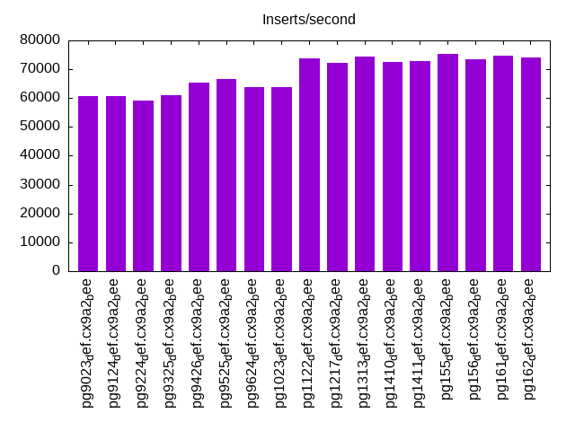
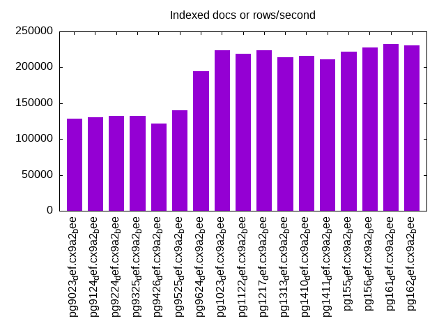
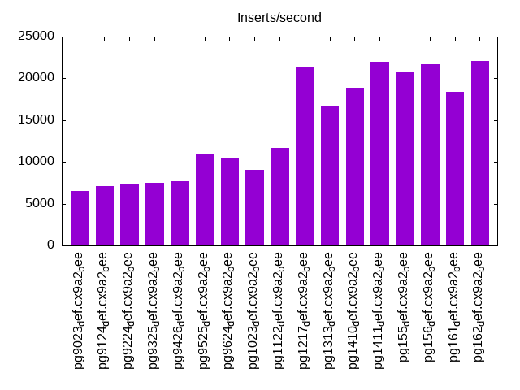
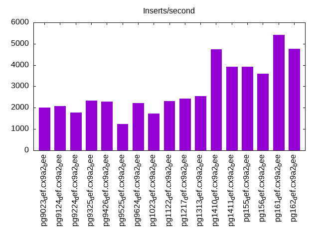
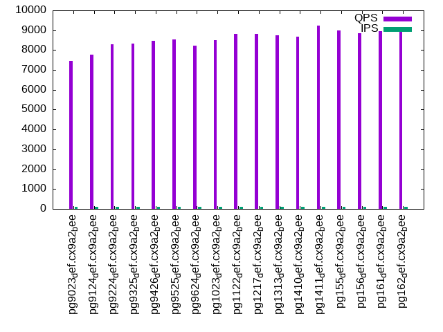
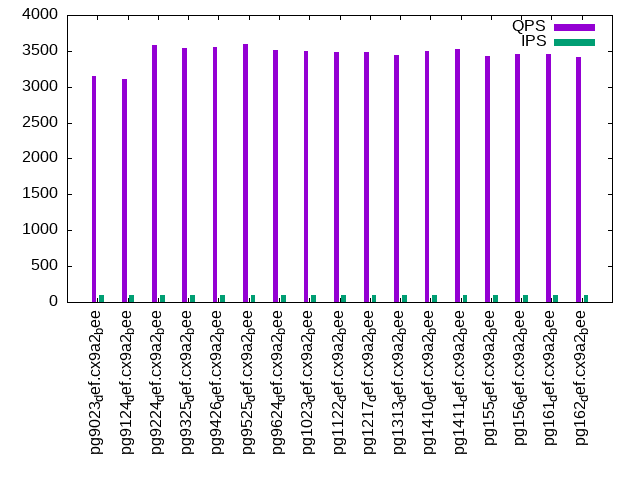
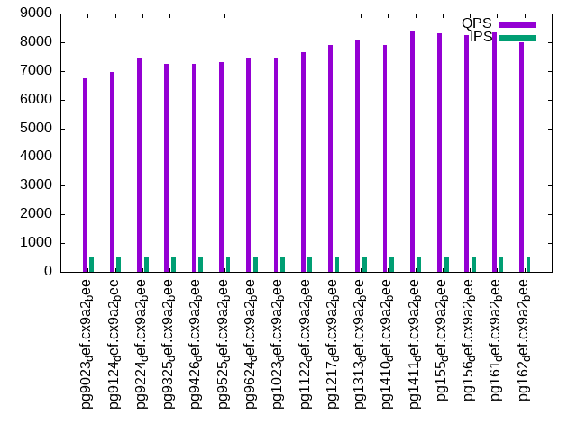
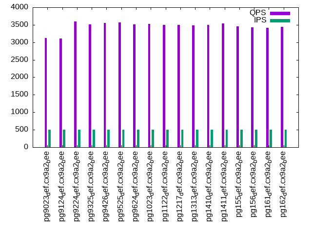
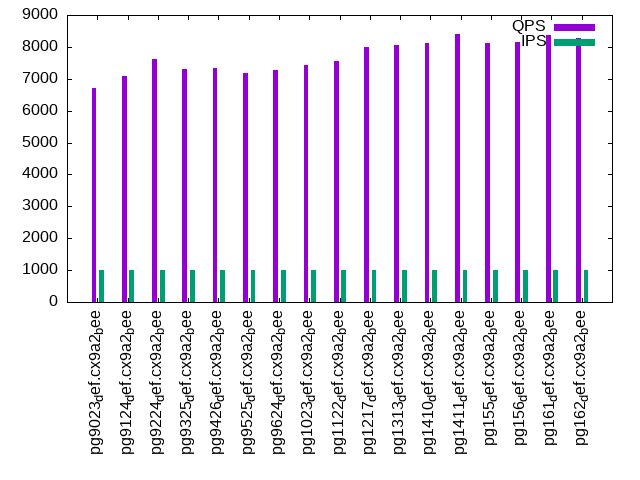
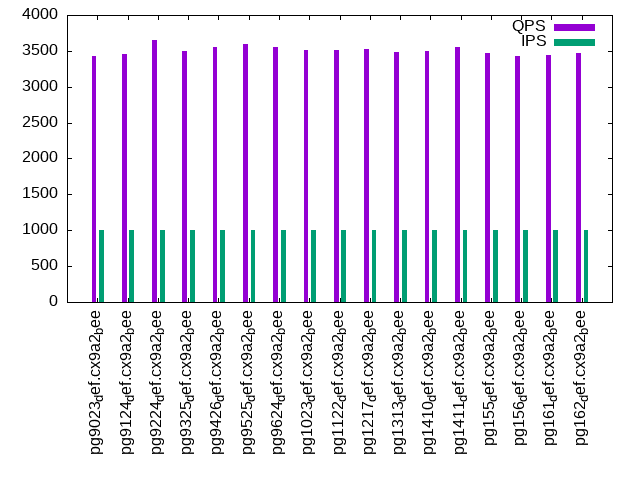

This is a report for the insert benchmark with 30M docs and 1 client(s). It is generated by scripts (bash, awk, sed) and Tufte might not be impressed. An overview of the insert benchmark is here and a short update is here. Below, by DBMS, I mean DBMS+version.config. An example is my8020.c10b40 where my means MySQL, 8020 is version 8.0.20 and c10b40 is the name for the configuration file.
The test server has 8 AMD cores, 16G RAM and an NVMe SSD. It is described here as the Beelink. The benchmark was run with 1 client and there were 1 or 3 connections per client (1 for queries or inserts without rate limits, 1+1 for rate limited inserts+deletes). It uses 1 table. It loads 30M rows per table without secondary indexes, creates 3 secondary indexes per table, then inserts 50m+50m rows per table with a delete per insert to avoid growing the table. It then does 6 read+write tests for 1800s each that do queries as fast as possible with 100,100,500,500,1000,1000 inserts/s and the same for deletes/s per client concurrent with the queries. The database is cached in memory. Clients and the DBMS share one server. The per-database configs are in the per-database subdirectories here.
The tested DBMS are:
The numbers are inserts/s for l.i0, l.i1 and l.i2, indexed docs (or rows) /s for l.x and queries/s for qr100, qp100 thru qr1000, qp1000" The values are the average rate over the entire test for inserts (IPS) and queries (QPS). The range of values for IPS and QPS is split into 3 parts: bottom 25%, middle 50%, top 25%. Values in the bottom 25% have a red background, values in the top 25% have a green background and values in the middle have no color. A gray background is used for values that can be ignored because the DBMS did not sustain the target insert rate. Red backgrounds are not used when the minimum value is within 80% of the max value.
| dbms | l.i0 | l.x | l.i1 | l.i2 | qr100 | qp100 | qr500 | qp500 | qr1000 | qp1000 |
|---|---|---|---|---|---|---|---|---|---|---|
| pg9023_def.cx9a2_bee | 60606 | 128756 | 6523 | 2016 | 7470 | 3151 | 6731 | 3128 | 6701 | 3427 |
| pg9124_def.cx9a2_bee | 60852 | 129870 | 7129 | 2086 | 7776 | 3112 | 6954 | 3105 | 7100 | 3456 |
| pg9224_def.cx9a2_bee | 59055 | 132744 | 7287 | 1771 | 8310 | 3575 | 7468 | 3601 | 7629 | 3649 |
| pg9325_def.cx9a2_bee | 60976 | 132159 | 7478 | 2337 | 8333 | 3537 | 7257 | 3513 | 7313 | 3503 |
| pg9426_def.cx9a2_bee | 65502 | 121458 | 7679 | 2288 | 8463 | 3554 | 7250 | 3560 | 7346 | 3553 |
| pg9525_def.cx9a2_bee | 66667 | 140187 | 10855 | 1240 | 8529 | 3599 | 7322 | 3561 | 7186 | 3592 |
| pg9624_def.cx9a2_bee | 63694 | 194806 | 10532 | 2227 | 8226 | 3519 | 7436 | 3512 | 7286 | 3554 |
| pg1023_def.cx9a2_bee | 63830 | 223881 | 9009 | 1737 | 8509 | 3500 | 7467 | 3527 | 7433 | 3518 |
| pg1122_def.cx9a2_bee | 73892 | 218979 | 11703 | 2318 | 8813 | 3484 | 7659 | 3492 | 7571 | 3514 |
| pg1217_def.cx9a2_bee | 72115 | 223881 | 21322 | 2432 | 8815 | 3483 | 7917 | 3495 | 7991 | 3523 |
| pg1313_def.cx9a2_bee | 74442 | 214286 | 16667 | 2554 | 8740 | 3448 | 8078 | 3478 | 8051 | 3485 |
| pg1410_def.cx9a2_bee | 72464 | 215828 | 18859 | 4733 | 8666 | 3492 | 7912 | 3498 | 8119 | 3505 |
| pg1411_def.cx9a2_bee | 72816 | 211268 | 21990 | 3922 | 9230 | 3528 | 8386 | 3544 | 8402 | 3553 |
| pg155_def.cx9a2_bee | 75377 | 222223 | 20758 | 3929 | 8990 | 3430 | 8309 | 3457 | 8108 | 3465 |
| pg156_def.cx9a2_bee | 73529 | 227273 | 21692 | 3598 | 8846 | 3456 | 8255 | 3427 | 8156 | 3422 |
| pg161_def.cx9a2_bee | 74627 | 232559 | 18365 | 5426 | 8958 | 3455 | 8337 | 3419 | 8388 | 3441 |
| pg162_def.cx9a2_bee | 74074 | 230770 | 22075 | 4766 | 8939 | 3409 | 7981 | 3437 | 8269 | 3468 |
This table has relative throughput, throughput for the DBMS relative to the DBMS in the first line, using the absolute throughput from the previous table. Values less than 0.95 have a yellow background. Values greater than 1.05 have a blue background.
| dbms | l.i0 | l.x | l.i1 | l.i2 | qr100 | qp100 | qr500 | qp500 | qr1000 | qp1000 |
|---|---|---|---|---|---|---|---|---|---|---|
| pg9023_def.cx9a2_bee | 1.00 | 1.00 | 1.00 | 1.00 | 1.00 | 1.00 | 1.00 | 1.00 | 1.00 | 1.00 |
| pg9124_def.cx9a2_bee | 1.00 | 1.01 | 1.09 | 1.03 | 1.04 | 0.99 | 1.03 | 0.99 | 1.06 | 1.01 |
| pg9224_def.cx9a2_bee | 0.97 | 1.03 | 1.12 | 0.88 | 1.11 | 1.13 | 1.11 | 1.15 | 1.14 | 1.06 |
| pg9325_def.cx9a2_bee | 1.01 | 1.03 | 1.15 | 1.16 | 1.12 | 1.12 | 1.08 | 1.12 | 1.09 | 1.02 |
| pg9426_def.cx9a2_bee | 1.08 | 0.94 | 1.18 | 1.13 | 1.13 | 1.13 | 1.08 | 1.14 | 1.10 | 1.04 |
| pg9525_def.cx9a2_bee | 1.10 | 1.09 | 1.66 | 0.62 | 1.14 | 1.14 | 1.09 | 1.14 | 1.07 | 1.05 |
| pg9624_def.cx9a2_bee | 1.05 | 1.51 | 1.61 | 1.10 | 1.10 | 1.12 | 1.10 | 1.12 | 1.09 | 1.04 |
| pg1023_def.cx9a2_bee | 1.05 | 1.74 | 1.38 | 0.86 | 1.14 | 1.11 | 1.11 | 1.13 | 1.11 | 1.03 |
| pg1122_def.cx9a2_bee | 1.22 | 1.70 | 1.79 | 1.15 | 1.18 | 1.11 | 1.14 | 1.12 | 1.13 | 1.03 |
| pg1217_def.cx9a2_bee | 1.19 | 1.74 | 3.27 | 1.21 | 1.18 | 1.11 | 1.18 | 1.12 | 1.19 | 1.03 |
| pg1313_def.cx9a2_bee | 1.23 | 1.66 | 2.56 | 1.27 | 1.17 | 1.09 | 1.20 | 1.11 | 1.20 | 1.02 |
| pg1410_def.cx9a2_bee | 1.20 | 1.68 | 2.89 | 2.35 | 1.16 | 1.11 | 1.18 | 1.12 | 1.21 | 1.02 |
| pg1411_def.cx9a2_bee | 1.20 | 1.64 | 3.37 | 1.95 | 1.24 | 1.12 | 1.25 | 1.13 | 1.25 | 1.04 |
| pg155_def.cx9a2_bee | 1.24 | 1.73 | 3.18 | 1.95 | 1.20 | 1.09 | 1.23 | 1.11 | 1.21 | 1.01 |
| pg156_def.cx9a2_bee | 1.21 | 1.77 | 3.33 | 1.78 | 1.18 | 1.10 | 1.23 | 1.10 | 1.22 | 1.00 |
| pg161_def.cx9a2_bee | 1.23 | 1.81 | 2.82 | 2.69 | 1.20 | 1.10 | 1.24 | 1.09 | 1.25 | 1.00 |
| pg162_def.cx9a2_bee | 1.22 | 1.79 | 3.38 | 2.36 | 1.20 | 1.08 | 1.19 | 1.10 | 1.23 | 1.01 |
This lists the average rate of inserts/s for the tests that do inserts concurrent with queries. For such tests the query rate is listed in the table above. The read+write tests are setup so that the insert rate should match the target rate every second. Cells that are not at least 95% of the target have a red background to indicate a failure to satisfy the target.
| dbms | qr100.L1 | qp100.L2 | qr500.L3 | qp500.L4 | qr1000.L5 | qp1000.L6 |
|---|---|---|---|---|---|---|
| pg9023_def.cx9a2_bee | 100 | 100 | 499 | 499 | 998 | 998 |
| pg9124_def.cx9a2_bee | 100 | 100 | 499 | 499 | 997 | 998 |
| pg9224_def.cx9a2_bee | 100 | 100 | 499 | 499 | 998 | 998 |
| pg9325_def.cx9a2_bee | 100 | 100 | 499 | 499 | 998 | 998 |
| pg9426_def.cx9a2_bee | 100 | 100 | 499 | 499 | 998 | 999 |
| pg9525_def.cx9a2_bee | 100 | 100 | 499 | 499 | 997 | 998 |
| pg9624_def.cx9a2_bee | 100 | 100 | 499 | 499 | 998 | 998 |
| pg1023_def.cx9a2_bee | 100 | 100 | 499 | 499 | 998 | 998 |
| pg1122_def.cx9a2_bee | 100 | 100 | 499 | 499 | 998 | 998 |
| pg1217_def.cx9a2_bee | 100 | 100 | 499 | 499 | 998 | 998 |
| pg1313_def.cx9a2_bee | 100 | 100 | 499 | 499 | 997 | 998 |
| pg1410_def.cx9a2_bee | 100 | 100 | 499 | 499 | 998 | 998 |
| pg1411_def.cx9a2_bee | 100 | 100 | 499 | 499 | 998 | 997 |
| pg155_def.cx9a2_bee | 100 | 100 | 499 | 499 | 998 | 998 |
| pg156_def.cx9a2_bee | 100 | 100 | 499 | 499 | 998 | 998 |
| pg161_def.cx9a2_bee | 100 | 100 | 499 | 499 | 997 | 998 |
| pg162_def.cx9a2_bee | 100 | 100 | 499 | 499 | 997 | 998 |
| target | 100 | 100 | 500 | 500 | 1000 | 1000 |
l.i0: load without secondary indexes. Graphs for performance per 1-second interval are here.
Average throughput:
Insert response time histogram: each cell has the percentage of responses that take <= the time in the header and max is the max response time in seconds. For the max column values in the top 25% of the range have a red background and in the bottom 25% of the range have a green background. The red background is not used when the min value is within 80% of the max value.
| dbms | 256us | 1ms | 4ms | 16ms | 64ms | 256ms | 1s | 4s | 16s | gt | max |
|---|---|---|---|---|---|---|---|---|---|---|---|
| pg9023_def.cx9a2_bee | 99.134 | 0.801 | 0.065 | 0.044 | |||||||
| pg9124_def.cx9a2_bee | 99.924 | 0.075 | 0.001 | 0.041 | |||||||
| pg9224_def.cx9a2_bee | 99.937 | 0.062 | 0.001 | 0.038 | |||||||
| pg9325_def.cx9a2_bee | 99.893 | 0.106 | 0.001 | 0.046 | |||||||
| pg9426_def.cx9a2_bee | 99.893 | 0.106 | 0.002 | 0.060 | |||||||
| pg9525_def.cx9a2_bee | 100.000 | 0.003 | |||||||||
| pg9624_def.cx9a2_bee | 100.000 | 0.004 | |||||||||
| pg1023_def.cx9a2_bee | 100.000 | 0.004 | |||||||||
| pg1122_def.cx9a2_bee | 100.000 | 0.003 | |||||||||
| pg1217_def.cx9a2_bee | 100.000 | 0.003 | |||||||||
| pg1313_def.cx9a2_bee | 100.000 | 0.003 | |||||||||
| pg1410_def.cx9a2_bee | 100.000 | 0.003 | |||||||||
| pg1411_def.cx9a2_bee | 100.000 | 0.003 | |||||||||
| pg155_def.cx9a2_bee | 100.000 | 0.003 | |||||||||
| pg156_def.cx9a2_bee | 100.000 | 0.003 | |||||||||
| pg161_def.cx9a2_bee | 100.000 | 0.003 | |||||||||
| pg162_def.cx9a2_bee | 100.000 | 0.003 |
Performance metrics for the DBMS listed above. Some are normalized by throughput, others are not. Legend for results is here.
ips qps rps rmbps wps wmbps rpq rkbpq wpi wkbpi csps cpups cspq cpupq dbgb1 dbgb2 rss maxop p50 p99 tag 60606 0 0 0.0 272.0 22.5 0.000 0.000 0.004 0.381 6405 21.4 0.106 28 2.9 3.0 0.4 0.044 60742 58034 pg9023_def.cx9a2_bee 60852 0 0 0.0 280.9 22.7 0.000 0.000 0.005 0.382 6431 22.3 0.106 29 2.9 3.0 0.2 0.041 61027 59230 pg9124_def.cx9a2_bee 59055 0 0 0.0 1402.4 22.0 0.000 0.000 0.024 0.382 9891 22.1 0.167 30 2.9 3.0 0.2 0.038 59257 57232 pg9224_def.cx9a2_bee 60976 0 0 0.0 1118.2 25.4 0.000 0.000 0.018 0.427 9055 22.7 0.148 30 2.9 3.0 0.2 0.046 61131 58260 pg9325_def.cx9a2_bee 65502 0 0 0.0 1131.5 27.4 0.000 0.000 0.017 0.428 9363 22.5 0.143 27 2.9 3.0 1.4 0.060 65828 62615 pg9426_def.cx9a2_bee 66667 0 0 0.0 890.7 28.6 0.000 0.000 0.013 0.439 9487 22.0 0.142 26 2.9 7.8 0.2 0.003 67026 64875 pg9525_def.cx9a2_bee 63694 0 0 0.0 74.5 27.3 0.000 0.000 0.001 0.438 7887 23.1 0.124 29 2.9 7.8 0.2 0.004 63930 62525 pg9624_def.cx9a2_bee 63830 0 0 0.0 75.3 27.4 0.000 0.000 0.001 0.440 7875 23.2 0.123 29 2.9 7.8 0.2 0.004 64129 62327 pg1023_def.cx9a2_bee 73892 0 0 0.0 87.1 31.7 0.000 0.000 0.001 0.440 9133 23.7 0.124 26 2.9 7.8 2.8 0.003 74225 71916 pg1122_def.cx9a2_bee 72115 0 0 0.0 84.2 30.8 0.000 0.000 0.001 0.438 8896 23.2 0.123 26 2.9 7.8 3.0 0.003 72219 70382 pg1217_def.cx9a2_bee 74442 0 0 0.0 87.0 32.0 0.000 0.000 0.001 0.440 9145 23.7 0.123 25 2.9 7.8 0.0 0.003 74846 72615 pg1313_def.cx9a2_bee 72464 0 0 0.0 85.1 31.2 0.000 0.000 0.001 0.441 9077 23.1 0.125 26 2.9 7.8 2.8 0.003 72920 70615 pg1410_def.cx9a2_bee 72816 0 0 0.0 85.3 31.3 0.000 0.000 0.001 0.441 9112 23.0 0.125 25 2.9 7.8 0.2 0.003 73418 69513 pg1411_def.cx9a2_bee 75377 0 0 0.0 87.7 32.3 0.000 0.000 0.001 0.438 9252 23.1 0.123 25 2.9 7.8 2.9 0.003 75615 73465 pg155_def.cx9a2_bee 73529 0 0 0.0 86.0 31.5 0.000 0.000 0.001 0.439 9091 23.0 0.124 25 2.9 7.8 0.2 0.003 73619 71711 pg156_def.cx9a2_bee 74627 0 0 0.0 86.6 31.9 0.000 0.000 0.001 0.438 9226 23.2 0.124 25 2.9 7.8 0.2 0.003 74816 72913 pg161_def.cx9a2_bee 74074 0 0 0.0 86.7 31.8 0.000 0.000 0.001 0.439 9186 22.9 0.124 25 2.9 7.8 0.2 0.003 74423 71998 pg162_def.cx9a2_bee
l.x: create secondary indexes.
Average throughput:
Performance metrics for the DBMS listed above. Some are normalized by throughput, others are not. Legend for results is here.
ips qps rps rmbps wps wmbps rpq rkbpq wpi wkbpi csps cpups cspq cpupq dbgb1 dbgb2 rss maxop p50 p99 tag 128756 0 0 0.0 242.8 42.3 0.000 0.000 0.002 0.337 446 11.7 0.003 7 5.8 5.9 2.7 0.003 NA NA pg9023_def.cx9a2_bee 129870 0 0 0.0 252.3 42.0 0.000 0.000 0.002 0.331 451 12.1 0.003 7 5.8 5.9 2.7 0.003 NA NA pg9124_def.cx9a2_bee 132744 0 0 0.0 251.8 41.3 0.000 0.000 0.002 0.318 368 11.9 0.003 7 5.8 6.0 2.7 0.003 NA NA pg9224_def.cx9a2_bee 132159 0 0 0.0 259.8 47.7 0.000 0.000 0.002 0.369 383 12.1 0.003 7 5.8 5.9 3.0 0.003 NA NA pg9325_def.cx9a2_bee 121458 0 0 0.0 226.6 37.1 0.000 0.000 0.002 0.313 414 12.2 0.003 8 5.8 5.9 3.0 0.003 NA NA pg9426_def.cx9a2_bee 140187 0 0 0.0 100.4 45.6 0.000 0.000 0.001 0.333 437 11.7 0.003 7 5.8 13.3 3.0 0.003 NA NA pg9525_def.cx9a2_bee 194806 0 0 0.0 138.7 64.0 0.000 0.000 0.001 0.337 617 11.7 0.003 5 5.8 13.3 3.0 0.003 NA NA pg9624_def.cx9a2_bee 223881 0 0 0.0 153.7 71.4 0.000 0.000 0.001 0.327 585 11.5 0.003 4 5.8 13.3 3.0 0.004 NA NA pg1023_def.cx9a2_bee 218979 0 0 0.0 152.6 70.6 0.000 0.000 0.001 0.330 629 11.5 0.003 4 5.8 13.3 3.0 0.004 NA NA pg1122_def.cx9a2_bee 223881 0 0 0.0 149.2 69.4 0.000 0.000 0.001 0.317 625 11.6 0.003 4 5.8 13.3 3.0 0.003 NA NA pg1217_def.cx9a2_bee 214286 0 0 0.0 169.9 79.0 0.000 0.000 0.001 0.377 848 11.6 0.004 4 5.8 13.3 3.0 0.003 NA NA pg1313_def.cx9a2_bee 215828 0 0 0.0 147.4 68.5 0.000 0.000 0.001 0.325 662 11.9 0.003 4 5.8 13.3 3.0 0.003 NA NA pg1410_def.cx9a2_bee 211268 0 0 0.0 153.6 71.0 0.000 0.000 0.001 0.344 609 11.5 0.003 4 5.8 13.3 3.0 0.003 NA NA pg1411_def.cx9a2_bee 222223 0 0 0.0 176.7 82.2 0.000 0.000 0.001 0.379 686 11.5 0.003 4 5.8 13.3 3.0 0.003 NA NA pg155_def.cx9a2_bee 227273 0 0 0.0 166.5 77.4 0.000 0.000 0.001 0.349 502 11.5 0.002 4 5.8 13.3 3.0 0.003 NA NA pg156_def.cx9a2_bee 232559 0 0 0.0 168.9 78.6 0.000 0.000 0.001 0.346 487 11.5 0.002 4 5.8 13.3 3.1 0.003 NA NA pg161_def.cx9a2_bee 230770 0 0 0.0 171.5 79.7 0.000 0.000 0.001 0.354 578 11.5 0.003 4 5.8 13.3 3.1 0.003 NA NA pg162_def.cx9a2_bee
l.i1: continue load after secondary indexes created with 50 inserts per transaction. Graphs for performance per 1-second interval are here.
Average throughput:
Insert response time histogram: each cell has the percentage of responses that take <= the time in the header and max is the max response time in seconds. For the max column values in the top 25% of the range have a red background and in the bottom 25% of the range have a green background. The red background is not used when the min value is within 80% of the max value.
| dbms | 256us | 1ms | 4ms | 16ms | 64ms | 256ms | 1s | 4s | 16s | gt | max |
|---|---|---|---|---|---|---|---|---|---|---|---|
| pg9023_def.cx9a2_bee | 97.778 | 2.222 | nonzero | 0.086 | |||||||
| pg9124_def.cx9a2_bee | 99.528 | 0.472 | 0.001 | 0.094 | |||||||
| pg9224_def.cx9a2_bee | 99.918 | 0.082 | 0.001 | 0.122 | |||||||
| pg9325_def.cx9a2_bee | 1.008 | 98.674 | 0.270 | 0.047 | nonzero | 0.314 | |||||
| pg9426_def.cx9a2_bee | 0.016 | 99.677 | 0.295 | 0.013 | 0.131 | ||||||
| pg9525_def.cx9a2_bee | 99.989 | 0.007 | 0.003 | 0.064 | |||||||
| pg9624_def.cx9a2_bee | 99.998 | 0.002 | nonzero | 0.043 | |||||||
| pg1023_def.cx9a2_bee | 99.991 | 0.008 | 0.001 | 0.023 | |||||||
| pg1122_def.cx9a2_bee | 99.998 | 0.002 | 0.015 | ||||||||
| pg1217_def.cx9a2_bee | 99.966 | 0.034 | nonzero | 0.019 | |||||||
| pg1313_def.cx9a2_bee | 99.999 | 0.001 | nonzero | 0.020 | |||||||
| pg1410_def.cx9a2_bee | 99.996 | 0.003 | nonzero | 0.019 | |||||||
| pg1411_def.cx9a2_bee | 99.996 | 0.003 | nonzero | 0.047 | |||||||
| pg155_def.cx9a2_bee | 99.997 | 0.002 | nonzero | 0.016 | |||||||
| pg156_def.cx9a2_bee | 99.986 | 0.008 | 0.006 | 0.028 | |||||||
| pg161_def.cx9a2_bee | 99.997 | 0.003 | 0.015 | ||||||||
| pg162_def.cx9a2_bee | 99.803 | 0.196 | nonzero | 0.019 |
Delete response time histogram: each cell has the percentage of responses that take <= the time in the header and max is the max response time in seconds. For the max column values in the top 25% of the range have a red background and in the bottom 25% of the range have a green background. The red background is not used when the min value is within 80% of the max value.
| dbms | 256us | 1ms | 4ms | 16ms | 64ms | 256ms | 1s | 4s | 16s | gt | max |
|---|---|---|---|---|---|---|---|---|---|---|---|
| pg9023_def.cx9a2_bee | 0.029 | 70.034 | 2.266 | 27.311 | 0.358 | 0.003 | 0.078 | ||||
| pg9124_def.cx9a2_bee | 0.028 | 74.268 | 0.400 | 22.695 | 2.606 | 0.004 | 0.142 | ||||
| pg9224_def.cx9a2_bee | 0.029 | 75.064 | 0.357 | 24.392 | 0.155 | 0.004 | 0.100 | ||||
| pg9325_def.cx9a2_bee | 0.025 | 79.850 | 0.399 | 18.069 | 1.645 | 0.010 | 0.002 | 0.534 | |||
| pg9426_def.cx9a2_bee | 0.026 | 79.745 | 0.443 | 19.667 | 0.114 | 0.005 | nonzero | 0.326 | |||
| pg9525_def.cx9a2_bee | 0.352 | 82.865 | 0.486 | 1.406 | 14.888 | 0.003 | nonzero | 0.273 | |||
| pg9624_def.cx9a2_bee | 0.321 | 81.721 | 0.471 | 2.932 | 14.552 | 0.003 | 0.166 | ||||
| pg1023_def.cx9a2_bee | 0.211 | 81.126 | 0.425 | 2.196 | 16.039 | 0.003 | nonzero | 0.265 | |||
| pg1122_def.cx9a2_bee | 0.412 | 82.219 | 0.449 | 7.707 | 9.214 | 0.026 | |||||
| pg1217_def.cx9a2_bee | 0.300 | 82.314 | 11.307 | 6.077 | 0.002 | 0.036 | |||||
| pg1313_def.cx9a2_bee | 0.248 | 81.864 | 0.589 | 17.299 | nonzero | 0.025 | |||||
| pg1410_def.cx9a2_bee | 0.144 | 81.635 | 2.849 | 15.372 | nonzero | 0.017 | |||||
| pg1411_def.cx9a2_bee | 0.192 | 81.691 | 6.410 | 11.706 | nonzero | 0.046 | |||||
| pg155_def.cx9a2_bee | 0.142 | 81.495 | 4.366 | 13.997 | 0.013 | ||||||
| pg156_def.cx9a2_bee | 0.109 | 81.833 | 5.666 | 12.390 | 0.002 | 0.026 | |||||
| pg161_def.cx9a2_bee | 0.128 | 81.658 | 1.726 | 16.488 | 0.014 | ||||||
| pg162_def.cx9a2_bee | 0.129 | 82.722 | 4.485 | 12.664 | nonzero | 0.017 |
Performance metrics for the DBMS listed above. Some are normalized by throughput, others are not. Legend for results is here.
ips qps rps rmbps wps wmbps rpq rkbpq wpi wkbpi csps cpups cspq cpupq dbgb1 dbgb2 rss maxop p50 p99 tag 6523 0 4 0.0 13215.1 226.7 0.001 0.004 2.026 35.593 4929 20.7 0.756 254 8.0 8.1 3.2 0.086 6842 3996 pg9023_def.cx9a2_bee 7129 0 3 0.0 14409.9 246.7 0.000 0.003 2.021 35.439 4673 23.3 0.656 261 8.0 8.2 5.2 0.094 8389 2547 pg9124_def.cx9a2_bee 7287 0 3 0.0 14693.8 249.4 0.000 0.003 2.016 35.050 5880 23.8 0.807 261 8.0 8.2 3.7 0.122 8494 3295 pg9224_def.cx9a2_bee 7478 0 12 0.1 14556.2 250.6 0.002 0.008 1.947 34.320 5695 23.2 0.762 248 8.2 8.4 5.4 0.314 8747 2648 pg9325_def.cx9a2_bee 7679 0 4 0.0 15155.8 260.0 0.001 0.004 1.974 34.677 5079 23.7 0.661 247 8.2 8.4 6.6 0.131 8790 3349 pg9426_def.cx9a2_bee 10855 0 30 0.1 448.9 18.9 0.003 0.013 0.041 1.782 5652 18.4 0.521 136 8.4 42.6 6.3 0.064 2747 1897 pg9525_def.cx9a2_bee 10532 0 29 0.1 65.1 18.5 0.003 0.013 0.006 1.799 5480 18.2 0.520 138 8.3 42.8 5.3 0.043 2847 1948 pg9624_def.cx9a2_bee 9009 0 25 0.1 54.7 14.9 0.003 0.013 0.006 1.690 4706 17.6 0.522 156 8.3 39.1 5.3 0.023 2198 1748 pg1023_def.cx9a2_bee 11703 0 32 0.1 59.7 16.0 0.003 0.013 0.005 1.402 5960 18.7 0.509 128 8.3 31.0 4.6 0.015 3346 2148 pg1122_def.cx9a2_bee 21322 0 52 0.5 98.5 29.5 0.002 0.026 0.005 1.419 10600 24.6 0.497 92 8.1 38.7 5.0 0.019 28621 3795 pg1217_def.cx9a2_bee 16667 0 49 0.2 86.0 23.5 0.003 0.012 0.005 1.443 8367 22.2 0.502 107 8.2 37.1 0.3 0.020 7442 4548 pg1313_def.cx9a2_bee 18859 0 50 0.2 87.8 26.2 0.003 0.012 0.005 1.425 9298 21.4 0.493 91 7.9 39.1 5.0 0.019 27632 4645 pg1410_def.cx9a2_bee 21990 0 62 0.3 97.8 29.3 0.003 0.013 0.004 1.366 10801 22.9 0.491 83 7.9 38.5 7.6 0.047 28728 6593 pg1411_def.cx9a2_bee 20758 0 54 0.2 92.7 27.7 0.003 0.012 0.004 1.365 10167 22.3 0.490 86 7.9 38.5 1.3 0.016 28268 4645 pg155_def.cx9a2_bee 21692 0 59 0.3 95.5 28.7 0.003 0.012 0.004 1.356 10631 22.8 0.490 84 7.9 38.4 6.5 0.028 28319 6593 pg156_def.cx9a2_bee 18365 0 48 0.2 85.7 25.4 0.003 0.012 0.005 1.417 9025 21.1 0.491 92 7.9 39.0 5.7 0.015 27069 3996 pg161_def.cx9a2_bee 22075 0 105 0.7 97.5 29.4 0.005 0.031 0.004 1.364 10859 22.9 0.492 83 7.9 38.5 6.6 0.019 28333 6843 pg162_def.cx9a2_bee
l.i2: continue load after secondary indexes created with 5 inserts per transaction. Graphs for performance per 1-second interval are here.
Average throughput:
Insert response time histogram: each cell has the percentage of responses that take <= the time in the header and max is the max response time in seconds. For the max column values in the top 25% of the range have a red background and in the bottom 25% of the range have a green background. The red background is not used when the min value is within 80% of the max value.
| dbms | 256us | 1ms | 4ms | 16ms | 64ms | 256ms | 1s | 4s | 16s | gt | max |
|---|---|---|---|---|---|---|---|---|---|---|---|
| pg9023_def.cx9a2_bee | 82.718 | 15.653 | 1.603 | 0.025 | 0.044 | ||||||
| pg9124_def.cx9a2_bee | 92.204 | 7.615 | 0.134 | 0.046 | 0.032 | ||||||
| pg9224_def.cx9a2_bee | 89.450 | 10.375 | 0.175 | 0.001 | 0.043 | ||||||
| pg9325_def.cx9a2_bee | 93.940 | 5.867 | 0.192 | 0.001 | nonzero | 0.094 | |||||
| pg9426_def.cx9a2_bee | 94.353 | 5.448 | 0.197 | 0.002 | nonzero | 0.070 | |||||
| pg9525_def.cx9a2_bee | 22.001 | 77.995 | 0.003 | nonzero | nonzero | 0.036 | |||||
| pg9624_def.cx9a2_bee | 21.278 | 78.720 | 0.002 | nonzero | 0.004 | ||||||
| pg1023_def.cx9a2_bee | 10.433 | 89.564 | 0.003 | nonzero | nonzero | 0.027 | |||||
| pg1122_def.cx9a2_bee | 32.516 | 67.482 | 0.002 | 0.004 | |||||||
| pg1217_def.cx9a2_bee | 31.769 | 68.227 | 0.002 | 0.001 | nonzero | 0.041 | |||||
| pg1313_def.cx9a2_bee | 36.840 | 63.156 | 0.003 | nonzero | 0.011 | ||||||
| pg1410_def.cx9a2_bee | 23.045 | 76.951 | 0.003 | nonzero | 0.010 | ||||||
| pg1411_def.cx9a2_bee | 21.264 | 78.733 | 0.003 | nonzero | 0.005 | ||||||
| pg155_def.cx9a2_bee | 22.301 | 77.696 | 0.003 | nonzero | 0.007 | ||||||
| pg156_def.cx9a2_bee | 17.658 | 82.339 | 0.002 | nonzero | 0.006 | ||||||
| pg161_def.cx9a2_bee | 20.230 | 79.766 | 0.004 | nonzero | 0.005 | ||||||
| pg162_def.cx9a2_bee | 19.666 | 80.330 | 0.004 | nonzero | 0.004 |
Delete response time histogram: each cell has the percentage of responses that take <= the time in the header and max is the max response time in seconds. For the max column values in the top 25% of the range have a red background and in the bottom 25% of the range have a green background. The red background is not used when the min value is within 80% of the max value.
| dbms | 256us | 1ms | 4ms | 16ms | 64ms | 256ms | 1s | 4s | 16s | gt | max |
|---|---|---|---|---|---|---|---|---|---|---|---|
| pg9023_def.cx9a2_bee | 40.363 | 32.267 | 1.896 | 25.413 | 0.059 | nonzero | 0.071 | ||||
| pg9124_def.cx9a2_bee | 44.712 | 31.842 | 0.027 | 23.399 | 0.020 | nonzero | 0.075 | ||||
| pg9224_def.cx9a2_bee | 39.452 | 34.922 | 0.012 | 25.614 | nonzero | nonzero | 0.080 | ||||
| pg9325_def.cx9a2_bee | 43.132 | 38.441 | 0.023 | 18.403 | nonzero | nonzero | 0.221 | ||||
| pg9426_def.cx9a2_bee | 43.983 | 38.074 | 0.029 | 17.912 | nonzero | nonzero | 0.216 | ||||
| pg9525_def.cx9a2_bee | 60.326 | 19.482 | 0.001 | 2.710 | 17.480 | nonzero | 0.186 | ||||
| pg9624_def.cx9a2_bee | 65.346 | 15.235 | 0.003 | 19.245 | 0.171 | nonzero | 0.109 | ||||
| pg1023_def.cx9a2_bee | 63.516 | 16.188 | 0.004 | 19.679 | 0.612 | nonzero | 0.109 | ||||
| pg1122_def.cx9a2_bee | 66.602 | 15.958 | 0.004 | 17.429 | 0.007 | 0.017 | |||||
| pg1217_def.cx9a2_bee | 64.415 | 17.715 | 0.518 | 17.352 | nonzero | 0.041 | |||||
| pg1313_def.cx9a2_bee | 67.123 | 14.669 | 0.003 | 18.206 | 0.014 | ||||||
| pg1410_def.cx9a2_bee | 57.903 | 24.338 | 6.923 | 10.836 | 0.009 | ||||||
| pg1411_def.cx9a2_bee | 54.303 | 24.587 | 7.534 | 13.577 | nonzero | 0.017 | |||||
| pg155_def.cx9a2_bee | 55.696 | 24.033 | 6.053 | 14.218 | 0.015 | ||||||
| pg156_def.cx9a2_bee | 54.011 | 26.006 | 2.821 | 17.162 | 0.014 | ||||||
| pg161_def.cx9a2_bee | 55.463 | 24.475 | 16.532 | 3.530 | 0.009 | ||||||
| pg162_def.cx9a2_bee | 54.721 | 25.136 | 12.423 | 7.720 | 0.010 |
Performance metrics for the DBMS listed above. Some are normalized by throughput, others are not. Legend for results is here.
ips qps rps rmbps wps wmbps rpq rkbpq wpi wkbpi csps cpups cspq cpupq dbgb1 dbgb2 rss maxop p50 p99 tag 2016 0 0 0.0 4087.8 67.8 0.000 0.000 2.028 34.430 9179 17.0 4.553 675 8.1 8.2 3.2 0.044 739 460 pg9023_def.cx9a2_bee 2086 0 0 0.0 4222.0 68.9 0.000 0.000 2.024 33.810 9221 17.5 4.421 671 8.1 8.3 3.3 0.032 654 429 pg9124_def.cx9a2_bee 1771 0 0 0.0 3774.7 57.9 0.000 0.000 2.132 33.490 8724 17.0 4.927 768 8.1 8.3 2.9 0.043 559 370 pg9224_def.cx9a2_bee 2337 0 0 0.0 4937.2 75.7 0.000 0.000 2.113 33.183 11269 18.2 4.822 623 8.3 8.5 3.8 0.094 614 430 pg9325_def.cx9a2_bee 2288 0 0 0.0 4822.3 74.2 0.000 0.000 2.107 33.224 10795 18.1 4.717 633 8.3 8.5 6.9 0.070 575 375 pg9426_def.cx9a2_bee 1240 0 0 0.0 208.2 3.7 0.000 0.000 0.168 3.092 5434 13.8 4.383 891 8.4 37.8 4.5 0.036 270 210 pg9525_def.cx9a2_bee 2227 0 0 0.0 25.0 4.4 0.000 0.000 0.011 2.001 10875 15.3 4.883 550 8.4 42.1 6.6 0.004 489 310 pg9624_def.cx9a2_bee 1737 0 0 0.0 25.8 4.4 0.000 0.000 0.015 2.600 8563 14.8 4.930 682 8.4 37.5 6.6 0.027 385 300 pg1023_def.cx9a2_bee 2318 0 0 0.0 29.2 5.2 0.000 0.000 0.013 2.292 11266 15.5 4.860 535 8.4 30.6 1.7 0.004 455 325 pg1122_def.cx9a2_bee 2432 0 0 0.0 28.5 5.2 0.000 0.000 0.012 2.191 11849 15.9 4.872 523 8.1 38.2 5.8 0.041 489 415 pg1217_def.cx9a2_bee 2554 0 0 0.0 28.5 5.2 0.000 0.000 0.011 2.098 12381 15.9 4.849 498 8.3 35.3 5.3 0.011 540 420 pg1313_def.cx9a2_bee 4733 0 0 0.0 34.5 7.8 0.000 0.000 0.007 1.678 22530 18.6 4.761 314 8.0 41.0 6.5 0.010 1184 749 pg1410_def.cx9a2_bee 3922 0 0 0.0 32.6 6.9 0.000 0.000 0.008 1.807 18768 17.6 4.786 359 8.0 40.6 3.7 0.005 1069 619 pg1411_def.cx9a2_bee 3929 0 0 0.0 33.2 7.1 0.000 0.000 0.008 1.843 18658 17.5 4.748 356 8.0 40.6 6.5 0.007 1069 594 pg155_def.cx9a2_bee 3598 0 0 0.0 32.6 6.6 0.000 0.000 0.009 1.871 17110 17.2 4.755 382 8.0 40.3 6.5 0.006 914 639 pg156_def.cx9a2_bee 5426 0 0 0.0 37.1 8.8 0.000 0.000 0.007 1.665 25842 19.7 4.763 290 8.0 41.4 5.7 0.005 1713 896 pg161_def.cx9a2_bee 4766 0 0 0.0 35.6 8.1 0.000 0.000 0.007 1.731 22807 18.9 4.785 317 8.0 40.9 8.0 0.004 1408 714 pg162_def.cx9a2_bee
qr100.L1: range queries with 100 insert/s per client. Graphs for performance per 1-second interval are here.
Average throughput:
Query response time histogram: each cell has the percentage of responses that take <= the time in the header and max is the max response time in seconds. For max values in the top 25% of the range have a red background and in the bottom 25% of the range have a green background. The red background is not used when the min value is within 80% of the max value.
| dbms | 256us | 1ms | 4ms | 16ms | 64ms | 256ms | 1s | 4s | 16s | gt | max |
|---|---|---|---|---|---|---|---|---|---|---|---|
| pg9023_def.cx9a2_bee | 99.873 | 0.126 | nonzero | 0.001 | 0.012 | ||||||
| pg9124_def.cx9a2_bee | 99.895 | 0.105 | nonzero | nonzero | 0.005 | ||||||
| pg9224_def.cx9a2_bee | 99.927 | 0.073 | nonzero | 0.004 | |||||||
| pg9325_def.cx9a2_bee | 99.914 | 0.086 | nonzero | nonzero | 0.005 | ||||||
| pg9426_def.cx9a2_bee | 99.919 | 0.081 | nonzero | nonzero | 0.005 | ||||||
| pg9525_def.cx9a2_bee | 99.953 | 0.047 | nonzero | nonzero | 0.004 | ||||||
| pg9624_def.cx9a2_bee | 99.931 | 0.069 | nonzero | 0.003 | |||||||
| pg1023_def.cx9a2_bee | 99.932 | 0.068 | nonzero | 0.004 | |||||||
| pg1122_def.cx9a2_bee | 99.952 | 0.048 | nonzero | 0.003 | |||||||
| pg1217_def.cx9a2_bee | 99.941 | 0.059 | nonzero | 0.003 | |||||||
| pg1313_def.cx9a2_bee | 99.939 | 0.061 | nonzero | 0.003 | |||||||
| pg1410_def.cx9a2_bee | 99.957 | 0.043 | nonzero | 0.002 | |||||||
| pg1411_def.cx9a2_bee | 99.970 | 0.030 | nonzero | nonzero | 0.004 | ||||||
| pg155_def.cx9a2_bee | 99.950 | 0.049 | nonzero | 0.003 | |||||||
| pg156_def.cx9a2_bee | 99.946 | 0.053 | nonzero | 0.003 | |||||||
| pg161_def.cx9a2_bee | 99.955 | 0.045 | nonzero | 0.003 | |||||||
| pg162_def.cx9a2_bee | 99.962 | 0.038 | nonzero | 0.003 |
Insert response time histogram: each cell has the percentage of responses that take <= the time in the header and max is the max response time in seconds. For max values in the top 25% of the range have a red background and in the bottom 25% of the range have a green background. The red background is not used when the min value is within 80% of the max value.
| dbms | 256us | 1ms | 4ms | 16ms | 64ms | 256ms | 1s | 4s | 16s | gt | max |
|---|---|---|---|---|---|---|---|---|---|---|---|
| pg9023_def.cx9a2_bee | 92.639 | 7.361 | 0.026 | ||||||||
| pg9124_def.cx9a2_bee | 99.917 | 0.083 | 0.020 | ||||||||
| pg9224_def.cx9a2_bee | 100.000 | 0.015 | |||||||||
| pg9325_def.cx9a2_bee | 100.000 | 0.013 | |||||||||
| pg9426_def.cx9a2_bee | 100.000 | 0.012 | |||||||||
| pg9525_def.cx9a2_bee | 99.694 | 0.306 | 0.009 | ||||||||
| pg9624_def.cx9a2_bee | 99.639 | 0.361 | 0.008 | ||||||||
| pg1023_def.cx9a2_bee | 99.694 | 0.306 | 0.007 | ||||||||
| pg1122_def.cx9a2_bee | 99.722 | 0.278 | 0.007 | ||||||||
| pg1217_def.cx9a2_bee | 99.778 | 0.222 | 0.008 | ||||||||
| pg1313_def.cx9a2_bee | 99.750 | 0.250 | 0.008 | ||||||||
| pg1410_def.cx9a2_bee | 99.778 | 0.222 | 0.008 | ||||||||
| pg1411_def.cx9a2_bee | 99.722 | 0.278 | 0.008 | ||||||||
| pg155_def.cx9a2_bee | 99.611 | 0.389 | 0.009 | ||||||||
| pg156_def.cx9a2_bee | 99.694 | 0.306 | 0.009 | ||||||||
| pg161_def.cx9a2_bee | 99.583 | 0.417 | 0.006 | ||||||||
| pg162_def.cx9a2_bee | 99.667 | 0.333 | 0.008 |
Delete response time histogram: each cell has the percentage of responses that take <= the time in the header and max is the max response time in seconds. For max values in the top 25% of the range have a red background and in the bottom 25% of the range have a green background. The red background is not used when the min value is within 80% of the max value.
| dbms | 256us | 1ms | 4ms | 16ms | 64ms | 256ms | 1s | 4s | 16s | gt | max |
|---|---|---|---|---|---|---|---|---|---|---|---|
| pg9023_def.cx9a2_bee | 12.083 | 67.528 | 20.361 | 0.028 | 0.017 | ||||||
| pg9124_def.cx9a2_bee | 14.833 | 69.222 | 15.944 | 0.005 | |||||||
| pg9224_def.cx9a2_bee | 12.139 | 61.167 | 26.694 | 0.005 | |||||||
| pg9325_def.cx9a2_bee | 12.028 | 65.139 | 22.833 | 0.006 | |||||||
| pg9426_def.cx9a2_bee | 11.056 | 64.278 | 24.667 | 0.008 | |||||||
| pg9525_def.cx9a2_bee | 11.111 | 65.833 | 23.056 | 0.006 | |||||||
| pg9624_def.cx9a2_bee | 10.778 | 65.611 | 23.611 | 0.006 | |||||||
| pg1023_def.cx9a2_bee | 10.056 | 63.056 | 26.889 | 0.006 | |||||||
| pg1122_def.cx9a2_bee | 10.611 | 64.639 | 24.750 | 0.006 | |||||||
| pg1217_def.cx9a2_bee | 31.556 | 68.444 | 0.003 | ||||||||
| pg1313_def.cx9a2_bee | 27.028 | 72.944 | 0.028 | 0.005 | |||||||
| pg1410_def.cx9a2_bee | 27.500 | 72.500 | 0.003 | ||||||||
| pg1411_def.cx9a2_bee | 30.111 | 69.889 | 0.002 | ||||||||
| pg155_def.cx9a2_bee | 27.806 | 72.111 | 0.083 | 0.005 | |||||||
| pg156_def.cx9a2_bee | 33.944 | 66.056 | 0.004 | ||||||||
| pg161_def.cx9a2_bee | 28.111 | 71.833 | 0.056 | 0.006 | |||||||
| pg162_def.cx9a2_bee | 26.056 | 73.861 | 0.083 | 0.005 |
Performance metrics for the DBMS listed above. Some are normalized by throughput, others are not. Legend for results is here.
ips qps rps rmbps wps wmbps rpq rkbpq wpi wkbpi csps cpups cspq cpupq dbgb1 dbgb2 rss maxop p50 p99 tag 100 7470 0 0.0 200.6 2.9 0.000 0.000 2.010 29.909 28751 12.7 3.849 136 8.1 8.2 0.9 0.012 7142 6812 pg9023_def.cx9a2_bee 100 7776 0 0.0 200.5 2.9 0.000 0.000 2.011 29.980 29940 12.6 3.850 130 8.1 8.3 1.7 0.005 7388 7111 pg9124_def.cx9a2_bee 100 8310 0 0.0 200.1 2.9 0.000 0.000 2.007 29.910 31924 12.6 3.842 121 8.1 8.2 1.7 0.004 8035 7799 pg9224_def.cx9a2_bee 100 8333 0 0.0 218.6 3.0 0.000 0.000 2.193 30.442 32091 12.6 3.851 121 8.3 8.4 1.0 0.005 8087 7838 pg9325_def.cx9a2_bee 100 8463 0 0.0 219.1 3.0 0.000 0.000 2.197 30.486 32568 12.5 3.848 118 8.3 8.4 1.0 0.005 7993 7687 pg9426_def.cx9a2_bee 100 8529 0 0.0 13.4 0.7 0.000 0.000 0.134 7.594 32743 12.5 3.839 117 8.4 35.7 8.6 0.004 7972 7655 pg9525_def.cx9a2_bee 100 8226 0 0.0 10.4 0.8 0.000 0.000 0.104 7.907 31614 13.0 3.843 126 8.4 39.9 8.5 0.003 7991 7750 pg9624_def.cx9a2_bee 100 8509 0 0.0 9.6 0.7 0.000 0.000 0.096 7.653 32730 12.8 3.846 120 8.4 33.4 8.5 0.004 8106 7831 pg1023_def.cx9a2_bee 100 8813 0 0.0 10.8 0.8 0.000 0.000 0.108 7.983 33920 12.8 3.849 116 8.4 29.0 8.5 0.003 8266 7991 pg1122_def.cx9a2_bee 100 8815 0 0.0 10.3 0.8 0.000 0.000 0.103 7.855 33873 12.9 3.843 117 8.1 35.8 1.2 0.003 8357 8133 pg1217_def.cx9a2_bee 100 8740 0 0.0 10.1 0.8 0.000 0.000 0.101 7.760 33609 12.9 3.845 118 8.3 33.3 1.2 0.003 8327 8134 pg1313_def.cx9a2_bee 100 8666 0 0.0 8.8 0.7 0.000 0.000 0.089 7.601 33293 13.1 3.842 121 8.0 41.0 1.2 0.002 8424 8246 pg1410_def.cx9a2_bee 100 9230 0 0.0 8.9 0.7 0.000 0.000 0.089 7.626 35422 12.7 3.838 110 8.0 40.6 1.2 0.004 8728 8518 pg1411_def.cx9a2_bee 100 8990 0 0.0 8.9 0.7 0.000 0.000 0.089 7.615 34487 12.7 3.836 113 8.0 40.6 1.0 0.003 8533 8323 pg155_def.cx9a2_bee 100 8846 0 0.0 8.9 0.7 0.000 0.000 0.090 7.635 34291 13.4 3.876 121 8.0 40.3 1.0 0.003 8505 8311 pg156_def.cx9a2_bee 100 8958 0 0.0 8.8 0.7 0.000 0.000 0.088 7.591 34338 12.8 3.833 114 8.0 41.4 1.0 0.003 8646 8438 pg161_def.cx9a2_bee 100 8939 0 0.0 8.8 0.7 0.000 0.000 0.088 7.595 34268 12.7 3.834 114 8.0 40.9 1.0 0.003 8531 8326 pg162_def.cx9a2_bee
qp100.L2: point queries with 100 insert/s per client. Graphs for performance per 1-second interval are here.
Average throughput:
Query response time histogram: each cell has the percentage of responses that take <= the time in the header and max is the max response time in seconds. For max values in the top 25% of the range have a red background and in the bottom 25% of the range have a green background. The red background is not used when the min value is within 80% of the max value.
| dbms | 256us | 1ms | 4ms | 16ms | 64ms | 256ms | 1s | 4s | 16s | gt | max |
|---|---|---|---|---|---|---|---|---|---|---|---|
| pg9023_def.cx9a2_bee | 34.094 | 65.904 | 0.001 | nonzero | 0.005 | ||||||
| pg9124_def.cx9a2_bee | 32.173 | 67.826 | 0.001 | nonzero | 0.005 | ||||||
| pg9224_def.cx9a2_bee | 87.082 | 12.917 | 0.001 | nonzero | 0.005 | ||||||
| pg9325_def.cx9a2_bee | 85.238 | 14.762 | nonzero | 0.004 | |||||||
| pg9426_def.cx9a2_bee | 85.185 | 14.814 | nonzero | nonzero | 0.005 | ||||||
| pg9525_def.cx9a2_bee | 87.472 | 12.526 | 0.001 | nonzero | 0.005 | ||||||
| pg9624_def.cx9a2_bee | 87.629 | 12.369 | 0.001 | nonzero | 0.004 | ||||||
| pg1023_def.cx9a2_bee | 87.464 | 12.534 | 0.002 | nonzero | 0.005 | ||||||
| pg1122_def.cx9a2_bee | 87.281 | 12.717 | 0.002 | 0.003 | |||||||
| pg1217_def.cx9a2_bee | 87.424 | 12.575 | 0.001 | 0.004 | |||||||
| pg1313_def.cx9a2_bee | 87.140 | 12.859 | 0.001 | 0.003 | |||||||
| pg1410_def.cx9a2_bee | 87.463 | 12.535 | 0.001 | nonzero | 0.010 | ||||||
| pg1411_def.cx9a2_bee | 87.244 | 12.754 | 0.002 | nonzero | 0.011 | ||||||
| pg155_def.cx9a2_bee | 86.549 | 13.449 | 0.002 | 0.004 | |||||||
| pg156_def.cx9a2_bee | 87.140 | 12.858 | 0.002 | 0.003 | |||||||
| pg161_def.cx9a2_bee | 85.870 | 14.129 | 0.001 | 0.003 | |||||||
| pg162_def.cx9a2_bee | 84.914 | 15.085 | 0.001 | nonzero | 0.004 |
Insert response time histogram: each cell has the percentage of responses that take <= the time in the header and max is the max response time in seconds. For max values in the top 25% of the range have a red background and in the bottom 25% of the range have a green background. The red background is not used when the min value is within 80% of the max value.
| dbms | 256us | 1ms | 4ms | 16ms | 64ms | 256ms | 1s | 4s | 16s | gt | max |
|---|---|---|---|---|---|---|---|---|---|---|---|
| pg9023_def.cx9a2_bee | 93.639 | 6.361 | 0.027 | ||||||||
| pg9124_def.cx9a2_bee | 100.000 | 0.012 | |||||||||
| pg9224_def.cx9a2_bee | 100.000 | 0.010 | |||||||||
| pg9325_def.cx9a2_bee | 100.000 | 0.011 | |||||||||
| pg9426_def.cx9a2_bee | 100.000 | 0.015 | |||||||||
| pg9525_def.cx9a2_bee | 99.667 | 0.333 | 0.007 | ||||||||
| pg9624_def.cx9a2_bee | 99.722 | 0.278 | 0.006 | ||||||||
| pg1023_def.cx9a2_bee | 99.806 | 0.194 | 0.007 | ||||||||
| pg1122_def.cx9a2_bee | 99.750 | 0.250 | 0.007 | ||||||||
| pg1217_def.cx9a2_bee | 99.750 | 0.250 | 0.006 | ||||||||
| pg1313_def.cx9a2_bee | 99.722 | 0.278 | 0.007 | ||||||||
| pg1410_def.cx9a2_bee | 99.806 | 0.194 | 0.008 | ||||||||
| pg1411_def.cx9a2_bee | 99.750 | 0.250 | 0.008 | ||||||||
| pg155_def.cx9a2_bee | 99.778 | 0.222 | 0.006 | ||||||||
| pg156_def.cx9a2_bee | 99.833 | 0.167 | 0.008 | ||||||||
| pg161_def.cx9a2_bee | 99.694 | 0.306 | 0.007 | ||||||||
| pg162_def.cx9a2_bee | 99.750 | 0.250 | 0.007 |
Delete response time histogram: each cell has the percentage of responses that take <= the time in the header and max is the max response time in seconds. For max values in the top 25% of the range have a red background and in the bottom 25% of the range have a green background. The red background is not used when the min value is within 80% of the max value.
| dbms | 256us | 1ms | 4ms | 16ms | 64ms | 256ms | 1s | 4s | 16s | gt | max |
|---|---|---|---|---|---|---|---|---|---|---|---|
| pg9023_def.cx9a2_bee | 1.056 | 23.694 | 1.361 | 72.417 | 1.472 | 0.025 | |||||
| pg9124_def.cx9a2_bee | 2.333 | 57.306 | 1.694 | 38.667 | 0.007 | ||||||
| pg9224_def.cx9a2_bee | 0.333 | 39.722 | 0.139 | 59.806 | 0.011 | ||||||
| pg9325_def.cx9a2_bee | 0.583 | 38.083 | 0.167 | 61.167 | 0.009 | ||||||
| pg9426_def.cx9a2_bee | 0.250 | 19.889 | 0.111 | 79.750 | 0.011 | ||||||
| pg9525_def.cx9a2_bee | 0.306 | 21.417 | 0.278 | 78.000 | 0.010 | ||||||
| pg9624_def.cx9a2_bee | 0.806 | 47.472 | 0.361 | 51.361 | 0.008 | ||||||
| pg1023_def.cx9a2_bee | 0.111 | 99.889 | 0.014 | ||||||||
| pg1122_def.cx9a2_bee | 0.500 | 25.694 | 0.361 | 73.444 | 0.011 | ||||||
| pg1217_def.cx9a2_bee | 0.222 | 45.417 | 54.278 | 0.083 | 0.006 | ||||||
| pg1313_def.cx9a2_bee | 0.222 | 47.972 | 51.750 | 0.056 | 0.006 | ||||||
| pg1410_def.cx9a2_bee | 1.111 | 45.528 | 53.278 | 0.083 | 0.006 | ||||||
| pg1411_def.cx9a2_bee | 0.278 | 11.417 | 86.750 | 1.556 | 0.005 | ||||||
| pg155_def.cx9a2_bee | 1.500 | 41.389 | 56.889 | 0.222 | 0.005 | ||||||
| pg156_def.cx9a2_bee | 0.694 | 28.861 | 70.278 | 0.167 | 0.006 | ||||||
| pg161_def.cx9a2_bee | 0.639 | 34.139 | 62.694 | 2.528 | 0.006 | ||||||
| pg162_def.cx9a2_bee | 0.722 | 48.389 | 50.778 | 0.111 | 0.006 |
Performance metrics for the DBMS listed above. Some are normalized by throughput, others are not. Legend for results is here.
ips qps rps rmbps wps wmbps rpq rkbpq wpi wkbpi csps cpups cspq cpupq dbgb1 dbgb2 rss maxop p50 p99 tag 100 3151 0 0.0 210.1 3.3 0.000 0.000 2.105 33.373 13195 14.7 4.188 373 8.1 8.2 3.1 0.005 3148 2940 pg9023_def.cx9a2_bee 100 3112 0 0.0 214.5 3.3 0.000 0.000 2.149 33.784 13034 13.7 4.188 352 8.1 8.3 2.8 0.005 3103 2893 pg9124_def.cx9a2_bee 100 3575 0 0.0 216.5 3.3 0.000 0.000 2.170 33.768 14869 13.6 4.159 304 8.1 8.2 2.9 0.005 3579 3436 pg9224_def.cx9a2_bee 100 3537 0 0.0 353.2 4.0 0.000 0.000 3.539 40.561 15170 13.4 4.289 303 8.3 8.4 0.7 0.004 3532 3419 pg9325_def.cx9a2_bee 100 3554 0 0.0 353.4 4.0 0.000 0.000 3.545 40.618 15252 13.4 4.292 302 8.3 8.4 0.7 0.005 3549 3436 pg9426_def.cx9a2_bee 100 3599 0 0.0 106.3 1.7 0.000 0.000 1.065 17.058 14976 13.7 4.161 305 8.4 33.3 8.6 0.005 3583 3451 pg9525_def.cx9a2_bee 100 3519 0 0.0 57.4 1.7 0.000 0.000 0.575 16.955 14659 14.4 4.166 327 8.4 37.1 8.5 0.004 3500 3388 pg9624_def.cx9a2_bee 100 3500 0 0.0 57.9 1.7 0.000 0.000 0.580 17.061 14602 14.2 4.172 325 8.4 31.7 8.5 0.005 3487 3387 pg1023_def.cx9a2_bee 100 3484 0 0.0 57.9 1.7 0.000 0.000 0.581 16.940 14535 14.4 4.172 331 8.4 28.4 8.5 0.003 3471 3359 pg1122_def.cx9a2_bee 100 3483 0 0.0 57.1 1.7 0.000 0.000 0.573 16.976 14525 14.2 4.170 326 8.1 34.7 1.2 0.004 3483 3372 pg1217_def.cx9a2_bee 100 3448 0 0.0 58.2 1.7 0.000 0.000 0.584 17.014 14386 14.1 4.172 327 8.3 32.2 1.0 0.003 3437 3324 pg1313_def.cx9a2_bee 100 3492 0 0.0 56.5 1.6 0.000 0.000 0.567 16.892 14578 13.8 4.175 316 8.0 39.9 1.2 0.010 3484 3387 pg1410_def.cx9a2_bee 100 3528 0 0.0 56.5 1.6 0.000 0.000 0.566 16.886 14724 13.7 4.173 311 8.0 40.6 1.0 0.011 3518 3420 pg1411_def.cx9a2_bee 100 3430 0 0.0 56.5 1.6 0.000 0.000 0.566 16.838 14147 13.5 4.125 315 8.0 40.6 1.0 0.004 3420 3324 pg155_def.cx9a2_bee 100 3456 0 0.0 56.3 1.6 0.000 0.000 0.564 16.846 14245 13.6 4.122 315 8.0 40.3 1.2 0.003 3451 3353 pg156_def.cx9a2_bee 100 3455 0 0.0 56.3 1.6 0.000 0.000 0.564 16.858 14284 13.2 4.134 306 8.0 40.2 0.6 0.003 3436 3323 pg161_def.cx9a2_bee 100 3409 0 0.0 56.5 1.6 0.000 0.000 0.567 16.880 14112 13.2 4.140 310 8.0 40.9 1.2 0.004 3391 3292 pg162_def.cx9a2_bee
qr500.L3: range queries with 500 insert/s per client. Graphs for performance per 1-second interval are here.
Average throughput:
Query response time histogram: each cell has the percentage of responses that take <= the time in the header and max is the max response time in seconds. For max values in the top 25% of the range have a red background and in the bottom 25% of the range have a green background. The red background is not used when the min value is within 80% of the max value.
| dbms | 256us | 1ms | 4ms | 16ms | 64ms | 256ms | 1s | 4s | 16s | gt | max |
|---|---|---|---|---|---|---|---|---|---|---|---|
| pg9023_def.cx9a2_bee | 98.562 | 1.436 | nonzero | 0.001 | nonzero | 0.021 | |||||
| pg9124_def.cx9a2_bee | 98.827 | 1.173 | nonzero | 0.003 | |||||||
| pg9224_def.cx9a2_bee | 99.043 | 0.957 | nonzero | nonzero | 0.006 | ||||||
| pg9325_def.cx9a2_bee | 98.843 | 1.157 | nonzero | 0.003 | |||||||
| pg9426_def.cx9a2_bee | 98.881 | 1.119 | nonzero | nonzero | 0.005 | ||||||
| pg9525_def.cx9a2_bee | 98.842 | 1.158 | nonzero | 0.003 | |||||||
| pg9624_def.cx9a2_bee | 99.281 | 0.719 | nonzero | 0.004 | |||||||
| pg1023_def.cx9a2_bee | 99.237 | 0.763 | nonzero | 0.003 | |||||||
| pg1122_def.cx9a2_bee | 99.402 | 0.598 | nonzero | 0.004 | |||||||
| pg1217_def.cx9a2_bee | 99.857 | 0.143 | nonzero | 0.003 | |||||||
| pg1313_def.cx9a2_bee | 99.878 | 0.122 | nonzero | nonzero | 0.004 | ||||||
| pg1410_def.cx9a2_bee | 99.908 | 0.092 | nonzero | 0.003 | |||||||
| pg1411_def.cx9a2_bee | 99.923 | 0.077 | nonzero | 0.004 | |||||||
| pg155_def.cx9a2_bee | 99.933 | 0.067 | nonzero | 0.003 | |||||||
| pg156_def.cx9a2_bee | 99.930 | 0.070 | nonzero | 0.004 | |||||||
| pg161_def.cx9a2_bee | 99.931 | 0.069 | nonzero | 0.003 | |||||||
| pg162_def.cx9a2_bee | 99.916 | 0.083 | nonzero | 0.003 |
Insert response time histogram: each cell has the percentage of responses that take <= the time in the header and max is the max response time in seconds. For max values in the top 25% of the range have a red background and in the bottom 25% of the range have a green background. The red background is not used when the min value is within 80% of the max value.
| dbms | 256us | 1ms | 4ms | 16ms | 64ms | 256ms | 1s | 4s | 16s | gt | max |
|---|---|---|---|---|---|---|---|---|---|---|---|
| pg9023_def.cx9a2_bee | 91.956 | 8.044 | 0.052 | ||||||||
| pg9124_def.cx9a2_bee | 99.744 | 0.256 | 0.035 | ||||||||
| pg9224_def.cx9a2_bee | 99.978 | 0.022 | 0.029 | ||||||||
| pg9325_def.cx9a2_bee | 99.989 | 0.011 | 0.024 | ||||||||
| pg9426_def.cx9a2_bee | 99.989 | 0.011 | 0.020 | ||||||||
| pg9525_def.cx9a2_bee | 99.944 | 0.056 | 0.009 | ||||||||
| pg9624_def.cx9a2_bee | 99.950 | 0.050 | 0.007 | ||||||||
| pg1023_def.cx9a2_bee | 99.983 | 0.017 | 0.007 | ||||||||
| pg1122_def.cx9a2_bee | 99.956 | 0.044 | 0.007 | ||||||||
| pg1217_def.cx9a2_bee | 99.956 | 0.044 | 0.007 | ||||||||
| pg1313_def.cx9a2_bee | 99.978 | 0.022 | 0.007 | ||||||||
| pg1410_def.cx9a2_bee | 99.989 | 0.011 | 0.008 | ||||||||
| pg1411_def.cx9a2_bee | 99.967 | 0.033 | 0.008 | ||||||||
| pg155_def.cx9a2_bee | 99.972 | 0.028 | 0.008 | ||||||||
| pg156_def.cx9a2_bee | 99.956 | 0.044 | 0.008 | ||||||||
| pg161_def.cx9a2_bee | 99.944 | 0.056 | 0.008 | ||||||||
| pg162_def.cx9a2_bee | 99.972 | 0.028 | 0.007 |
Delete response time histogram: each cell has the percentage of responses that take <= the time in the header and max is the max response time in seconds. For max values in the top 25% of the range have a red background and in the bottom 25% of the range have a green background. The red background is not used when the min value is within 80% of the max value.
| dbms | 256us | 1ms | 4ms | 16ms | 64ms | 256ms | 1s | 4s | 16s | gt | max |
|---|---|---|---|---|---|---|---|---|---|---|---|
| pg9023_def.cx9a2_bee | 2.639 | 85.728 | 10.989 | 0.589 | 0.056 | 0.018 | |||||
| pg9124_def.cx9a2_bee | 2.794 | 86.472 | 10.733 | 0.004 | |||||||
| pg9224_def.cx9a2_bee | 3.722 | 85.389 | 10.833 | 0.050 | 0.006 | 0.017 | |||||
| pg9325_def.cx9a2_bee | 5.122 | 94.844 | 0.033 | 0.003 | |||||||
| pg9426_def.cx9a2_bee | 7.117 | 92.850 | 0.022 | 0.011 | 0.004 | ||||||
| pg9525_def.cx9a2_bee | 10.400 | 89.578 | 0.022 | 0.003 | |||||||
| pg9624_def.cx9a2_bee | 18.983 | 80.928 | 0.089 | 0.003 | |||||||
| pg1023_def.cx9a2_bee | 18.156 | 80.789 | 0.122 | 0.933 | 0.012 | ||||||
| pg1122_def.cx9a2_bee | 18.761 | 81.106 | 0.133 | 0.003 | |||||||
| pg1217_def.cx9a2_bee | 13.367 | 86.506 | 0.128 | 0.003 | |||||||
| pg1313_def.cx9a2_bee | 17.172 | 82.683 | 0.144 | 0.003 | |||||||
| pg1410_def.cx9a2_bee | 8.906 | 90.989 | 0.106 | 0.003 | |||||||
| pg1411_def.cx9a2_bee | 9.122 | 90.772 | 0.106 | 0.003 | |||||||
| pg155_def.cx9a2_bee | 8.556 | 91.300 | 0.144 | 0.003 | |||||||
| pg156_def.cx9a2_bee | 7.283 | 92.567 | 0.150 | 0.003 | |||||||
| pg161_def.cx9a2_bee | 7.222 | 92.617 | 0.161 | 0.003 | |||||||
| pg162_def.cx9a2_bee | 6.806 | 93.028 | 0.167 | 0.003 |
Performance metrics for the DBMS listed above. Some are normalized by throughput, others are not. Legend for results is here.
ips qps rps rmbps wps wmbps rpq rkbpq wpi wkbpi csps cpups cspq cpupq dbgb1 dbgb2 rss maxop p50 p99 tag 499 6731 0 0.0 1031.3 17.7 0.000 0.000 2.068 36.340 26117 13.7 3.880 163 8.1 8.2 1.7 0.021 6538 5711 pg9023_def.cx9a2_bee 499 6954 0 0.0 1029.9 17.7 0.000 0.000 2.063 36.280 26923 13.7 3.872 158 8.1 8.3 3.5 0.003 6846 5901 pg9124_def.cx9a2_bee 499 7468 0 0.0 1043.1 17.7 0.000 0.000 2.092 36.305 28946 13.7 3.876 147 8.1 8.3 3.7 0.006 7275 6184 pg9224_def.cx9a2_bee 499 7257 0 0.0 1112.2 15.1 0.000 0.000 2.231 31.045 28435 13.5 3.918 149 8.3 8.5 2.6 0.003 7102 6261 pg9325_def.cx9a2_bee 499 7250 0 0.0 1112.1 15.1 0.000 0.000 2.230 31.039 28373 13.4 3.913 148 8.3 8.4 3.0 0.005 7112 6145 pg9426_def.cx9a2_bee 499 7322 0 0.0 114.1 2.3 0.000 0.000 0.229 4.806 28315 13.1 3.867 143 8.4 32.2 8.6 0.003 7192 6089 pg9525_def.cx9a2_bee 499 7436 0 0.0 61.0 2.4 0.000 0.000 0.122 4.842 28807 13.3 3.874 143 8.4 36.0 8.5 0.004 7273 6137 pg9624_def.cx9a2_bee 499 7467 0 0.0 62.0 2.3 0.000 0.000 0.124 4.783 28918 13.0 3.873 139 8.4 30.5 8.5 0.003 7349 6201 pg1023_def.cx9a2_bee 499 7659 0 0.0 61.3 2.4 0.000 0.000 0.123 4.877 29664 13.0 3.873 136 8.4 28.4 8.5 0.004 7510 6302 pg1122_def.cx9a2_bee 499 7917 0 0.0 60.4 2.4 0.000 0.000 0.121 4.825 30650 13.2 3.871 133 8.2 33.5 1.7 0.003 7688 7176 pg1217_def.cx9a2_bee 499 8078 0 0.0 61.6 2.3 0.000 0.000 0.123 4.813 31258 13.3 3.869 132 8.3 31.0 1.7 0.004 7813 7192 pg1313_def.cx9a2_bee 499 7912 0 0.0 60.2 2.3 0.000 0.000 0.121 4.639 30578 13.2 3.865 133 8.1 38.9 1.7 0.003 7734 7208 pg1410_def.cx9a2_bee 499 8386 0 0.0 60.1 2.2 0.000 0.000 0.120 4.615 32396 12.9 3.863 123 8.0 40.1 1.7 0.004 8087 7528 pg1411_def.cx9a2_bee 499 8309 0 0.0 60.0 2.2 0.000 0.000 0.120 4.569 32015 12.7 3.853 122 8.0 39.8 3.9 0.003 8023 7366 pg155_def.cx9a2_bee 499 8255 0 0.0 60.1 2.2 0.000 0.000 0.121 4.614 31818 12.7 3.854 123 8.0 40.2 4.0 0.004 8007 7368 pg156_def.cx9a2_bee 499 8337 0 0.0 59.8 2.2 0.000 0.000 0.120 4.566 32162 12.7 3.858 122 8.0 39.1 3.9 0.003 8032 7384 pg161_def.cx9a2_bee 499 7981 0 0.0 60.0 2.2 0.000 0.000 0.120 4.599 30781 12.7 3.857 127 8.0 40.1 4.0 0.003 7847 7287 pg162_def.cx9a2_bee
qp500.L4: point queries with 500 insert/s per client. Graphs for performance per 1-second interval are here.
Average throughput:
Query response time histogram: each cell has the percentage of responses that take <= the time in the header and max is the max response time in seconds. For max values in the top 25% of the range have a red background and in the bottom 25% of the range have a green background. The red background is not used when the min value is within 80% of the max value.
| dbms | 256us | 1ms | 4ms | 16ms | 64ms | 256ms | 1s | 4s | 16s | gt | max |
|---|---|---|---|---|---|---|---|---|---|---|---|
| pg9023_def.cx9a2_bee | 32.216 | 67.780 | 0.003 | nonzero | 0.006 | ||||||
| pg9124_def.cx9a2_bee | 31.700 | 68.297 | 0.003 | nonzero | 0.005 | ||||||
| pg9224_def.cx9a2_bee | 87.469 | 12.529 | 0.002 | nonzero | 0.005 | ||||||
| pg9325_def.cx9a2_bee | 79.814 | 20.184 | 0.002 | nonzero | 0.004 | ||||||
| pg9426_def.cx9a2_bee | 80.305 | 19.693 | 0.002 | nonzero | nonzero | nonzero | 0.074 | ||||
| pg9525_def.cx9a2_bee | 87.148 | 12.849 | 0.003 | nonzero | 0.004 | ||||||
| pg9624_def.cx9a2_bee | 87.533 | 12.465 | 0.001 | nonzero | 0.004 | ||||||
| pg1023_def.cx9a2_bee | 87.779 | 12.219 | 0.002 | nonzero | 0.006 | ||||||
| pg1122_def.cx9a2_bee | 87.476 | 12.523 | 0.002 | nonzero | 0.007 | ||||||
| pg1217_def.cx9a2_bee | 87.755 | 12.243 | 0.001 | nonzero | 0.004 | ||||||
| pg1313_def.cx9a2_bee | 87.570 | 12.428 | 0.002 | 0.003 | |||||||
| pg1410_def.cx9a2_bee | 87.525 | 12.474 | 0.002 | 0.003 | |||||||
| pg1411_def.cx9a2_bee | 87.721 | 12.277 | 0.002 | 0.003 | |||||||
| pg155_def.cx9a2_bee | 87.224 | 12.775 | 0.002 | nonzero | 0.006 | ||||||
| pg156_def.cx9a2_bee | 86.777 | 13.221 | 0.002 | nonzero | 0.006 | ||||||
| pg161_def.cx9a2_bee | 85.367 | 14.632 | 0.001 | 0.003 | |||||||
| pg162_def.cx9a2_bee | 85.604 | 14.396 | 0.001 | 0.003 |
Insert response time histogram: each cell has the percentage of responses that take <= the time in the header and max is the max response time in seconds. For max values in the top 25% of the range have a red background and in the bottom 25% of the range have a green background. The red background is not used when the min value is within 80% of the max value.
| dbms | 256us | 1ms | 4ms | 16ms | 64ms | 256ms | 1s | 4s | 16s | gt | max |
|---|---|---|---|---|---|---|---|---|---|---|---|
| pg9023_def.cx9a2_bee | 92.278 | 7.722 | 0.031 | ||||||||
| pg9124_def.cx9a2_bee | 99.967 | 0.033 | 0.021 | ||||||||
| pg9224_def.cx9a2_bee | 99.994 | 0.006 | 0.021 | ||||||||
| pg9325_def.cx9a2_bee | 99.989 | 0.011 | 0.019 | ||||||||
| pg9426_def.cx9a2_bee | 99.967 | 0.033 | 0.023 | ||||||||
| pg9525_def.cx9a2_bee | 99.944 | 0.056 | 0.009 | ||||||||
| pg9624_def.cx9a2_bee | 99.961 | 0.039 | 0.008 | ||||||||
| pg1023_def.cx9a2_bee | 99.933 | 0.067 | 0.008 | ||||||||
| pg1122_def.cx9a2_bee | 99.983 | 0.011 | 0.006 | 0.023 | |||||||
| pg1217_def.cx9a2_bee | 99.944 | 0.056 | 0.008 | ||||||||
| pg1313_def.cx9a2_bee | 99.989 | 0.011 | 0.008 | ||||||||
| pg1410_def.cx9a2_bee | 99.933 | 0.056 | 0.011 | 0.028 | |||||||
| pg1411_def.cx9a2_bee | 99.939 | 0.056 | 0.006 | 0.021 | |||||||
| pg155_def.cx9a2_bee | 99.944 | 0.050 | 0.006 | 0.032 | |||||||
| pg156_def.cx9a2_bee | 99.933 | 0.056 | 0.011 | 0.027 | |||||||
| pg161_def.cx9a2_bee | 99.961 | 0.033 | 0.006 | 0.026 | |||||||
| pg162_def.cx9a2_bee | 99.961 | 0.033 | 0.006 | 0.018 |
Delete response time histogram: each cell has the percentage of responses that take <= the time in the header and max is the max response time in seconds. For max values in the top 25% of the range have a red background and in the bottom 25% of the range have a green background. The red background is not used when the min value is within 80% of the max value.
| dbms | 256us | 1ms | 4ms | 16ms | 64ms | 256ms | 1s | 4s | 16s | gt | max |
|---|---|---|---|---|---|---|---|---|---|---|---|
| pg9023_def.cx9a2_bee | 15.772 | 66.578 | 3.578 | 13.744 | 0.328 | 0.024 | |||||
| pg9124_def.cx9a2_bee | 15.983 | 59.006 | 4.456 | 20.556 | 0.012 | ||||||
| pg9224_def.cx9a2_bee | 13.172 | 64.928 | 1.372 | 20.528 | 0.010 | ||||||
| pg9325_def.cx9a2_bee | 15.200 | 55.894 | 13.906 | 14.994 | 0.006 | 0.017 | |||||
| pg9426_def.cx9a2_bee | 15.556 | 50.606 | 13.000 | 20.839 | 0.016 | ||||||
| pg9525_def.cx9a2_bee | 20.283 | 42.794 | 13.650 | 23.272 | 0.010 | ||||||
| pg9624_def.cx9a2_bee | 20.606 | 44.250 | 13.333 | 21.811 | 0.010 | ||||||
| pg1023_def.cx9a2_bee | 20.311 | 42.228 | 12.717 | 24.744 | 0.011 | ||||||
| pg1122_def.cx9a2_bee | 20.989 | 45.839 | 14.178 | 18.989 | 0.006 | 0.021 | |||||
| pg1217_def.cx9a2_bee | 16.856 | 53.333 | 29.750 | 0.061 | 0.005 | ||||||
| pg1313_def.cx9a2_bee | 18.778 | 50.606 | 28.772 | 1.844 | 0.006 | ||||||
| pg1410_def.cx9a2_bee | 20.550 | 50.006 | 28.083 | 1.350 | 0.011 | 0.026 | |||||
| pg1411_def.cx9a2_bee | 19.633 | 54.233 | 26.106 | 0.022 | 0.006 | 0.018 | |||||
| pg155_def.cx9a2_bee | 19.067 | 52.900 | 27.400 | 0.628 | 0.006 | 0.029 | |||||
| pg156_def.cx9a2_bee | 18.694 | 51.406 | 29.594 | 0.300 | 0.006 | 0.017 | |||||
| pg161_def.cx9a2_bee | 13.322 | 55.044 | 27.144 | 4.483 | 0.006 | 0.024 | |||||
| pg162_def.cx9a2_bee | 14.950 | 58.261 | 26.406 | 0.383 | 0.015 |
Performance metrics for the DBMS listed above. Some are normalized by throughput, others are not. Legend for results is here.
ips qps rps rmbps wps wmbps rpq rkbpq wpi wkbpi csps cpups cspq cpupq dbgb1 dbgb2 rss maxop p50 p99 tag 499 3128 0 0.0 1147.0 16.3 0.000 0.000 2.298 33.407 13270 15.7 4.242 402 8.1 8.2 3.1 0.006 3132 2893 pg9023_def.cx9a2_bee 499 3105 0 0.0 1147.2 16.2 0.000 0.000 2.299 33.246 13166 14.8 4.240 381 8.1 8.3 3.1 0.005 3101 2893 pg9124_def.cx9a2_bee 499 3601 0 0.0 1157.3 16.3 0.000 0.000 2.317 33.358 15183 14.8 4.217 329 8.1 8.3 1.4 0.005 3583 3468 pg9224_def.cx9a2_bee 499 3513 0 0.0 1741.9 23.1 0.000 0.000 3.494 47.452 16343 14.8 4.652 337 8.3 8.5 5.3 0.004 3517 3276 pg9325_def.cx9a2_bee 499 3560 0 0.0 1692.6 23.1 0.000 0.000 3.391 47.426 16347 14.9 4.591 335 8.3 8.5 6.7 0.074 3564 3308 pg9426_def.cx9a2_bee 499 3561 0 0.0 149.4 3.1 0.000 0.000 0.299 6.369 14984 14.3 4.208 321 8.4 31.1 6.7 0.004 3548 3420 pg9525_def.cx9a2_bee 499 3512 0 0.0 24.7 3.1 0.000 0.000 0.049 6.343 14775 14.7 4.208 335 8.4 34.8 0.7 0.004 3500 3387 pg9624_def.cx9a2_bee 499 3527 0 0.0 25.0 3.1 0.000 0.000 0.050 6.352 14845 14.8 4.209 336 8.4 29.4 6.6 0.006 3516 3388 pg1023_def.cx9a2_bee 499 3492 0 0.0 24.9 3.1 0.000 0.000 0.050 6.366 14716 14.9 4.214 341 8.4 28.4 8.5 0.007 3483 3358 pg1122_def.cx9a2_bee 499 3495 0 0.0 24.4 3.1 0.000 0.000 0.049 6.306 14702 14.5 4.207 332 8.2 31.4 6.9 0.004 3484 3372 pg1217_def.cx9a2_bee 499 3478 0 0.0 24.9 3.1 0.000 0.000 0.050 6.369 14642 14.5 4.210 334 8.3 28.9 6.4 0.003 3468 3356 pg1313_def.cx9a2_bee 499 3498 0 0.0 31.1 3.0 0.000 0.000 0.062 6.113 14747 14.0 4.216 320 8.1 36.8 3.6 0.003 3487 3374 pg1410_def.cx9a2_bee 499 3544 0 0.0 31.3 3.0 0.000 0.000 0.063 6.116 14913 13.9 4.208 314 8.0 38.0 1.7 0.003 3532 3420 pg1411_def.cx9a2_bee 499 3457 0 0.0 31.2 3.0 0.000 0.000 0.063 6.117 14412 13.7 4.168 317 8.0 37.7 1.7 0.006 3454 3356 pg155_def.cx9a2_bee 499 3427 0 0.0 31.2 3.0 0.000 0.000 0.063 6.104 14275 13.8 4.166 322 8.1 38.1 3.4 0.006 3420 3310 pg156_def.cx9a2_bee 499 3419 0 0.0 31.0 3.0 0.000 0.000 0.062 6.086 14276 13.5 4.175 316 8.0 37.0 2.9 0.003 3404 3292 pg161_def.cx9a2_bee 499 3437 0 0.0 31.1 3.0 0.000 0.000 0.062 6.120 14348 13.4 4.175 312 8.0 38.0 1.7 0.003 3420 3307 pg162_def.cx9a2_bee
qr1000.L5: range queries with 1000 insert/s per client. Graphs for performance per 1-second interval are here.
Average throughput:
Query response time histogram: each cell has the percentage of responses that take <= the time in the header and max is the max response time in seconds. For max values in the top 25% of the range have a red background and in the bottom 25% of the range have a green background. The red background is not used when the min value is within 80% of the max value.
| dbms | 256us | 1ms | 4ms | 16ms | 64ms | 256ms | 1s | 4s | 16s | gt | max |
|---|---|---|---|---|---|---|---|---|---|---|---|
| pg9023_def.cx9a2_bee | 98.730 | 1.256 | 0.007 | 0.006 | nonzero | 0.020 | |||||
| pg9124_def.cx9a2_bee | 99.035 | 0.961 | 0.004 | nonzero | nonzero | 0.025 | |||||
| pg9224_def.cx9a2_bee | 99.170 | 0.826 | 0.004 | nonzero | 0.010 | ||||||
| pg9325_def.cx9a2_bee | 98.614 | 1.381 | 0.004 | nonzero | 0.007 | ||||||
| pg9426_def.cx9a2_bee | 98.703 | 1.293 | 0.004 | nonzero | nonzero | 0.017 | |||||
| pg9525_def.cx9a2_bee | 98.472 | 1.524 | 0.004 | nonzero | 0.010 | ||||||
| pg9624_def.cx9a2_bee | 98.900 | 1.096 | 0.004 | nonzero | 0.006 | ||||||
| pg1023_def.cx9a2_bee | 98.970 | 1.026 | 0.004 | nonzero | 0.006 | ||||||
| pg1122_def.cx9a2_bee | 99.097 | 0.899 | 0.004 | nonzero | 0.006 | ||||||
| pg1217_def.cx9a2_bee | 99.836 | 0.160 | 0.004 | nonzero | 0.006 | ||||||
| pg1313_def.cx9a2_bee | 99.814 | 0.182 | 0.004 | nonzero | 0.005 | ||||||
| pg1410_def.cx9a2_bee | 99.872 | 0.124 | 0.004 | nonzero | 0.007 | ||||||
| pg1411_def.cx9a2_bee | 99.921 | 0.076 | 0.003 | nonzero | 0.007 | ||||||
| pg155_def.cx9a2_bee | 99.906 | 0.091 | 0.004 | nonzero | 0.006 | ||||||
| pg156_def.cx9a2_bee | 99.905 | 0.091 | 0.004 | nonzero | 0.012 | ||||||
| pg161_def.cx9a2_bee | 99.915 | 0.082 | 0.003 | nonzero | 0.011 | ||||||
| pg162_def.cx9a2_bee | 99.899 | 0.098 | 0.003 | nonzero | 0.007 |
Insert response time histogram: each cell has the percentage of responses that take <= the time in the header and max is the max response time in seconds. For max values in the top 25% of the range have a red background and in the bottom 25% of the range have a green background. The red background is not used when the min value is within 80% of the max value.
| dbms | 256us | 1ms | 4ms | 16ms | 64ms | 256ms | 1s | 4s | 16s | gt | max |
|---|---|---|---|---|---|---|---|---|---|---|---|
| pg9023_def.cx9a2_bee | 94.642 | 5.358 | 0.034 | ||||||||
| pg9124_def.cx9a2_bee | 99.772 | 0.228 | 0.038 | ||||||||
| pg9224_def.cx9a2_bee | 99.994 | 0.006 | 0.018 | ||||||||
| pg9325_def.cx9a2_bee | 0.014 | 99.983 | 0.003 | 0.019 | |||||||
| pg9426_def.cx9a2_bee | 0.008 | 99.989 | 0.003 | 0.016 | |||||||
| pg9525_def.cx9a2_bee | 99.978 | 0.022 | 0.009 | ||||||||
| pg9624_def.cx9a2_bee | 99.972 | 0.028 | 0.007 | ||||||||
| pg1023_def.cx9a2_bee | 99.967 | 0.033 | 0.007 | ||||||||
| pg1122_def.cx9a2_bee | 99.972 | 0.028 | 0.008 | ||||||||
| pg1217_def.cx9a2_bee | 99.975 | 0.025 | 0.007 | ||||||||
| pg1313_def.cx9a2_bee | 99.986 | 0.014 | 0.008 | ||||||||
| pg1410_def.cx9a2_bee | 99.989 | 0.011 | 0.007 | ||||||||
| pg1411_def.cx9a2_bee | 99.983 | 0.017 | 0.008 | ||||||||
| pg155_def.cx9a2_bee | 99.978 | 0.019 | 0.003 | 0.022 | |||||||
| pg156_def.cx9a2_bee | 99.967 | 0.031 | 0.003 | 0.018 | |||||||
| pg161_def.cx9a2_bee | 99.981 | 0.019 | 0.007 | ||||||||
| pg162_def.cx9a2_bee | 99.978 | 0.022 | 0.007 |
Delete response time histogram: each cell has the percentage of responses that take <= the time in the header and max is the max response time in seconds. For max values in the top 25% of the range have a red background and in the bottom 25% of the range have a green background. The red background is not used when the min value is within 80% of the max value.
| dbms | 256us | 1ms | 4ms | 16ms | 64ms | 256ms | 1s | 4s | 16s | gt | max |
|---|---|---|---|---|---|---|---|---|---|---|---|
| pg9023_def.cx9a2_bee | 1.078 | 63.778 | 12.069 | 22.514 | 0.561 | 0.027 | |||||
| pg9124_def.cx9a2_bee | 1.025 | 64.297 | 13.469 | 21.194 | 0.014 | 0.029 | |||||
| pg9224_def.cx9a2_bee | 1.483 | 66.597 | 11.889 | 20.031 | 0.012 | ||||||
| pg9325_def.cx9a2_bee | 1.800 | 82.369 | 6.161 | 9.669 | 0.013 | ||||||
| pg9426_def.cx9a2_bee | 2.431 | 80.397 | 6.397 | 10.775 | 0.014 | ||||||
| pg9525_def.cx9a2_bee | 5.486 | 77.144 | 7.094 | 10.275 | 0.010 | ||||||
| pg9624_def.cx9a2_bee | 5.978 | 75.917 | 7.178 | 10.928 | 0.010 | ||||||
| pg1023_def.cx9a2_bee | 5.664 | 75.258 | 6.308 | 12.769 | 0.011 | ||||||
| pg1122_def.cx9a2_bee | 5.975 | 78.769 | 6.711 | 8.544 | 0.009 | ||||||
| pg1217_def.cx9a2_bee | 4.606 | 80.978 | 14.414 | 0.003 | 0.005 | ||||||
| pg1313_def.cx9a2_bee | 4.672 | 79.417 | 14.594 | 1.317 | 0.005 | ||||||
| pg1410_def.cx9a2_bee | 2.983 | 80.883 | 14.911 | 1.222 | 0.005 | ||||||
| pg1411_def.cx9a2_bee | 3.608 | 83.392 | 12.994 | 0.006 | 0.004 | ||||||
| pg155_def.cx9a2_bee | 2.833 | 83.614 | 13.531 | 0.019 | 0.003 | 0.020 | |||||
| pg156_def.cx9a2_bee | 2.319 | 82.794 | 14.881 | 0.003 | 0.003 | 0.016 | |||||
| pg161_def.cx9a2_bee | 2.658 | 81.858 | 13.831 | 1.653 | 0.005 | ||||||
| pg162_def.cx9a2_bee | 2.753 | 79.978 | 14.322 | 2.947 | 0.005 |
Performance metrics for the DBMS listed above. Some are normalized by throughput, others are not. Legend for results is here.
ips qps rps rmbps wps wmbps rpq rkbpq wpi wkbpi csps cpups cspq cpupq dbgb1 dbgb2 rss maxop p50 p99 tag 998 6701 0 0.0 2060.6 35.4 0.000 0.000 2.065 36.319 26303 15.4 3.925 184 8.1 8.3 3.2 0.020 6685 5610 pg9023_def.cx9a2_bee 997 7100 0 0.0 2066.9 35.3 0.000 0.000 2.073 36.297 27811 15.4 3.917 174 8.1 8.3 4.7 0.025 7060 5833 pg9124_def.cx9a2_bee 998 7629 0 0.0 2102.8 35.3 0.000 0.000 2.108 36.249 29955 15.4 3.927 161 8.1 8.3 3.4 0.010 7621 6202 pg9224_def.cx9a2_bee 998 7313 0 0.0 2234.9 33.2 0.000 0.000 2.240 34.091 29257 15.2 4.001 166 8.3 8.5 7.7 0.007 7085 5977 pg9325_def.cx9a2_bee 998 7346 0 0.0 2233.1 33.2 0.000 0.000 2.238 34.068 29313 15.1 3.990 164 8.3 8.5 7.2 0.017 7222 5960 pg9426_def.cx9a2_bee 997 7186 0 0.0 178.6 3.6 0.000 0.000 0.179 3.716 28100 13.8 3.911 154 8.4 28.9 5.5 0.010 6952 5895 pg9525_def.cx9a2_bee 998 7286 0 0.0 26.8 3.6 0.000 0.000 0.027 3.694 28495 14.0 3.911 154 8.4 32.7 8.5 0.006 7155 5897 pg9624_def.cx9a2_bee 998 7433 0 0.0 26.8 3.6 0.000 0.000 0.027 3.681 29042 14.2 3.907 153 8.4 28.4 0.0 0.006 7317 5980 pg1023_def.cx9a2_bee 998 7571 0 0.0 26.9 3.6 0.000 0.000 0.027 3.705 29570 14.3 3.906 151 8.4 28.4 8.6 0.006 7465 6086 pg1122_def.cx9a2_bee 998 7991 0 0.0 26.5 3.6 0.000 0.000 0.027 3.658 31170 14.3 3.901 143 8.2 29.1 4.0 0.006 7771 6936 pg1217_def.cx9a2_bee 997 8051 0 0.0 26.6 3.6 0.000 0.000 0.027 3.691 31454 14.3 3.907 142 8.3 28.3 6.4 0.005 7863 6872 pg1313_def.cx9a2_bee 998 8119 0 0.0 38.6 3.4 0.000 0.000 0.039 3.498 31606 13.8 3.893 136 8.1 34.4 2.5 0.007 7975 6902 pg1410_def.cx9a2_bee 998 8402 0 0.0 38.3 3.4 0.000 0.000 0.038 3.493 32663 13.8 3.887 131 8.1 35.6 2.5 0.007 8206 7304 pg1411_def.cx9a2_bee 998 8108 0 0.0 38.3 3.4 0.000 0.000 0.038 3.506 31520 13.8 3.887 136 8.1 35.4 4.0 0.006 7931 6950 pg155_def.cx9a2_bee 998 8156 0 0.0 38.4 3.4 0.000 0.000 0.038 3.491 31702 13.7 3.887 134 8.1 35.7 4.1 0.012 7928 7032 pg156_def.cx9a2_bee 997 8388 0 0.0 38.3 3.4 0.000 0.000 0.038 3.499 32599 13.7 3.886 131 8.0 34.6 3.8 0.011 8091 7069 pg161_def.cx9a2_bee 997 8269 0 0.0 38.3 3.4 0.000 0.000 0.038 3.511 32150 13.7 3.888 133 8.1 35.7 3.8 0.007 8119 7005 pg162_def.cx9a2_bee
qp1000.L6: point queries with 1000 insert/s per client. Graphs for performance per 1-second interval are here.
Average throughput:
Query response time histogram: each cell has the percentage of responses that take <= the time in the header and max is the max response time in seconds. For max values in the top 25% of the range have a red background and in the bottom 25% of the range have a green background. The red background is not used when the min value is within 80% of the max value.
| dbms | 256us | 1ms | 4ms | 16ms | 64ms | 256ms | 1s | 4s | 16s | gt | max |
|---|---|---|---|---|---|---|---|---|---|---|---|
| pg9023_def.cx9a2_bee | 69.072 | 30.921 | 0.007 | nonzero | 0.007 | ||||||
| pg9124_def.cx9a2_bee | 71.912 | 28.082 | 0.006 | nonzero | 0.012 | ||||||
| pg9224_def.cx9a2_bee | 87.895 | 12.102 | 0.003 | nonzero | 0.005 | ||||||
| pg9325_def.cx9a2_bee | 76.358 | 23.640 | 0.003 | nonzero | 0.008 | ||||||
| pg9426_def.cx9a2_bee | 76.747 | 23.250 | 0.002 | nonzero | nonzero | 0.024 | |||||
| pg9525_def.cx9a2_bee | 87.484 | 12.512 | 0.005 | nonzero | 0.007 | ||||||
| pg9624_def.cx9a2_bee | 87.931 | 12.066 | 0.002 | 0.004 | |||||||
| pg1023_def.cx9a2_bee | 87.868 | 12.129 | 0.003 | nonzero | 0.004 | ||||||
| pg1122_def.cx9a2_bee | 87.779 | 12.219 | 0.002 | 0.003 | |||||||
| pg1217_def.cx9a2_bee | 88.044 | 11.953 | 0.003 | 0.003 | |||||||
| pg1313_def.cx9a2_bee | 87.590 | 12.407 | 0.003 | 0.003 | |||||||
| pg1410_def.cx9a2_bee | 87.582 | 12.416 | 0.002 | 0.003 | |||||||
| pg1411_def.cx9a2_bee | 87.819 | 12.179 | 0.002 | 0.004 | |||||||
| pg155_def.cx9a2_bee | 87.458 | 12.540 | 0.002 | 0.003 | |||||||
| pg156_def.cx9a2_bee | 86.747 | 13.250 | 0.003 | 0.003 | |||||||
| pg161_def.cx9a2_bee | 85.714 | 14.285 | 0.001 | nonzero | 0.004 | ||||||
| pg162_def.cx9a2_bee | 86.248 | 13.750 | 0.001 | 0.003 |
Insert response time histogram: each cell has the percentage of responses that take <= the time in the header and max is the max response time in seconds. For max values in the top 25% of the range have a red background and in the bottom 25% of the range have a green background. The red background is not used when the min value is within 80% of the max value.
| dbms | 256us | 1ms | 4ms | 16ms | 64ms | 256ms | 1s | 4s | 16s | gt | max |
|---|---|---|---|---|---|---|---|---|---|---|---|
| pg9023_def.cx9a2_bee | 95.022 | 4.978 | 0.042 | ||||||||
| pg9124_def.cx9a2_bee | 99.875 | 0.125 | 0.037 | ||||||||
| pg9224_def.cx9a2_bee | 99.975 | 0.025 | 0.024 | ||||||||
| pg9325_def.cx9a2_bee | 0.019 | 99.964 | 0.017 | 0.042 | |||||||
| pg9426_def.cx9a2_bee | 0.022 | 99.958 | 0.019 | 0.042 | |||||||
| pg9525_def.cx9a2_bee | 99.964 | 0.036 | 0.007 | ||||||||
| pg9624_def.cx9a2_bee | 99.994 | 0.006 | 0.006 | ||||||||
| pg1023_def.cx9a2_bee | 99.975 | 0.025 | 0.008 | ||||||||
| pg1122_def.cx9a2_bee | 99.983 | 0.017 | 0.006 | ||||||||
| pg1217_def.cx9a2_bee | 99.983 | 0.017 | 0.008 | ||||||||
| pg1313_def.cx9a2_bee | 99.981 | 0.019 | 0.006 | ||||||||
| pg1410_def.cx9a2_bee | 99.981 | 0.019 | 0.008 | ||||||||
| pg1411_def.cx9a2_bee | 99.972 | 0.025 | 0.003 | 0.022 | |||||||
| pg155_def.cx9a2_bee | 99.986 | 0.014 | 0.008 | ||||||||
| pg156_def.cx9a2_bee | 99.975 | 0.025 | 0.008 | ||||||||
| pg161_def.cx9a2_bee | 99.986 | 0.014 | 0.008 | ||||||||
| pg162_def.cx9a2_bee | 99.978 | 0.022 | 0.007 |
Delete response time histogram: each cell has the percentage of responses that take <= the time in the header and max is the max response time in seconds. For max values in the top 25% of the range have a red background and in the bottom 25% of the range have a green background. The red background is not used when the min value is within 80% of the max value.
| dbms | 256us | 1ms | 4ms | 16ms | 64ms | 256ms | 1s | 4s | 16s | gt | max |
|---|---|---|---|---|---|---|---|---|---|---|---|
| pg9023_def.cx9a2_bee | 6.633 | 75.144 | 7.178 | 10.778 | 0.267 | 0.027 | |||||
| pg9124_def.cx9a2_bee | 7.042 | 73.225 | 9.147 | 10.575 | 0.011 | 0.026 | |||||
| pg9224_def.cx9a2_bee | 6.333 | 78.272 | 7.150 | 8.244 | 0.016 | ||||||
| pg9325_def.cx9a2_bee | 8.250 | 74.608 | 7.047 | 10.092 | 0.003 | 0.031 | |||||
| pg9426_def.cx9a2_bee | 9.694 | 72.356 | 6.656 | 11.292 | 0.003 | 0.031 | |||||
| pg9525_def.cx9a2_bee | 14.458 | 68.764 | 7.519 | 9.258 | 0.010 | ||||||
| pg9624_def.cx9a2_bee | 13.878 | 67.511 | 7.369 | 11.242 | 0.011 | ||||||
| pg1023_def.cx9a2_bee | 14.111 | 69.419 | 6.586 | 9.883 | 0.010 | ||||||
| pg1122_def.cx9a2_bee | 13.269 | 67.644 | 6.864 | 12.222 | 0.011 | ||||||
| pg1217_def.cx9a2_bee | 11.458 | 74.361 | 14.158 | 0.022 | 0.006 | ||||||
| pg1313_def.cx9a2_bee | 11.831 | 74.086 | 13.928 | 0.156 | 0.006 | ||||||
| pg1410_def.cx9a2_bee | 11.361 | 75.286 | 13.283 | 0.069 | 0.005 | ||||||
| pg1411_def.cx9a2_bee | 11.658 | 76.047 | 12.292 | 0.003 | 0.020 | ||||||
| pg155_def.cx9a2_bee | 10.972 | 74.531 | 13.814 | 0.683 | 0.005 | ||||||
| pg156_def.cx9a2_bee | 10.156 | 75.714 | 14.069 | 0.061 | 0.004 | ||||||
| pg161_def.cx9a2_bee | 9.161 | 74.508 | 14.572 | 1.758 | 0.005 | ||||||
| pg162_def.cx9a2_bee | 9.300 | 74.567 | 14.475 | 1.658 | 0.005 |
Performance metrics for the DBMS listed above. Some are normalized by throughput, others are not. Legend for results is here.
ips qps rps rmbps wps wmbps rpq rkbpq wpi wkbpi csps cpups cspq cpupq dbgb1 dbgb2 rss maxop p50 p99 tag 998 3427 0 0.0 2327.5 37.5 0.000 0.000 2.333 38.495 14806 17.5 4.320 408 8.1 8.3 3.0 0.007 3516 2909 pg9023_def.cx9a2_bee 998 3456 0 0.0 2319.2 37.3 0.000 0.000 2.323 38.257 14884 16.5 4.307 382 8.1 8.3 2.1 0.012 3532 2957 pg9124_def.cx9a2_bee 998 3649 0 0.0 2363.3 37.5 0.000 0.000 2.367 38.460 15803 16.4 4.331 360 8.1 8.3 3.6 0.005 3628 3470 pg9224_def.cx9a2_bee 998 3503 0 0.0 3033.9 40.8 0.000 0.000 3.039 41.878 16792 15.9 4.794 363 8.3 8.5 6.9 0.008 3500 3276 pg9325_def.cx9a2_bee 999 3553 0 0.0 3034.9 40.9 0.000 0.000 3.039 41.933 16892 16.0 4.754 360 8.3 8.5 6.8 0.024 3548 3308 pg9426_def.cx9a2_bee 998 3592 0 0.0 171.5 3.7 0.000 0.000 0.172 3.763 15375 14.8 4.280 330 8.4 28.5 3.4 0.007 3580 3423 pg9525_def.cx9a2_bee 998 3554 0 0.0 21.1 3.7 0.000 0.000 0.021 3.762 15178 15.3 4.271 344 8.4 30.3 5.4 0.004 3534 3405 pg9624_def.cx9a2_bee 998 3518 0 0.0 21.4 3.7 0.000 0.000 0.021 3.775 15041 15.3 4.275 348 8.4 28.4 0.2 0.004 3500 3387 pg1023_def.cx9a2_bee 998 3514 0 0.0 21.6 3.7 0.000 0.000 0.022 3.769 15019 15.2 4.275 346 8.4 28.4 6.1 0.003 3500 3372 pg1122_def.cx9a2_bee 998 3523 0 0.0 20.9 3.6 0.000 0.000 0.021 3.722 15044 15.0 4.271 341 8.2 28.2 2.5 0.003 3502 3389 pg1217_def.cx9a2_bee 998 3485 0 0.0 21.2 3.7 0.000 0.000 0.021 3.758 14939 15.1 4.287 347 8.3 28.3 2.8 0.003 3469 3356 pg1313_def.cx9a2_bee 998 3505 0 0.0 26.9 3.5 0.000 0.000 0.027 3.577 14995 14.5 4.278 331 8.1 31.7 2.5 0.003 3500 3388 pg1410_def.cx9a2_bee 997 3553 0 0.0 27.0 3.5 0.000 0.000 0.027 3.595 15203 14.6 4.279 329 8.1 32.9 2.5 0.004 3548 3436 pg1411_def.cx9a2_bee 998 3465 0 0.0 27.1 3.5 0.000 0.000 0.027 3.590 14655 14.2 4.230 328 8.1 32.6 7.6 0.003 3455 3356 pg155_def.cx9a2_bee 998 3422 0 0.0 27.0 3.5 0.000 0.000 0.027 3.586 14491 14.3 4.235 334 8.1 33.0 8.2 0.003 3420 3307 pg156_def.cx9a2_bee 998 3441 0 0.0 27.0 3.5 0.000 0.000 0.027 3.591 14600 13.9 4.243 323 8.1 31.9 3.7 0.004 3420 3308 pg161_def.cx9a2_bee 998 3468 0 0.0 26.9 3.5 0.000 0.000 0.027 3.595 14710 13.9 4.241 321 8.1 32.9 5.1 0.003 3452 3324 pg162_def.cx9a2_bee
l.i0: load without secondary indexes
Performance metrics for all DBMS, not just the ones listed above. Some are normalized by throughput, others are not. Legend for results is here.
ips qps rps rmbps wps wmbps rpq rkbpq wpi wkbpi csps cpups cspq cpupq dbgb1 dbgb2 rss maxop p50 p99 tag 60606 0 0 0.0 272.0 22.5 0.000 0.000 0.004 0.381 6405 21.4 0.106 28 2.9 3.0 0.4 0.044 60742 58034 pg9023_def.cx9a2_bee 60852 0 0 0.0 280.9 22.7 0.000 0.000 0.005 0.382 6431 22.3 0.106 29 2.9 3.0 0.2 0.041 61027 59230 pg9124_def.cx9a2_bee 59055 0 0 0.0 1402.4 22.0 0.000 0.000 0.024 0.382 9891 22.1 0.167 30 2.9 3.0 0.2 0.038 59257 57232 pg9224_def.cx9a2_bee 60976 0 0 0.0 1118.2 25.4 0.000 0.000 0.018 0.427 9055 22.7 0.148 30 2.9 3.0 0.2 0.046 61131 58260 pg9325_def.cx9a2_bee 65502 0 0 0.0 1131.5 27.4 0.000 0.000 0.017 0.428 9363 22.5 0.143 27 2.9 3.0 1.4 0.060 65828 62615 pg9426_def.cx9a2_bee 66667 0 0 0.0 890.7 28.6 0.000 0.000 0.013 0.439 9487 22.0 0.142 26 2.9 7.8 0.2 0.003 67026 64875 pg9525_def.cx9a2_bee 63694 0 0 0.0 74.5 27.3 0.000 0.000 0.001 0.438 7887 23.1 0.124 29 2.9 7.8 0.2 0.004 63930 62525 pg9624_def.cx9a2_bee 63830 0 0 0.0 75.3 27.4 0.000 0.000 0.001 0.440 7875 23.2 0.123 29 2.9 7.8 0.2 0.004 64129 62327 pg1023_def.cx9a2_bee 73892 0 0 0.0 87.1 31.7 0.000 0.000 0.001 0.440 9133 23.7 0.124 26 2.9 7.8 2.8 0.003 74225 71916 pg1122_def.cx9a2_bee 72115 0 0 0.0 84.2 30.8 0.000 0.000 0.001 0.438 8896 23.2 0.123 26 2.9 7.8 3.0 0.003 72219 70382 pg1217_def.cx9a2_bee 74442 0 0 0.0 87.0 32.0 0.000 0.000 0.001 0.440 9145 23.7 0.123 25 2.9 7.8 0.0 0.003 74846 72615 pg1313_def.cx9a2_bee 72464 0 0 0.0 85.1 31.2 0.000 0.000 0.001 0.441 9077 23.1 0.125 26 2.9 7.8 2.8 0.003 72920 70615 pg1410_def.cx9a2_bee 72816 0 0 0.0 85.3 31.3 0.000 0.000 0.001 0.441 9112 23.0 0.125 25 2.9 7.8 0.2 0.003 73418 69513 pg1411_def.cx9a2_bee 75377 0 0 0.0 87.7 32.3 0.000 0.000 0.001 0.438 9252 23.1 0.123 25 2.9 7.8 2.9 0.003 75615 73465 pg155_def.cx9a2_bee 73529 0 0 0.0 86.0 31.5 0.000 0.000 0.001 0.439 9091 23.0 0.124 25 2.9 7.8 0.2 0.003 73619 71711 pg156_def.cx9a2_bee 74627 0 0 0.0 86.6 31.9 0.000 0.000 0.001 0.438 9226 23.2 0.124 25 2.9 7.8 0.2 0.003 74816 72913 pg161_def.cx9a2_bee 74074 0 0 0.0 86.7 31.8 0.000 0.000 0.001 0.439 9186 22.9 0.124 25 2.9 7.8 0.2 0.003 74423 71998 pg162_def.cx9a2_bee
l.x: create secondary indexes
Performance metrics for all DBMS, not just the ones listed above. Some are normalized by throughput, others are not. Legend for results is here.
ips qps rps rmbps wps wmbps rpq rkbpq wpi wkbpi csps cpups cspq cpupq dbgb1 dbgb2 rss maxop p50 p99 tag 128756 0 0 0.0 242.8 42.3 0.000 0.000 0.002 0.337 446 11.7 0.003 7 5.8 5.9 2.7 0.003 NA NA pg9023_def.cx9a2_bee 129870 0 0 0.0 252.3 42.0 0.000 0.000 0.002 0.331 451 12.1 0.003 7 5.8 5.9 2.7 0.003 NA NA pg9124_def.cx9a2_bee 132744 0 0 0.0 251.8 41.3 0.000 0.000 0.002 0.318 368 11.9 0.003 7 5.8 6.0 2.7 0.003 NA NA pg9224_def.cx9a2_bee 132159 0 0 0.0 259.8 47.7 0.000 0.000 0.002 0.369 383 12.1 0.003 7 5.8 5.9 3.0 0.003 NA NA pg9325_def.cx9a2_bee 121458 0 0 0.0 226.6 37.1 0.000 0.000 0.002 0.313 414 12.2 0.003 8 5.8 5.9 3.0 0.003 NA NA pg9426_def.cx9a2_bee 140187 0 0 0.0 100.4 45.6 0.000 0.000 0.001 0.333 437 11.7 0.003 7 5.8 13.3 3.0 0.003 NA NA pg9525_def.cx9a2_bee 194806 0 0 0.0 138.7 64.0 0.000 0.000 0.001 0.337 617 11.7 0.003 5 5.8 13.3 3.0 0.003 NA NA pg9624_def.cx9a2_bee 223881 0 0 0.0 153.7 71.4 0.000 0.000 0.001 0.327 585 11.5 0.003 4 5.8 13.3 3.0 0.004 NA NA pg1023_def.cx9a2_bee 218979 0 0 0.0 152.6 70.6 0.000 0.000 0.001 0.330 629 11.5 0.003 4 5.8 13.3 3.0 0.004 NA NA pg1122_def.cx9a2_bee 223881 0 0 0.0 149.2 69.4 0.000 0.000 0.001 0.317 625 11.6 0.003 4 5.8 13.3 3.0 0.003 NA NA pg1217_def.cx9a2_bee 214286 0 0 0.0 169.9 79.0 0.000 0.000 0.001 0.377 848 11.6 0.004 4 5.8 13.3 3.0 0.003 NA NA pg1313_def.cx9a2_bee 215828 0 0 0.0 147.4 68.5 0.000 0.000 0.001 0.325 662 11.9 0.003 4 5.8 13.3 3.0 0.003 NA NA pg1410_def.cx9a2_bee 211268 0 0 0.0 153.6 71.0 0.000 0.000 0.001 0.344 609 11.5 0.003 4 5.8 13.3 3.0 0.003 NA NA pg1411_def.cx9a2_bee 222223 0 0 0.0 176.7 82.2 0.000 0.000 0.001 0.379 686 11.5 0.003 4 5.8 13.3 3.0 0.003 NA NA pg155_def.cx9a2_bee 227273 0 0 0.0 166.5 77.4 0.000 0.000 0.001 0.349 502 11.5 0.002 4 5.8 13.3 3.0 0.003 NA NA pg156_def.cx9a2_bee 232559 0 0 0.0 168.9 78.6 0.000 0.000 0.001 0.346 487 11.5 0.002 4 5.8 13.3 3.1 0.003 NA NA pg161_def.cx9a2_bee 230770 0 0 0.0 171.5 79.7 0.000 0.000 0.001 0.354 578 11.5 0.003 4 5.8 13.3 3.1 0.003 NA NA pg162_def.cx9a2_bee
l.i1: continue load after secondary indexes created with 50 inserts per transaction
Performance metrics for all DBMS, not just the ones listed above. Some are normalized by throughput, others are not. Legend for results is here.
ips qps rps rmbps wps wmbps rpq rkbpq wpi wkbpi csps cpups cspq cpupq dbgb1 dbgb2 rss maxop p50 p99 tag 6523 0 4 0.0 13215.1 226.7 0.001 0.004 2.026 35.593 4929 20.7 0.756 254 8.0 8.1 3.2 0.086 6842 3996 pg9023_def.cx9a2_bee 7129 0 3 0.0 14409.9 246.7 0.000 0.003 2.021 35.439 4673 23.3 0.656 261 8.0 8.2 5.2 0.094 8389 2547 pg9124_def.cx9a2_bee 7287 0 3 0.0 14693.8 249.4 0.000 0.003 2.016 35.050 5880 23.8 0.807 261 8.0 8.2 3.7 0.122 8494 3295 pg9224_def.cx9a2_bee 7478 0 12 0.1 14556.2 250.6 0.002 0.008 1.947 34.320 5695 23.2 0.762 248 8.2 8.4 5.4 0.314 8747 2648 pg9325_def.cx9a2_bee 7679 0 4 0.0 15155.8 260.0 0.001 0.004 1.974 34.677 5079 23.7 0.661 247 8.2 8.4 6.6 0.131 8790 3349 pg9426_def.cx9a2_bee 10855 0 30 0.1 448.9 18.9 0.003 0.013 0.041 1.782 5652 18.4 0.521 136 8.4 42.6 6.3 0.064 2747 1897 pg9525_def.cx9a2_bee 10532 0 29 0.1 65.1 18.5 0.003 0.013 0.006 1.799 5480 18.2 0.520 138 8.3 42.8 5.3 0.043 2847 1948 pg9624_def.cx9a2_bee 9009 0 25 0.1 54.7 14.9 0.003 0.013 0.006 1.690 4706 17.6 0.522 156 8.3 39.1 5.3 0.023 2198 1748 pg1023_def.cx9a2_bee 11703 0 32 0.1 59.7 16.0 0.003 0.013 0.005 1.402 5960 18.7 0.509 128 8.3 31.0 4.6 0.015 3346 2148 pg1122_def.cx9a2_bee 21322 0 52 0.5 98.5 29.5 0.002 0.026 0.005 1.419 10600 24.6 0.497 92 8.1 38.7 5.0 0.019 28621 3795 pg1217_def.cx9a2_bee 16667 0 49 0.2 86.0 23.5 0.003 0.012 0.005 1.443 8367 22.2 0.502 107 8.2 37.1 0.3 0.020 7442 4548 pg1313_def.cx9a2_bee 18859 0 50 0.2 87.8 26.2 0.003 0.012 0.005 1.425 9298 21.4 0.493 91 7.9 39.1 5.0 0.019 27632 4645 pg1410_def.cx9a2_bee 21990 0 62 0.3 97.8 29.3 0.003 0.013 0.004 1.366 10801 22.9 0.491 83 7.9 38.5 7.6 0.047 28728 6593 pg1411_def.cx9a2_bee 20758 0 54 0.2 92.7 27.7 0.003 0.012 0.004 1.365 10167 22.3 0.490 86 7.9 38.5 1.3 0.016 28268 4645 pg155_def.cx9a2_bee 21692 0 59 0.3 95.5 28.7 0.003 0.012 0.004 1.356 10631 22.8 0.490 84 7.9 38.4 6.5 0.028 28319 6593 pg156_def.cx9a2_bee 18365 0 48 0.2 85.7 25.4 0.003 0.012 0.005 1.417 9025 21.1 0.491 92 7.9 39.0 5.7 0.015 27069 3996 pg161_def.cx9a2_bee 22075 0 105 0.7 97.5 29.4 0.005 0.031 0.004 1.364 10859 22.9 0.492 83 7.9 38.5 6.6 0.019 28333 6843 pg162_def.cx9a2_bee
l.i2: continue load after secondary indexes created with 5 inserts per transaction
Performance metrics for all DBMS, not just the ones listed above. Some are normalized by throughput, others are not. Legend for results is here.
ips qps rps rmbps wps wmbps rpq rkbpq wpi wkbpi csps cpups cspq cpupq dbgb1 dbgb2 rss maxop p50 p99 tag 2016 0 0 0.0 4087.8 67.8 0.000 0.000 2.028 34.430 9179 17.0 4.553 675 8.1 8.2 3.2 0.044 739 460 pg9023_def.cx9a2_bee 2086 0 0 0.0 4222.0 68.9 0.000 0.000 2.024 33.810 9221 17.5 4.421 671 8.1 8.3 3.3 0.032 654 429 pg9124_def.cx9a2_bee 1771 0 0 0.0 3774.7 57.9 0.000 0.000 2.132 33.490 8724 17.0 4.927 768 8.1 8.3 2.9 0.043 559 370 pg9224_def.cx9a2_bee 2337 0 0 0.0 4937.2 75.7 0.000 0.000 2.113 33.183 11269 18.2 4.822 623 8.3 8.5 3.8 0.094 614 430 pg9325_def.cx9a2_bee 2288 0 0 0.0 4822.3 74.2 0.000 0.000 2.107 33.224 10795 18.1 4.717 633 8.3 8.5 6.9 0.070 575 375 pg9426_def.cx9a2_bee 1240 0 0 0.0 208.2 3.7 0.000 0.000 0.168 3.092 5434 13.8 4.383 891 8.4 37.8 4.5 0.036 270 210 pg9525_def.cx9a2_bee 2227 0 0 0.0 25.0 4.4 0.000 0.000 0.011 2.001 10875 15.3 4.883 550 8.4 42.1 6.6 0.004 489 310 pg9624_def.cx9a2_bee 1737 0 0 0.0 25.8 4.4 0.000 0.000 0.015 2.600 8563 14.8 4.930 682 8.4 37.5 6.6 0.027 385 300 pg1023_def.cx9a2_bee 2318 0 0 0.0 29.2 5.2 0.000 0.000 0.013 2.292 11266 15.5 4.860 535 8.4 30.6 1.7 0.004 455 325 pg1122_def.cx9a2_bee 2432 0 0 0.0 28.5 5.2 0.000 0.000 0.012 2.191 11849 15.9 4.872 523 8.1 38.2 5.8 0.041 489 415 pg1217_def.cx9a2_bee 2554 0 0 0.0 28.5 5.2 0.000 0.000 0.011 2.098 12381 15.9 4.849 498 8.3 35.3 5.3 0.011 540 420 pg1313_def.cx9a2_bee 4733 0 0 0.0 34.5 7.8 0.000 0.000 0.007 1.678 22530 18.6 4.761 314 8.0 41.0 6.5 0.010 1184 749 pg1410_def.cx9a2_bee 3922 0 0 0.0 32.6 6.9 0.000 0.000 0.008 1.807 18768 17.6 4.786 359 8.0 40.6 3.7 0.005 1069 619 pg1411_def.cx9a2_bee 3929 0 0 0.0 33.2 7.1 0.000 0.000 0.008 1.843 18658 17.5 4.748 356 8.0 40.6 6.5 0.007 1069 594 pg155_def.cx9a2_bee 3598 0 0 0.0 32.6 6.6 0.000 0.000 0.009 1.871 17110 17.2 4.755 382 8.0 40.3 6.5 0.006 914 639 pg156_def.cx9a2_bee 5426 0 0 0.0 37.1 8.8 0.000 0.000 0.007 1.665 25842 19.7 4.763 290 8.0 41.4 5.7 0.005 1713 896 pg161_def.cx9a2_bee 4766 0 0 0.0 35.6 8.1 0.000 0.000 0.007 1.731 22807 18.9 4.785 317 8.0 40.9 8.0 0.004 1408 714 pg162_def.cx9a2_bee
qr100.L1: range queries with 100 insert/s per client
Performance metrics for all DBMS, not just the ones listed above. Some are normalized by throughput, others are not. Legend for results is here.
ips qps rps rmbps wps wmbps rpq rkbpq wpi wkbpi csps cpups cspq cpupq dbgb1 dbgb2 rss maxop p50 p99 tag 100 7470 0 0.0 200.6 2.9 0.000 0.000 2.010 29.909 28751 12.7 3.849 136 8.1 8.2 0.9 0.012 7142 6812 pg9023_def.cx9a2_bee 100 7776 0 0.0 200.5 2.9 0.000 0.000 2.011 29.980 29940 12.6 3.850 130 8.1 8.3 1.7 0.005 7388 7111 pg9124_def.cx9a2_bee 100 8310 0 0.0 200.1 2.9 0.000 0.000 2.007 29.910 31924 12.6 3.842 121 8.1 8.2 1.7 0.004 8035 7799 pg9224_def.cx9a2_bee 100 8333 0 0.0 218.6 3.0 0.000 0.000 2.193 30.442 32091 12.6 3.851 121 8.3 8.4 1.0 0.005 8087 7838 pg9325_def.cx9a2_bee 100 8463 0 0.0 219.1 3.0 0.000 0.000 2.197 30.486 32568 12.5 3.848 118 8.3 8.4 1.0 0.005 7993 7687 pg9426_def.cx9a2_bee 100 8529 0 0.0 13.4 0.7 0.000 0.000 0.134 7.594 32743 12.5 3.839 117 8.4 35.7 8.6 0.004 7972 7655 pg9525_def.cx9a2_bee 100 8226 0 0.0 10.4 0.8 0.000 0.000 0.104 7.907 31614 13.0 3.843 126 8.4 39.9 8.5 0.003 7991 7750 pg9624_def.cx9a2_bee 100 8509 0 0.0 9.6 0.7 0.000 0.000 0.096 7.653 32730 12.8 3.846 120 8.4 33.4 8.5 0.004 8106 7831 pg1023_def.cx9a2_bee 100 8813 0 0.0 10.8 0.8 0.000 0.000 0.108 7.983 33920 12.8 3.849 116 8.4 29.0 8.5 0.003 8266 7991 pg1122_def.cx9a2_bee 100 8815 0 0.0 10.3 0.8 0.000 0.000 0.103 7.855 33873 12.9 3.843 117 8.1 35.8 1.2 0.003 8357 8133 pg1217_def.cx9a2_bee 100 8740 0 0.0 10.1 0.8 0.000 0.000 0.101 7.760 33609 12.9 3.845 118 8.3 33.3 1.2 0.003 8327 8134 pg1313_def.cx9a2_bee 100 8666 0 0.0 8.8 0.7 0.000 0.000 0.089 7.601 33293 13.1 3.842 121 8.0 41.0 1.2 0.002 8424 8246 pg1410_def.cx9a2_bee 100 9230 0 0.0 8.9 0.7 0.000 0.000 0.089 7.626 35422 12.7 3.838 110 8.0 40.6 1.2 0.004 8728 8518 pg1411_def.cx9a2_bee 100 8990 0 0.0 8.9 0.7 0.000 0.000 0.089 7.615 34487 12.7 3.836 113 8.0 40.6 1.0 0.003 8533 8323 pg155_def.cx9a2_bee 100 8846 0 0.0 8.9 0.7 0.000 0.000 0.090 7.635 34291 13.4 3.876 121 8.0 40.3 1.0 0.003 8505 8311 pg156_def.cx9a2_bee 100 8958 0 0.0 8.8 0.7 0.000 0.000 0.088 7.591 34338 12.8 3.833 114 8.0 41.4 1.0 0.003 8646 8438 pg161_def.cx9a2_bee 100 8939 0 0.0 8.8 0.7 0.000 0.000 0.088 7.595 34268 12.7 3.834 114 8.0 40.9 1.0 0.003 8531 8326 pg162_def.cx9a2_bee
qp100.L2: point queries with 100 insert/s per client
Performance metrics for all DBMS, not just the ones listed above. Some are normalized by throughput, others are not. Legend for results is here.
ips qps rps rmbps wps wmbps rpq rkbpq wpi wkbpi csps cpups cspq cpupq dbgb1 dbgb2 rss maxop p50 p99 tag 100 3151 0 0.0 210.1 3.3 0.000 0.000 2.105 33.373 13195 14.7 4.188 373 8.1 8.2 3.1 0.005 3148 2940 pg9023_def.cx9a2_bee 100 3112 0 0.0 214.5 3.3 0.000 0.000 2.149 33.784 13034 13.7 4.188 352 8.1 8.3 2.8 0.005 3103 2893 pg9124_def.cx9a2_bee 100 3575 0 0.0 216.5 3.3 0.000 0.000 2.170 33.768 14869 13.6 4.159 304 8.1 8.2 2.9 0.005 3579 3436 pg9224_def.cx9a2_bee 100 3537 0 0.0 353.2 4.0 0.000 0.000 3.539 40.561 15170 13.4 4.289 303 8.3 8.4 0.7 0.004 3532 3419 pg9325_def.cx9a2_bee 100 3554 0 0.0 353.4 4.0 0.000 0.000 3.545 40.618 15252 13.4 4.292 302 8.3 8.4 0.7 0.005 3549 3436 pg9426_def.cx9a2_bee 100 3599 0 0.0 106.3 1.7 0.000 0.000 1.065 17.058 14976 13.7 4.161 305 8.4 33.3 8.6 0.005 3583 3451 pg9525_def.cx9a2_bee 100 3519 0 0.0 57.4 1.7 0.000 0.000 0.575 16.955 14659 14.4 4.166 327 8.4 37.1 8.5 0.004 3500 3388 pg9624_def.cx9a2_bee 100 3500 0 0.0 57.9 1.7 0.000 0.000 0.580 17.061 14602 14.2 4.172 325 8.4 31.7 8.5 0.005 3487 3387 pg1023_def.cx9a2_bee 100 3484 0 0.0 57.9 1.7 0.000 0.000 0.581 16.940 14535 14.4 4.172 331 8.4 28.4 8.5 0.003 3471 3359 pg1122_def.cx9a2_bee 100 3483 0 0.0 57.1 1.7 0.000 0.000 0.573 16.976 14525 14.2 4.170 326 8.1 34.7 1.2 0.004 3483 3372 pg1217_def.cx9a2_bee 100 3448 0 0.0 58.2 1.7 0.000 0.000 0.584 17.014 14386 14.1 4.172 327 8.3 32.2 1.0 0.003 3437 3324 pg1313_def.cx9a2_bee 100 3492 0 0.0 56.5 1.6 0.000 0.000 0.567 16.892 14578 13.8 4.175 316 8.0 39.9 1.2 0.010 3484 3387 pg1410_def.cx9a2_bee 100 3528 0 0.0 56.5 1.6 0.000 0.000 0.566 16.886 14724 13.7 4.173 311 8.0 40.6 1.0 0.011 3518 3420 pg1411_def.cx9a2_bee 100 3430 0 0.0 56.5 1.6 0.000 0.000 0.566 16.838 14147 13.5 4.125 315 8.0 40.6 1.0 0.004 3420 3324 pg155_def.cx9a2_bee 100 3456 0 0.0 56.3 1.6 0.000 0.000 0.564 16.846 14245 13.6 4.122 315 8.0 40.3 1.2 0.003 3451 3353 pg156_def.cx9a2_bee 100 3455 0 0.0 56.3 1.6 0.000 0.000 0.564 16.858 14284 13.2 4.134 306 8.0 40.2 0.6 0.003 3436 3323 pg161_def.cx9a2_bee 100 3409 0 0.0 56.5 1.6 0.000 0.000 0.567 16.880 14112 13.2 4.140 310 8.0 40.9 1.2 0.004 3391 3292 pg162_def.cx9a2_bee
qr500.L3: range queries with 500 insert/s per client
Performance metrics for all DBMS, not just the ones listed above. Some are normalized by throughput, others are not. Legend for results is here.
ips qps rps rmbps wps wmbps rpq rkbpq wpi wkbpi csps cpups cspq cpupq dbgb1 dbgb2 rss maxop p50 p99 tag 499 6731 0 0.0 1031.3 17.7 0.000 0.000 2.068 36.340 26117 13.7 3.880 163 8.1 8.2 1.7 0.021 6538 5711 pg9023_def.cx9a2_bee 499 6954 0 0.0 1029.9 17.7 0.000 0.000 2.063 36.280 26923 13.7 3.872 158 8.1 8.3 3.5 0.003 6846 5901 pg9124_def.cx9a2_bee 499 7468 0 0.0 1043.1 17.7 0.000 0.000 2.092 36.305 28946 13.7 3.876 147 8.1 8.3 3.7 0.006 7275 6184 pg9224_def.cx9a2_bee 499 7257 0 0.0 1112.2 15.1 0.000 0.000 2.231 31.045 28435 13.5 3.918 149 8.3 8.5 2.6 0.003 7102 6261 pg9325_def.cx9a2_bee 499 7250 0 0.0 1112.1 15.1 0.000 0.000 2.230 31.039 28373 13.4 3.913 148 8.3 8.4 3.0 0.005 7112 6145 pg9426_def.cx9a2_bee 499 7322 0 0.0 114.1 2.3 0.000 0.000 0.229 4.806 28315 13.1 3.867 143 8.4 32.2 8.6 0.003 7192 6089 pg9525_def.cx9a2_bee 499 7436 0 0.0 61.0 2.4 0.000 0.000 0.122 4.842 28807 13.3 3.874 143 8.4 36.0 8.5 0.004 7273 6137 pg9624_def.cx9a2_bee 499 7467 0 0.0 62.0 2.3 0.000 0.000 0.124 4.783 28918 13.0 3.873 139 8.4 30.5 8.5 0.003 7349 6201 pg1023_def.cx9a2_bee 499 7659 0 0.0 61.3 2.4 0.000 0.000 0.123 4.877 29664 13.0 3.873 136 8.4 28.4 8.5 0.004 7510 6302 pg1122_def.cx9a2_bee 499 7917 0 0.0 60.4 2.4 0.000 0.000 0.121 4.825 30650 13.2 3.871 133 8.2 33.5 1.7 0.003 7688 7176 pg1217_def.cx9a2_bee 499 8078 0 0.0 61.6 2.3 0.000 0.000 0.123 4.813 31258 13.3 3.869 132 8.3 31.0 1.7 0.004 7813 7192 pg1313_def.cx9a2_bee 499 7912 0 0.0 60.2 2.3 0.000 0.000 0.121 4.639 30578 13.2 3.865 133 8.1 38.9 1.7 0.003 7734 7208 pg1410_def.cx9a2_bee 499 8386 0 0.0 60.1 2.2 0.000 0.000 0.120 4.615 32396 12.9 3.863 123 8.0 40.1 1.7 0.004 8087 7528 pg1411_def.cx9a2_bee 499 8309 0 0.0 60.0 2.2 0.000 0.000 0.120 4.569 32015 12.7 3.853 122 8.0 39.8 3.9 0.003 8023 7366 pg155_def.cx9a2_bee 499 8255 0 0.0 60.1 2.2 0.000 0.000 0.121 4.614 31818 12.7 3.854 123 8.0 40.2 4.0 0.004 8007 7368 pg156_def.cx9a2_bee 499 8337 0 0.0 59.8 2.2 0.000 0.000 0.120 4.566 32162 12.7 3.858 122 8.0 39.1 3.9 0.003 8032 7384 pg161_def.cx9a2_bee 499 7981 0 0.0 60.0 2.2 0.000 0.000 0.120 4.599 30781 12.7 3.857 127 8.0 40.1 4.0 0.003 7847 7287 pg162_def.cx9a2_bee
qp500.L4: point queries with 500 insert/s per client
Performance metrics for all DBMS, not just the ones listed above. Some are normalized by throughput, others are not. Legend for results is here.
ips qps rps rmbps wps wmbps rpq rkbpq wpi wkbpi csps cpups cspq cpupq dbgb1 dbgb2 rss maxop p50 p99 tag 499 3128 0 0.0 1147.0 16.3 0.000 0.000 2.298 33.407 13270 15.7 4.242 402 8.1 8.2 3.1 0.006 3132 2893 pg9023_def.cx9a2_bee 499 3105 0 0.0 1147.2 16.2 0.000 0.000 2.299 33.246 13166 14.8 4.240 381 8.1 8.3 3.1 0.005 3101 2893 pg9124_def.cx9a2_bee 499 3601 0 0.0 1157.3 16.3 0.000 0.000 2.317 33.358 15183 14.8 4.217 329 8.1 8.3 1.4 0.005 3583 3468 pg9224_def.cx9a2_bee 499 3513 0 0.0 1741.9 23.1 0.000 0.000 3.494 47.452 16343 14.8 4.652 337 8.3 8.5 5.3 0.004 3517 3276 pg9325_def.cx9a2_bee 499 3560 0 0.0 1692.6 23.1 0.000 0.000 3.391 47.426 16347 14.9 4.591 335 8.3 8.5 6.7 0.074 3564 3308 pg9426_def.cx9a2_bee 499 3561 0 0.0 149.4 3.1 0.000 0.000 0.299 6.369 14984 14.3 4.208 321 8.4 31.1 6.7 0.004 3548 3420 pg9525_def.cx9a2_bee 499 3512 0 0.0 24.7 3.1 0.000 0.000 0.049 6.343 14775 14.7 4.208 335 8.4 34.8 0.7 0.004 3500 3387 pg9624_def.cx9a2_bee 499 3527 0 0.0 25.0 3.1 0.000 0.000 0.050 6.352 14845 14.8 4.209 336 8.4 29.4 6.6 0.006 3516 3388 pg1023_def.cx9a2_bee 499 3492 0 0.0 24.9 3.1 0.000 0.000 0.050 6.366 14716 14.9 4.214 341 8.4 28.4 8.5 0.007 3483 3358 pg1122_def.cx9a2_bee 499 3495 0 0.0 24.4 3.1 0.000 0.000 0.049 6.306 14702 14.5 4.207 332 8.2 31.4 6.9 0.004 3484 3372 pg1217_def.cx9a2_bee 499 3478 0 0.0 24.9 3.1 0.000 0.000 0.050 6.369 14642 14.5 4.210 334 8.3 28.9 6.4 0.003 3468 3356 pg1313_def.cx9a2_bee 499 3498 0 0.0 31.1 3.0 0.000 0.000 0.062 6.113 14747 14.0 4.216 320 8.1 36.8 3.6 0.003 3487 3374 pg1410_def.cx9a2_bee 499 3544 0 0.0 31.3 3.0 0.000 0.000 0.063 6.116 14913 13.9 4.208 314 8.0 38.0 1.7 0.003 3532 3420 pg1411_def.cx9a2_bee 499 3457 0 0.0 31.2 3.0 0.000 0.000 0.063 6.117 14412 13.7 4.168 317 8.0 37.7 1.7 0.006 3454 3356 pg155_def.cx9a2_bee 499 3427 0 0.0 31.2 3.0 0.000 0.000 0.063 6.104 14275 13.8 4.166 322 8.1 38.1 3.4 0.006 3420 3310 pg156_def.cx9a2_bee 499 3419 0 0.0 31.0 3.0 0.000 0.000 0.062 6.086 14276 13.5 4.175 316 8.0 37.0 2.9 0.003 3404 3292 pg161_def.cx9a2_bee 499 3437 0 0.0 31.1 3.0 0.000 0.000 0.062 6.120 14348 13.4 4.175 312 8.0 38.0 1.7 0.003 3420 3307 pg162_def.cx9a2_bee
qr1000.L5: range queries with 1000 insert/s per client
Performance metrics for all DBMS, not just the ones listed above. Some are normalized by throughput, others are not. Legend for results is here.
ips qps rps rmbps wps wmbps rpq rkbpq wpi wkbpi csps cpups cspq cpupq dbgb1 dbgb2 rss maxop p50 p99 tag 998 6701 0 0.0 2060.6 35.4 0.000 0.000 2.065 36.319 26303 15.4 3.925 184 8.1 8.3 3.2 0.020 6685 5610 pg9023_def.cx9a2_bee 997 7100 0 0.0 2066.9 35.3 0.000 0.000 2.073 36.297 27811 15.4 3.917 174 8.1 8.3 4.7 0.025 7060 5833 pg9124_def.cx9a2_bee 998 7629 0 0.0 2102.8 35.3 0.000 0.000 2.108 36.249 29955 15.4 3.927 161 8.1 8.3 3.4 0.010 7621 6202 pg9224_def.cx9a2_bee 998 7313 0 0.0 2234.9 33.2 0.000 0.000 2.240 34.091 29257 15.2 4.001 166 8.3 8.5 7.7 0.007 7085 5977 pg9325_def.cx9a2_bee 998 7346 0 0.0 2233.1 33.2 0.000 0.000 2.238 34.068 29313 15.1 3.990 164 8.3 8.5 7.2 0.017 7222 5960 pg9426_def.cx9a2_bee 997 7186 0 0.0 178.6 3.6 0.000 0.000 0.179 3.716 28100 13.8 3.911 154 8.4 28.9 5.5 0.010 6952 5895 pg9525_def.cx9a2_bee 998 7286 0 0.0 26.8 3.6 0.000 0.000 0.027 3.694 28495 14.0 3.911 154 8.4 32.7 8.5 0.006 7155 5897 pg9624_def.cx9a2_bee 998 7433 0 0.0 26.8 3.6 0.000 0.000 0.027 3.681 29042 14.2 3.907 153 8.4 28.4 0.0 0.006 7317 5980 pg1023_def.cx9a2_bee 998 7571 0 0.0 26.9 3.6 0.000 0.000 0.027 3.705 29570 14.3 3.906 151 8.4 28.4 8.6 0.006 7465 6086 pg1122_def.cx9a2_bee 998 7991 0 0.0 26.5 3.6 0.000 0.000 0.027 3.658 31170 14.3 3.901 143 8.2 29.1 4.0 0.006 7771 6936 pg1217_def.cx9a2_bee 997 8051 0 0.0 26.6 3.6 0.000 0.000 0.027 3.691 31454 14.3 3.907 142 8.3 28.3 6.4 0.005 7863 6872 pg1313_def.cx9a2_bee 998 8119 0 0.0 38.6 3.4 0.000 0.000 0.039 3.498 31606 13.8 3.893 136 8.1 34.4 2.5 0.007 7975 6902 pg1410_def.cx9a2_bee 998 8402 0 0.0 38.3 3.4 0.000 0.000 0.038 3.493 32663 13.8 3.887 131 8.1 35.6 2.5 0.007 8206 7304 pg1411_def.cx9a2_bee 998 8108 0 0.0 38.3 3.4 0.000 0.000 0.038 3.506 31520 13.8 3.887 136 8.1 35.4 4.0 0.006 7931 6950 pg155_def.cx9a2_bee 998 8156 0 0.0 38.4 3.4 0.000 0.000 0.038 3.491 31702 13.7 3.887 134 8.1 35.7 4.1 0.012 7928 7032 pg156_def.cx9a2_bee 997 8388 0 0.0 38.3 3.4 0.000 0.000 0.038 3.499 32599 13.7 3.886 131 8.0 34.6 3.8 0.011 8091 7069 pg161_def.cx9a2_bee 997 8269 0 0.0 38.3 3.4 0.000 0.000 0.038 3.511 32150 13.7 3.888 133 8.1 35.7 3.8 0.007 8119 7005 pg162_def.cx9a2_bee
qp1000.L6: point queries with 1000 insert/s per client
Performance metrics for all DBMS, not just the ones listed above. Some are normalized by throughput, others are not. Legend for results is here.
ips qps rps rmbps wps wmbps rpq rkbpq wpi wkbpi csps cpups cspq cpupq dbgb1 dbgb2 rss maxop p50 p99 tag 998 3427 0 0.0 2327.5 37.5 0.000 0.000 2.333 38.495 14806 17.5 4.320 408 8.1 8.3 3.0 0.007 3516 2909 pg9023_def.cx9a2_bee 998 3456 0 0.0 2319.2 37.3 0.000 0.000 2.323 38.257 14884 16.5 4.307 382 8.1 8.3 2.1 0.012 3532 2957 pg9124_def.cx9a2_bee 998 3649 0 0.0 2363.3 37.5 0.000 0.000 2.367 38.460 15803 16.4 4.331 360 8.1 8.3 3.6 0.005 3628 3470 pg9224_def.cx9a2_bee 998 3503 0 0.0 3033.9 40.8 0.000 0.000 3.039 41.878 16792 15.9 4.794 363 8.3 8.5 6.9 0.008 3500 3276 pg9325_def.cx9a2_bee 999 3553 0 0.0 3034.9 40.9 0.000 0.000 3.039 41.933 16892 16.0 4.754 360 8.3 8.5 6.8 0.024 3548 3308 pg9426_def.cx9a2_bee 998 3592 0 0.0 171.5 3.7 0.000 0.000 0.172 3.763 15375 14.8 4.280 330 8.4 28.5 3.4 0.007 3580 3423 pg9525_def.cx9a2_bee 998 3554 0 0.0 21.1 3.7 0.000 0.000 0.021 3.762 15178 15.3 4.271 344 8.4 30.3 5.4 0.004 3534 3405 pg9624_def.cx9a2_bee 998 3518 0 0.0 21.4 3.7 0.000 0.000 0.021 3.775 15041 15.3 4.275 348 8.4 28.4 0.2 0.004 3500 3387 pg1023_def.cx9a2_bee 998 3514 0 0.0 21.6 3.7 0.000 0.000 0.022 3.769 15019 15.2 4.275 346 8.4 28.4 6.1 0.003 3500 3372 pg1122_def.cx9a2_bee 998 3523 0 0.0 20.9 3.6 0.000 0.000 0.021 3.722 15044 15.0 4.271 341 8.2 28.2 2.5 0.003 3502 3389 pg1217_def.cx9a2_bee 998 3485 0 0.0 21.2 3.7 0.000 0.000 0.021 3.758 14939 15.1 4.287 347 8.3 28.3 2.8 0.003 3469 3356 pg1313_def.cx9a2_bee 998 3505 0 0.0 26.9 3.5 0.000 0.000 0.027 3.577 14995 14.5 4.278 331 8.1 31.7 2.5 0.003 3500 3388 pg1410_def.cx9a2_bee 997 3553 0 0.0 27.0 3.5 0.000 0.000 0.027 3.595 15203 14.6 4.279 329 8.1 32.9 2.5 0.004 3548 3436 pg1411_def.cx9a2_bee 998 3465 0 0.0 27.1 3.5 0.000 0.000 0.027 3.590 14655 14.2 4.230 328 8.1 32.6 7.6 0.003 3455 3356 pg155_def.cx9a2_bee 998 3422 0 0.0 27.0 3.5 0.000 0.000 0.027 3.586 14491 14.3 4.235 334 8.1 33.0 8.2 0.003 3420 3307 pg156_def.cx9a2_bee 998 3441 0 0.0 27.0 3.5 0.000 0.000 0.027 3.591 14600 13.9 4.243 323 8.1 31.9 3.7 0.004 3420 3308 pg161_def.cx9a2_bee 998 3468 0 0.0 26.9 3.5 0.000 0.000 0.027 3.595 14710 13.9 4.241 321 8.1 32.9 5.1 0.003 3452 3324 pg162_def.cx9a2_bee
Insert response time histogram
256us 1ms 4ms 16ms 64ms 256ms 1s 4s 16s gt max tag 0.000 0.000 99.134 0.801 0.065 0.000 0.000 0.000 0.000 0.000 0.044 pg9023_def.cx9a2_bee 0.000 0.000 99.924 0.075 0.001 0.000 0.000 0.000 0.000 0.000 0.041 pg9124_def.cx9a2_bee 0.000 0.000 99.937 0.062 0.001 0.000 0.000 0.000 0.000 0.000 0.038 pg9224_def.cx9a2_bee 0.000 0.000 99.893 0.106 0.001 0.000 0.000 0.000 0.000 0.000 0.046 pg9325_def.cx9a2_bee 0.000 0.000 99.893 0.106 0.002 0.000 0.000 0.000 0.000 0.000 0.060 pg9426_def.cx9a2_bee 0.000 0.000 100.000 0.000 0.000 0.000 0.000 0.000 0.000 0.000 0.003 pg9525_def.cx9a2_bee 0.000 0.000 100.000 0.000 0.000 0.000 0.000 0.000 0.000 0.000 0.004 pg9624_def.cx9a2_bee 0.000 0.000 100.000 0.000 0.000 0.000 0.000 0.000 0.000 0.000 0.004 pg1023_def.cx9a2_bee 0.000 0.000 100.000 0.000 0.000 0.000 0.000 0.000 0.000 0.000 0.003 pg1122_def.cx9a2_bee 0.000 0.000 100.000 0.000 0.000 0.000 0.000 0.000 0.000 0.000 0.003 pg1217_def.cx9a2_bee 0.000 0.000 100.000 0.000 0.000 0.000 0.000 0.000 0.000 0.000 0.003 pg1313_def.cx9a2_bee 0.000 0.000 100.000 0.000 0.000 0.000 0.000 0.000 0.000 0.000 0.003 pg1410_def.cx9a2_bee 0.000 0.000 100.000 0.000 0.000 0.000 0.000 0.000 0.000 0.000 0.003 pg1411_def.cx9a2_bee 0.000 0.000 100.000 0.000 0.000 0.000 0.000 0.000 0.000 0.000 0.003 pg155_def.cx9a2_bee 0.000 0.000 100.000 0.000 0.000 0.000 0.000 0.000 0.000 0.000 0.003 pg156_def.cx9a2_bee 0.000 0.000 100.000 0.000 0.000 0.000 0.000 0.000 0.000 0.000 0.003 pg161_def.cx9a2_bee 0.000 0.000 100.000 0.000 0.000 0.000 0.000 0.000 0.000 0.000 0.003 pg162_def.cx9a2_bee
TODO - determine whether there is data for create index response time
Insert response time histogram
256us 1ms 4ms 16ms 64ms 256ms 1s 4s 16s gt max tag 0.000 0.000 0.000 97.778 2.222 nonzero 0.000 0.000 0.000 0.000 0.086 pg9023_def.cx9a2_bee 0.000 0.000 0.000 99.528 0.472 0.001 0.000 0.000 0.000 0.000 0.094 pg9124_def.cx9a2_bee 0.000 0.000 0.000 99.918 0.082 0.001 0.000 0.000 0.000 0.000 0.122 pg9224_def.cx9a2_bee 0.000 0.000 1.008 98.674 0.270 0.047 nonzero 0.000 0.000 0.000 0.314 pg9325_def.cx9a2_bee 0.000 0.000 0.016 99.677 0.295 0.013 0.000 0.000 0.000 0.000 0.131 pg9426_def.cx9a2_bee 0.000 0.000 99.989 0.007 0.003 0.000 0.000 0.000 0.000 0.000 0.064 pg9525_def.cx9a2_bee 0.000 0.000 99.998 0.002 nonzero 0.000 0.000 0.000 0.000 0.000 0.043 pg9624_def.cx9a2_bee 0.000 0.000 99.991 0.008 0.001 0.000 0.000 0.000 0.000 0.000 0.023 pg1023_def.cx9a2_bee 0.000 0.000 99.998 0.002 0.000 0.000 0.000 0.000 0.000 0.000 0.015 pg1122_def.cx9a2_bee 0.000 0.000 99.966 0.034 nonzero 0.000 0.000 0.000 0.000 0.000 0.019 pg1217_def.cx9a2_bee 0.000 0.000 99.999 0.001 nonzero 0.000 0.000 0.000 0.000 0.000 0.020 pg1313_def.cx9a2_bee 0.000 0.000 99.996 0.003 nonzero 0.000 0.000 0.000 0.000 0.000 0.019 pg1410_def.cx9a2_bee 0.000 0.000 99.996 0.003 nonzero 0.000 0.000 0.000 0.000 0.000 0.047 pg1411_def.cx9a2_bee 0.000 0.000 99.997 0.002 nonzero 0.000 0.000 0.000 0.000 0.000 0.016 pg155_def.cx9a2_bee 0.000 0.000 99.986 0.008 0.006 0.000 0.000 0.000 0.000 0.000 0.028 pg156_def.cx9a2_bee 0.000 0.000 99.997 0.003 0.000 0.000 0.000 0.000 0.000 0.000 0.015 pg161_def.cx9a2_bee 0.000 0.000 99.803 0.196 nonzero 0.000 0.000 0.000 0.000 0.000 0.019 pg162_def.cx9a2_bee
Delete response time histogram
256us 1ms 4ms 16ms 64ms 256ms 1s 4s 16s gt max tag 0.029 70.034 2.266 27.311 0.358 0.003 0.000 0.000 0.000 0.000 0.078 pg9023_def.cx9a2_bee 0.028 74.268 0.400 22.695 2.606 0.004 0.000 0.000 0.000 0.000 0.142 pg9124_def.cx9a2_bee 0.029 75.064 0.357 24.392 0.155 0.004 0.000 0.000 0.000 0.000 0.100 pg9224_def.cx9a2_bee 0.025 79.850 0.399 18.069 1.645 0.010 0.002 0.000 0.000 0.000 0.534 pg9325_def.cx9a2_bee 0.026 79.745 0.443 19.667 0.114 0.005 nonzero 0.000 0.000 0.000 0.326 pg9426_def.cx9a2_bee 0.352 82.865 0.486 1.406 14.888 0.003 nonzero 0.000 0.000 0.000 0.273 pg9525_def.cx9a2_bee 0.321 81.721 0.471 2.932 14.552 0.003 0.000 0.000 0.000 0.000 0.166 pg9624_def.cx9a2_bee 0.211 81.126 0.425 2.196 16.039 0.003 nonzero 0.000 0.000 0.000 0.265 pg1023_def.cx9a2_bee 0.412 82.219 0.449 7.707 9.214 0.000 0.000 0.000 0.000 0.000 0.026 pg1122_def.cx9a2_bee 0.300 82.314 11.307 6.077 0.002 0.000 0.000 0.000 0.000 0.000 0.036 pg1217_def.cx9a2_bee 0.248 81.864 0.589 17.299 nonzero 0.000 0.000 0.000 0.000 0.000 0.025 pg1313_def.cx9a2_bee 0.144 81.635 2.849 15.372 nonzero 0.000 0.000 0.000 0.000 0.000 0.017 pg1410_def.cx9a2_bee 0.192 81.691 6.410 11.706 nonzero 0.000 0.000 0.000 0.000 0.000 0.046 pg1411_def.cx9a2_bee 0.142 81.495 4.366 13.997 0.000 0.000 0.000 0.000 0.000 0.000 0.013 pg155_def.cx9a2_bee 0.109 81.833 5.666 12.390 0.002 0.000 0.000 0.000 0.000 0.000 0.026 pg156_def.cx9a2_bee 0.128 81.658 1.726 16.488 0.000 0.000 0.000 0.000 0.000 0.000 0.014 pg161_def.cx9a2_bee 0.129 82.722 4.485 12.664 nonzero 0.000 0.000 0.000 0.000 0.000 0.017 pg162_def.cx9a2_bee
Insert response time histogram
256us 1ms 4ms 16ms 64ms 256ms 1s 4s 16s gt max tag 0.000 82.718 15.653 1.603 0.025 0.000 0.000 0.000 0.000 0.000 0.044 pg9023_def.cx9a2_bee 0.000 92.204 7.615 0.134 0.046 0.000 0.000 0.000 0.000 0.000 0.032 pg9124_def.cx9a2_bee 0.000 89.450 10.375 0.175 0.001 0.000 0.000 0.000 0.000 0.000 0.043 pg9224_def.cx9a2_bee 0.000 93.940 5.867 0.192 0.001 nonzero 0.000 0.000 0.000 0.000 0.094 pg9325_def.cx9a2_bee 0.000 94.353 5.448 0.197 0.002 nonzero 0.000 0.000 0.000 0.000 0.070 pg9426_def.cx9a2_bee 22.001 77.995 0.003 nonzero nonzero 0.000 0.000 0.000 0.000 0.000 0.036 pg9525_def.cx9a2_bee 21.278 78.720 0.002 nonzero 0.000 0.000 0.000 0.000 0.000 0.000 0.004 pg9624_def.cx9a2_bee 10.433 89.564 0.003 nonzero nonzero 0.000 0.000 0.000 0.000 0.000 0.027 pg1023_def.cx9a2_bee 32.516 67.482 0.002 0.000 0.000 0.000 0.000 0.000 0.000 0.000 0.004 pg1122_def.cx9a2_bee 31.769 68.227 0.002 0.001 nonzero 0.000 0.000 0.000 0.000 0.000 0.041 pg1217_def.cx9a2_bee 36.840 63.156 0.003 nonzero 0.000 0.000 0.000 0.000 0.000 0.000 0.011 pg1313_def.cx9a2_bee 23.045 76.951 0.003 nonzero 0.000 0.000 0.000 0.000 0.000 0.000 0.010 pg1410_def.cx9a2_bee 21.264 78.733 0.003 nonzero 0.000 0.000 0.000 0.000 0.000 0.000 0.005 pg1411_def.cx9a2_bee 22.301 77.696 0.003 nonzero 0.000 0.000 0.000 0.000 0.000 0.000 0.007 pg155_def.cx9a2_bee 17.658 82.339 0.002 nonzero 0.000 0.000 0.000 0.000 0.000 0.000 0.006 pg156_def.cx9a2_bee 20.230 79.766 0.004 nonzero 0.000 0.000 0.000 0.000 0.000 0.000 0.005 pg161_def.cx9a2_bee 19.666 80.330 0.004 nonzero 0.000 0.000 0.000 0.000 0.000 0.000 0.004 pg162_def.cx9a2_bee
Delete response time histogram
256us 1ms 4ms 16ms 64ms 256ms 1s 4s 16s gt max tag 40.363 32.267 1.896 25.413 0.059 nonzero 0.000 0.000 0.000 0.000 0.071 pg9023_def.cx9a2_bee 44.712 31.842 0.027 23.399 0.020 nonzero 0.000 0.000 0.000 0.000 0.075 pg9124_def.cx9a2_bee 39.452 34.922 0.012 25.614 nonzero nonzero 0.000 0.000 0.000 0.000 0.080 pg9224_def.cx9a2_bee 43.132 38.441 0.023 18.403 nonzero nonzero 0.000 0.000 0.000 0.000 0.221 pg9325_def.cx9a2_bee 43.983 38.074 0.029 17.912 nonzero nonzero 0.000 0.000 0.000 0.000 0.216 pg9426_def.cx9a2_bee 60.326 19.482 0.001 2.710 17.480 nonzero 0.000 0.000 0.000 0.000 0.186 pg9525_def.cx9a2_bee 65.346 15.235 0.003 19.245 0.171 nonzero 0.000 0.000 0.000 0.000 0.109 pg9624_def.cx9a2_bee 63.516 16.188 0.004 19.679 0.612 nonzero 0.000 0.000 0.000 0.000 0.109 pg1023_def.cx9a2_bee 66.602 15.958 0.004 17.429 0.007 0.000 0.000 0.000 0.000 0.000 0.017 pg1122_def.cx9a2_bee 64.415 17.715 0.518 17.352 nonzero 0.000 0.000 0.000 0.000 0.000 0.041 pg1217_def.cx9a2_bee 67.123 14.669 0.003 18.206 0.000 0.000 0.000 0.000 0.000 0.000 0.014 pg1313_def.cx9a2_bee 57.903 24.338 6.923 10.836 0.000 0.000 0.000 0.000 0.000 0.000 0.009 pg1410_def.cx9a2_bee 54.303 24.587 7.534 13.577 nonzero 0.000 0.000 0.000 0.000 0.000 0.017 pg1411_def.cx9a2_bee 55.696 24.033 6.053 14.218 0.000 0.000 0.000 0.000 0.000 0.000 0.015 pg155_def.cx9a2_bee 54.011 26.006 2.821 17.162 0.000 0.000 0.000 0.000 0.000 0.000 0.014 pg156_def.cx9a2_bee 55.463 24.475 16.532 3.530 0.000 0.000 0.000 0.000 0.000 0.000 0.009 pg161_def.cx9a2_bee 54.721 25.136 12.423 7.720 0.000 0.000 0.000 0.000 0.000 0.000 0.010 pg162_def.cx9a2_bee
Query response time histogram
256us 1ms 4ms 16ms 64ms 256ms 1s 4s 16s gt max tag 99.873 0.126 nonzero 0.001 0.000 0.000 0.000 0.000 0.000 0.000 0.012 pg9023_def.cx9a2_bee 99.895 0.105 nonzero nonzero 0.000 0.000 0.000 0.000 0.000 0.000 0.005 pg9124_def.cx9a2_bee 99.927 0.073 nonzero 0.000 0.000 0.000 0.000 0.000 0.000 0.000 0.004 pg9224_def.cx9a2_bee 99.914 0.086 nonzero nonzero 0.000 0.000 0.000 0.000 0.000 0.000 0.005 pg9325_def.cx9a2_bee 99.919 0.081 nonzero nonzero 0.000 0.000 0.000 0.000 0.000 0.000 0.005 pg9426_def.cx9a2_bee 99.953 0.047 nonzero nonzero 0.000 0.000 0.000 0.000 0.000 0.000 0.004 pg9525_def.cx9a2_bee 99.931 0.069 nonzero 0.000 0.000 0.000 0.000 0.000 0.000 0.000 0.003 pg9624_def.cx9a2_bee 99.932 0.068 nonzero 0.000 0.000 0.000 0.000 0.000 0.000 0.000 0.004 pg1023_def.cx9a2_bee 99.952 0.048 nonzero 0.000 0.000 0.000 0.000 0.000 0.000 0.000 0.003 pg1122_def.cx9a2_bee 99.941 0.059 nonzero 0.000 0.000 0.000 0.000 0.000 0.000 0.000 0.003 pg1217_def.cx9a2_bee 99.939 0.061 nonzero 0.000 0.000 0.000 0.000 0.000 0.000 0.000 0.003 pg1313_def.cx9a2_bee 99.957 0.043 nonzero 0.000 0.000 0.000 0.000 0.000 0.000 0.000 0.002 pg1410_def.cx9a2_bee 99.970 0.030 nonzero nonzero 0.000 0.000 0.000 0.000 0.000 0.000 0.004 pg1411_def.cx9a2_bee 99.950 0.049 nonzero 0.000 0.000 0.000 0.000 0.000 0.000 0.000 0.003 pg155_def.cx9a2_bee 99.946 0.053 nonzero 0.000 0.000 0.000 0.000 0.000 0.000 0.000 0.003 pg156_def.cx9a2_bee 99.955 0.045 nonzero 0.000 0.000 0.000 0.000 0.000 0.000 0.000 0.003 pg161_def.cx9a2_bee 99.962 0.038 nonzero 0.000 0.000 0.000 0.000 0.000 0.000 0.000 0.003 pg162_def.cx9a2_bee
Insert response time histogram
256us 1ms 4ms 16ms 64ms 256ms 1s 4s 16s gt max tag 0.000 0.000 0.000 92.639 7.361 0.000 0.000 0.000 0.000 0.000 0.026 pg9023_def.cx9a2_bee 0.000 0.000 0.000 99.917 0.083 0.000 0.000 0.000 0.000 0.000 0.020 pg9124_def.cx9a2_bee 0.000 0.000 0.000 100.000 0.000 0.000 0.000 0.000 0.000 0.000 0.015 pg9224_def.cx9a2_bee 0.000 0.000 0.000 100.000 0.000 0.000 0.000 0.000 0.000 0.000 0.013 pg9325_def.cx9a2_bee 0.000 0.000 0.000 100.000 0.000 0.000 0.000 0.000 0.000 0.000 0.012 pg9426_def.cx9a2_bee 0.000 0.000 99.694 0.306 0.000 0.000 0.000 0.000 0.000 0.000 0.009 pg9525_def.cx9a2_bee 0.000 0.000 99.639 0.361 0.000 0.000 0.000 0.000 0.000 0.000 0.008 pg9624_def.cx9a2_bee 0.000 0.000 99.694 0.306 0.000 0.000 0.000 0.000 0.000 0.000 0.007 pg1023_def.cx9a2_bee 0.000 0.000 99.722 0.278 0.000 0.000 0.000 0.000 0.000 0.000 0.007 pg1122_def.cx9a2_bee 0.000 0.000 99.778 0.222 0.000 0.000 0.000 0.000 0.000 0.000 0.008 pg1217_def.cx9a2_bee 0.000 0.000 99.750 0.250 0.000 0.000 0.000 0.000 0.000 0.000 0.008 pg1313_def.cx9a2_bee 0.000 0.000 99.778 0.222 0.000 0.000 0.000 0.000 0.000 0.000 0.008 pg1410_def.cx9a2_bee 0.000 0.000 99.722 0.278 0.000 0.000 0.000 0.000 0.000 0.000 0.008 pg1411_def.cx9a2_bee 0.000 0.000 99.611 0.389 0.000 0.000 0.000 0.000 0.000 0.000 0.009 pg155_def.cx9a2_bee 0.000 0.000 99.694 0.306 0.000 0.000 0.000 0.000 0.000 0.000 0.009 pg156_def.cx9a2_bee 0.000 0.000 99.583 0.417 0.000 0.000 0.000 0.000 0.000 0.000 0.006 pg161_def.cx9a2_bee 0.000 0.000 99.667 0.333 0.000 0.000 0.000 0.000 0.000 0.000 0.008 pg162_def.cx9a2_bee
Delete response time histogram
256us 1ms 4ms 16ms 64ms 256ms 1s 4s 16s gt max tag 0.000 12.083 67.528 20.361 0.028 0.000 0.000 0.000 0.000 0.000 0.017 pg9023_def.cx9a2_bee 0.000 14.833 69.222 15.944 0.000 0.000 0.000 0.000 0.000 0.000 0.005 pg9124_def.cx9a2_bee 0.000 12.139 61.167 26.694 0.000 0.000 0.000 0.000 0.000 0.000 0.005 pg9224_def.cx9a2_bee 0.000 12.028 65.139 22.833 0.000 0.000 0.000 0.000 0.000 0.000 0.006 pg9325_def.cx9a2_bee 0.000 11.056 64.278 24.667 0.000 0.000 0.000 0.000 0.000 0.000 0.008 pg9426_def.cx9a2_bee 0.000 11.111 65.833 23.056 0.000 0.000 0.000 0.000 0.000 0.000 0.006 pg9525_def.cx9a2_bee 0.000 10.778 65.611 23.611 0.000 0.000 0.000 0.000 0.000 0.000 0.006 pg9624_def.cx9a2_bee 0.000 10.056 63.056 26.889 0.000 0.000 0.000 0.000 0.000 0.000 0.006 pg1023_def.cx9a2_bee 0.000 10.611 64.639 24.750 0.000 0.000 0.000 0.000 0.000 0.000 0.006 pg1122_def.cx9a2_bee 0.000 31.556 68.444 0.000 0.000 0.000 0.000 0.000 0.000 0.000 0.003 pg1217_def.cx9a2_bee 0.000 27.028 72.944 0.028 0.000 0.000 0.000 0.000 0.000 0.000 0.005 pg1313_def.cx9a2_bee 0.000 27.500 72.500 0.000 0.000 0.000 0.000 0.000 0.000 0.000 0.003 pg1410_def.cx9a2_bee 0.000 30.111 69.889 0.000 0.000 0.000 0.000 0.000 0.000 0.000 0.002 pg1411_def.cx9a2_bee 0.000 27.806 72.111 0.083 0.000 0.000 0.000 0.000 0.000 0.000 0.005 pg155_def.cx9a2_bee 0.000 33.944 66.056 0.000 0.000 0.000 0.000 0.000 0.000 0.000 0.004 pg156_def.cx9a2_bee 0.000 28.111 71.833 0.056 0.000 0.000 0.000 0.000 0.000 0.000 0.006 pg161_def.cx9a2_bee 0.000 26.056 73.861 0.083 0.000 0.000 0.000 0.000 0.000 0.000 0.005 pg162_def.cx9a2_bee
Query response time histogram
256us 1ms 4ms 16ms 64ms 256ms 1s 4s 16s gt max tag 34.094 65.904 0.001 nonzero 0.000 0.000 0.000 0.000 0.000 0.000 0.005 pg9023_def.cx9a2_bee 32.173 67.826 0.001 nonzero 0.000 0.000 0.000 0.000 0.000 0.000 0.005 pg9124_def.cx9a2_bee 87.082 12.917 0.001 nonzero 0.000 0.000 0.000 0.000 0.000 0.000 0.005 pg9224_def.cx9a2_bee 85.238 14.762 nonzero 0.000 0.000 0.000 0.000 0.000 0.000 0.000 0.004 pg9325_def.cx9a2_bee 85.185 14.814 nonzero nonzero 0.000 0.000 0.000 0.000 0.000 0.000 0.005 pg9426_def.cx9a2_bee 87.472 12.526 0.001 nonzero 0.000 0.000 0.000 0.000 0.000 0.000 0.005 pg9525_def.cx9a2_bee 87.629 12.369 0.001 nonzero 0.000 0.000 0.000 0.000 0.000 0.000 0.004 pg9624_def.cx9a2_bee 87.464 12.534 0.002 nonzero 0.000 0.000 0.000 0.000 0.000 0.000 0.005 pg1023_def.cx9a2_bee 87.281 12.717 0.002 0.000 0.000 0.000 0.000 0.000 0.000 0.000 0.003 pg1122_def.cx9a2_bee 87.424 12.575 0.001 0.000 0.000 0.000 0.000 0.000 0.000 0.000 0.004 pg1217_def.cx9a2_bee 87.140 12.859 0.001 0.000 0.000 0.000 0.000 0.000 0.000 0.000 0.003 pg1313_def.cx9a2_bee 87.463 12.535 0.001 nonzero 0.000 0.000 0.000 0.000 0.000 0.000 0.010 pg1410_def.cx9a2_bee 87.244 12.754 0.002 nonzero 0.000 0.000 0.000 0.000 0.000 0.000 0.011 pg1411_def.cx9a2_bee 86.549 13.449 0.002 0.000 0.000 0.000 0.000 0.000 0.000 0.000 0.004 pg155_def.cx9a2_bee 87.140 12.858 0.002 0.000 0.000 0.000 0.000 0.000 0.000 0.000 0.003 pg156_def.cx9a2_bee 85.870 14.129 0.001 0.000 0.000 0.000 0.000 0.000 0.000 0.000 0.003 pg161_def.cx9a2_bee 84.914 15.085 0.001 nonzero 0.000 0.000 0.000 0.000 0.000 0.000 0.004 pg162_def.cx9a2_bee
Insert response time histogram
256us 1ms 4ms 16ms 64ms 256ms 1s 4s 16s gt max tag 0.000 0.000 0.000 93.639 6.361 0.000 0.000 0.000 0.000 0.000 0.027 pg9023_def.cx9a2_bee 0.000 0.000 0.000 100.000 0.000 0.000 0.000 0.000 0.000 0.000 0.012 pg9124_def.cx9a2_bee 0.000 0.000 0.000 100.000 0.000 0.000 0.000 0.000 0.000 0.000 0.010 pg9224_def.cx9a2_bee 0.000 0.000 0.000 100.000 0.000 0.000 0.000 0.000 0.000 0.000 0.011 pg9325_def.cx9a2_bee 0.000 0.000 0.000 100.000 0.000 0.000 0.000 0.000 0.000 0.000 0.015 pg9426_def.cx9a2_bee 0.000 0.000 99.667 0.333 0.000 0.000 0.000 0.000 0.000 0.000 0.007 pg9525_def.cx9a2_bee 0.000 0.000 99.722 0.278 0.000 0.000 0.000 0.000 0.000 0.000 0.006 pg9624_def.cx9a2_bee 0.000 0.000 99.806 0.194 0.000 0.000 0.000 0.000 0.000 0.000 0.007 pg1023_def.cx9a2_bee 0.000 0.000 99.750 0.250 0.000 0.000 0.000 0.000 0.000 0.000 0.007 pg1122_def.cx9a2_bee 0.000 0.000 99.750 0.250 0.000 0.000 0.000 0.000 0.000 0.000 0.006 pg1217_def.cx9a2_bee 0.000 0.000 99.722 0.278 0.000 0.000 0.000 0.000 0.000 0.000 0.007 pg1313_def.cx9a2_bee 0.000 0.000 99.806 0.194 0.000 0.000 0.000 0.000 0.000 0.000 0.008 pg1410_def.cx9a2_bee 0.000 0.000 99.750 0.250 0.000 0.000 0.000 0.000 0.000 0.000 0.008 pg1411_def.cx9a2_bee 0.000 0.000 99.778 0.222 0.000 0.000 0.000 0.000 0.000 0.000 0.006 pg155_def.cx9a2_bee 0.000 0.000 99.833 0.167 0.000 0.000 0.000 0.000 0.000 0.000 0.008 pg156_def.cx9a2_bee 0.000 0.000 99.694 0.306 0.000 0.000 0.000 0.000 0.000 0.000 0.007 pg161_def.cx9a2_bee 0.000 0.000 99.750 0.250 0.000 0.000 0.000 0.000 0.000 0.000 0.007 pg162_def.cx9a2_bee
Delete response time histogram
256us 1ms 4ms 16ms 64ms 256ms 1s 4s 16s gt max tag 1.056 23.694 1.361 72.417 1.472 0.000 0.000 0.000 0.000 0.000 0.025 pg9023_def.cx9a2_bee 2.333 57.306 1.694 38.667 0.000 0.000 0.000 0.000 0.000 0.000 0.007 pg9124_def.cx9a2_bee 0.333 39.722 0.139 59.806 0.000 0.000 0.000 0.000 0.000 0.000 0.011 pg9224_def.cx9a2_bee 0.583 38.083 0.167 61.167 0.000 0.000 0.000 0.000 0.000 0.000 0.009 pg9325_def.cx9a2_bee 0.250 19.889 0.111 79.750 0.000 0.000 0.000 0.000 0.000 0.000 0.011 pg9426_def.cx9a2_bee 0.306 21.417 0.278 78.000 0.000 0.000 0.000 0.000 0.000 0.000 0.010 pg9525_def.cx9a2_bee 0.806 47.472 0.361 51.361 0.000 0.000 0.000 0.000 0.000 0.000 0.008 pg9624_def.cx9a2_bee 0.000 0.000 0.111 99.889 0.000 0.000 0.000 0.000 0.000 0.000 0.014 pg1023_def.cx9a2_bee 0.500 25.694 0.361 73.444 0.000 0.000 0.000 0.000 0.000 0.000 0.011 pg1122_def.cx9a2_bee 0.222 45.417 54.278 0.083 0.000 0.000 0.000 0.000 0.000 0.000 0.006 pg1217_def.cx9a2_bee 0.222 47.972 51.750 0.056 0.000 0.000 0.000 0.000 0.000 0.000 0.006 pg1313_def.cx9a2_bee 1.111 45.528 53.278 0.083 0.000 0.000 0.000 0.000 0.000 0.000 0.006 pg1410_def.cx9a2_bee 0.278 11.417 86.750 1.556 0.000 0.000 0.000 0.000 0.000 0.000 0.005 pg1411_def.cx9a2_bee 1.500 41.389 56.889 0.222 0.000 0.000 0.000 0.000 0.000 0.000 0.005 pg155_def.cx9a2_bee 0.694 28.861 70.278 0.167 0.000 0.000 0.000 0.000 0.000 0.000 0.006 pg156_def.cx9a2_bee 0.639 34.139 62.694 2.528 0.000 0.000 0.000 0.000 0.000 0.000 0.006 pg161_def.cx9a2_bee 0.722 48.389 50.778 0.111 0.000 0.000 0.000 0.000 0.000 0.000 0.006 pg162_def.cx9a2_bee
Query response time histogram
256us 1ms 4ms 16ms 64ms 256ms 1s 4s 16s gt max tag 98.562 1.436 nonzero 0.001 nonzero 0.000 0.000 0.000 0.000 0.000 0.021 pg9023_def.cx9a2_bee 98.827 1.173 nonzero 0.000 0.000 0.000 0.000 0.000 0.000 0.000 0.003 pg9124_def.cx9a2_bee 99.043 0.957 nonzero nonzero 0.000 0.000 0.000 0.000 0.000 0.000 0.006 pg9224_def.cx9a2_bee 98.843 1.157 nonzero 0.000 0.000 0.000 0.000 0.000 0.000 0.000 0.003 pg9325_def.cx9a2_bee 98.881 1.119 nonzero nonzero 0.000 0.000 0.000 0.000 0.000 0.000 0.005 pg9426_def.cx9a2_bee 98.842 1.158 nonzero 0.000 0.000 0.000 0.000 0.000 0.000 0.000 0.003 pg9525_def.cx9a2_bee 99.281 0.719 nonzero 0.000 0.000 0.000 0.000 0.000 0.000 0.000 0.004 pg9624_def.cx9a2_bee 99.237 0.763 nonzero 0.000 0.000 0.000 0.000 0.000 0.000 0.000 0.003 pg1023_def.cx9a2_bee 99.402 0.598 nonzero 0.000 0.000 0.000 0.000 0.000 0.000 0.000 0.004 pg1122_def.cx9a2_bee 99.857 0.143 nonzero 0.000 0.000 0.000 0.000 0.000 0.000 0.000 0.003 pg1217_def.cx9a2_bee 99.878 0.122 nonzero nonzero 0.000 0.000 0.000 0.000 0.000 0.000 0.004 pg1313_def.cx9a2_bee 99.908 0.092 nonzero 0.000 0.000 0.000 0.000 0.000 0.000 0.000 0.003 pg1410_def.cx9a2_bee 99.923 0.077 nonzero 0.000 0.000 0.000 0.000 0.000 0.000 0.000 0.004 pg1411_def.cx9a2_bee 99.933 0.067 nonzero 0.000 0.000 0.000 0.000 0.000 0.000 0.000 0.003 pg155_def.cx9a2_bee 99.930 0.070 nonzero 0.000 0.000 0.000 0.000 0.000 0.000 0.000 0.004 pg156_def.cx9a2_bee 99.931 0.069 nonzero 0.000 0.000 0.000 0.000 0.000 0.000 0.000 0.003 pg161_def.cx9a2_bee 99.916 0.083 nonzero 0.000 0.000 0.000 0.000 0.000 0.000 0.000 0.003 pg162_def.cx9a2_bee
Insert response time histogram
256us 1ms 4ms 16ms 64ms 256ms 1s 4s 16s gt max tag 0.000 0.000 0.000 91.956 8.044 0.000 0.000 0.000 0.000 0.000 0.052 pg9023_def.cx9a2_bee 0.000 0.000 0.000 99.744 0.256 0.000 0.000 0.000 0.000 0.000 0.035 pg9124_def.cx9a2_bee 0.000 0.000 0.000 99.978 0.022 0.000 0.000 0.000 0.000 0.000 0.029 pg9224_def.cx9a2_bee 0.000 0.000 0.000 99.989 0.011 0.000 0.000 0.000 0.000 0.000 0.024 pg9325_def.cx9a2_bee 0.000 0.000 0.000 99.989 0.011 0.000 0.000 0.000 0.000 0.000 0.020 pg9426_def.cx9a2_bee 0.000 0.000 99.944 0.056 0.000 0.000 0.000 0.000 0.000 0.000 0.009 pg9525_def.cx9a2_bee 0.000 0.000 99.950 0.050 0.000 0.000 0.000 0.000 0.000 0.000 0.007 pg9624_def.cx9a2_bee 0.000 0.000 99.983 0.017 0.000 0.000 0.000 0.000 0.000 0.000 0.007 pg1023_def.cx9a2_bee 0.000 0.000 99.956 0.044 0.000 0.000 0.000 0.000 0.000 0.000 0.007 pg1122_def.cx9a2_bee 0.000 0.000 99.956 0.044 0.000 0.000 0.000 0.000 0.000 0.000 0.007 pg1217_def.cx9a2_bee 0.000 0.000 99.978 0.022 0.000 0.000 0.000 0.000 0.000 0.000 0.007 pg1313_def.cx9a2_bee 0.000 0.000 99.989 0.011 0.000 0.000 0.000 0.000 0.000 0.000 0.008 pg1410_def.cx9a2_bee 0.000 0.000 99.967 0.033 0.000 0.000 0.000 0.000 0.000 0.000 0.008 pg1411_def.cx9a2_bee 0.000 0.000 99.972 0.028 0.000 0.000 0.000 0.000 0.000 0.000 0.008 pg155_def.cx9a2_bee 0.000 0.000 99.956 0.044 0.000 0.000 0.000 0.000 0.000 0.000 0.008 pg156_def.cx9a2_bee 0.000 0.000 99.944 0.056 0.000 0.000 0.000 0.000 0.000 0.000 0.008 pg161_def.cx9a2_bee 0.000 0.000 99.972 0.028 0.000 0.000 0.000 0.000 0.000 0.000 0.007 pg162_def.cx9a2_bee
Delete response time histogram
256us 1ms 4ms 16ms 64ms 256ms 1s 4s 16s gt max tag 2.639 85.728 10.989 0.589 0.056 0.000 0.000 0.000 0.000 0.000 0.018 pg9023_def.cx9a2_bee 2.794 86.472 10.733 0.000 0.000 0.000 0.000 0.000 0.000 0.000 0.004 pg9124_def.cx9a2_bee 3.722 85.389 10.833 0.050 0.006 0.000 0.000 0.000 0.000 0.000 0.017 pg9224_def.cx9a2_bee 5.122 94.844 0.033 0.000 0.000 0.000 0.000 0.000 0.000 0.000 0.003 pg9325_def.cx9a2_bee 7.117 92.850 0.022 0.011 0.000 0.000 0.000 0.000 0.000 0.000 0.004 pg9426_def.cx9a2_bee 10.400 89.578 0.022 0.000 0.000 0.000 0.000 0.000 0.000 0.000 0.003 pg9525_def.cx9a2_bee 18.983 80.928 0.089 0.000 0.000 0.000 0.000 0.000 0.000 0.000 0.003 pg9624_def.cx9a2_bee 18.156 80.789 0.122 0.933 0.000 0.000 0.000 0.000 0.000 0.000 0.012 pg1023_def.cx9a2_bee 18.761 81.106 0.133 0.000 0.000 0.000 0.000 0.000 0.000 0.000 0.003 pg1122_def.cx9a2_bee 13.367 86.506 0.128 0.000 0.000 0.000 0.000 0.000 0.000 0.000 0.003 pg1217_def.cx9a2_bee 17.172 82.683 0.144 0.000 0.000 0.000 0.000 0.000 0.000 0.000 0.003 pg1313_def.cx9a2_bee 8.906 90.989 0.106 0.000 0.000 0.000 0.000 0.000 0.000 0.000 0.003 pg1410_def.cx9a2_bee 9.122 90.772 0.106 0.000 0.000 0.000 0.000 0.000 0.000 0.000 0.003 pg1411_def.cx9a2_bee 8.556 91.300 0.144 0.000 0.000 0.000 0.000 0.000 0.000 0.000 0.003 pg155_def.cx9a2_bee 7.283 92.567 0.150 0.000 0.000 0.000 0.000 0.000 0.000 0.000 0.003 pg156_def.cx9a2_bee 7.222 92.617 0.161 0.000 0.000 0.000 0.000 0.000 0.000 0.000 0.003 pg161_def.cx9a2_bee 6.806 93.028 0.167 0.000 0.000 0.000 0.000 0.000 0.000 0.000 0.003 pg162_def.cx9a2_bee
Query response time histogram
256us 1ms 4ms 16ms 64ms 256ms 1s 4s 16s gt max tag 32.216 67.780 0.003 nonzero 0.000 0.000 0.000 0.000 0.000 0.000 0.006 pg9023_def.cx9a2_bee 31.700 68.297 0.003 nonzero 0.000 0.000 0.000 0.000 0.000 0.000 0.005 pg9124_def.cx9a2_bee 87.469 12.529 0.002 nonzero 0.000 0.000 0.000 0.000 0.000 0.000 0.005 pg9224_def.cx9a2_bee 79.814 20.184 0.002 nonzero 0.000 0.000 0.000 0.000 0.000 0.000 0.004 pg9325_def.cx9a2_bee 80.305 19.693 0.002 nonzero nonzero nonzero 0.000 0.000 0.000 0.000 0.074 pg9426_def.cx9a2_bee 87.148 12.849 0.003 nonzero 0.000 0.000 0.000 0.000 0.000 0.000 0.004 pg9525_def.cx9a2_bee 87.533 12.465 0.001 nonzero 0.000 0.000 0.000 0.000 0.000 0.000 0.004 pg9624_def.cx9a2_bee 87.779 12.219 0.002 nonzero 0.000 0.000 0.000 0.000 0.000 0.000 0.006 pg1023_def.cx9a2_bee 87.476 12.523 0.002 nonzero 0.000 0.000 0.000 0.000 0.000 0.000 0.007 pg1122_def.cx9a2_bee 87.755 12.243 0.001 nonzero 0.000 0.000 0.000 0.000 0.000 0.000 0.004 pg1217_def.cx9a2_bee 87.570 12.428 0.002 0.000 0.000 0.000 0.000 0.000 0.000 0.000 0.003 pg1313_def.cx9a2_bee 87.525 12.474 0.002 0.000 0.000 0.000 0.000 0.000 0.000 0.000 0.003 pg1410_def.cx9a2_bee 87.721 12.277 0.002 0.000 0.000 0.000 0.000 0.000 0.000 0.000 0.003 pg1411_def.cx9a2_bee 87.224 12.775 0.002 nonzero 0.000 0.000 0.000 0.000 0.000 0.000 0.006 pg155_def.cx9a2_bee 86.777 13.221 0.002 nonzero 0.000 0.000 0.000 0.000 0.000 0.000 0.006 pg156_def.cx9a2_bee 85.367 14.632 0.001 0.000 0.000 0.000 0.000 0.000 0.000 0.000 0.003 pg161_def.cx9a2_bee 85.604 14.396 0.001 0.000 0.000 0.000 0.000 0.000 0.000 0.000 0.003 pg162_def.cx9a2_bee
Insert response time histogram
256us 1ms 4ms 16ms 64ms 256ms 1s 4s 16s gt max tag 0.000 0.000 0.000 92.278 7.722 0.000 0.000 0.000 0.000 0.000 0.031 pg9023_def.cx9a2_bee 0.000 0.000 0.000 99.967 0.033 0.000 0.000 0.000 0.000 0.000 0.021 pg9124_def.cx9a2_bee 0.000 0.000 0.000 99.994 0.006 0.000 0.000 0.000 0.000 0.000 0.021 pg9224_def.cx9a2_bee 0.000 0.000 0.000 99.989 0.011 0.000 0.000 0.000 0.000 0.000 0.019 pg9325_def.cx9a2_bee 0.000 0.000 0.000 99.967 0.033 0.000 0.000 0.000 0.000 0.000 0.023 pg9426_def.cx9a2_bee 0.000 0.000 99.944 0.056 0.000 0.000 0.000 0.000 0.000 0.000 0.009 pg9525_def.cx9a2_bee 0.000 0.000 99.961 0.039 0.000 0.000 0.000 0.000 0.000 0.000 0.008 pg9624_def.cx9a2_bee 0.000 0.000 99.933 0.067 0.000 0.000 0.000 0.000 0.000 0.000 0.008 pg1023_def.cx9a2_bee 0.000 0.000 99.983 0.011 0.006 0.000 0.000 0.000 0.000 0.000 0.023 pg1122_def.cx9a2_bee 0.000 0.000 99.944 0.056 0.000 0.000 0.000 0.000 0.000 0.000 0.008 pg1217_def.cx9a2_bee 0.000 0.000 99.989 0.011 0.000 0.000 0.000 0.000 0.000 0.000 0.008 pg1313_def.cx9a2_bee 0.000 0.000 99.933 0.056 0.011 0.000 0.000 0.000 0.000 0.000 0.028 pg1410_def.cx9a2_bee 0.000 0.000 99.939 0.056 0.006 0.000 0.000 0.000 0.000 0.000 0.021 pg1411_def.cx9a2_bee 0.000 0.000 99.944 0.050 0.006 0.000 0.000 0.000 0.000 0.000 0.032 pg155_def.cx9a2_bee 0.000 0.000 99.933 0.056 0.011 0.000 0.000 0.000 0.000 0.000 0.027 pg156_def.cx9a2_bee 0.000 0.000 99.961 0.033 0.006 0.000 0.000 0.000 0.000 0.000 0.026 pg161_def.cx9a2_bee 0.000 0.000 99.961 0.033 0.006 0.000 0.000 0.000 0.000 0.000 0.018 pg162_def.cx9a2_bee
Delete response time histogram
256us 1ms 4ms 16ms 64ms 256ms 1s 4s 16s gt max tag 15.772 66.578 3.578 13.744 0.328 0.000 0.000 0.000 0.000 0.000 0.024 pg9023_def.cx9a2_bee 15.983 59.006 4.456 20.556 0.000 0.000 0.000 0.000 0.000 0.000 0.012 pg9124_def.cx9a2_bee 13.172 64.928 1.372 20.528 0.000 0.000 0.000 0.000 0.000 0.000 0.010 pg9224_def.cx9a2_bee 15.200 55.894 13.906 14.994 0.006 0.000 0.000 0.000 0.000 0.000 0.017 pg9325_def.cx9a2_bee 15.556 50.606 13.000 20.839 0.000 0.000 0.000 0.000 0.000 0.000 0.016 pg9426_def.cx9a2_bee 20.283 42.794 13.650 23.272 0.000 0.000 0.000 0.000 0.000 0.000 0.010 pg9525_def.cx9a2_bee 20.606 44.250 13.333 21.811 0.000 0.000 0.000 0.000 0.000 0.000 0.010 pg9624_def.cx9a2_bee 20.311 42.228 12.717 24.744 0.000 0.000 0.000 0.000 0.000 0.000 0.011 pg1023_def.cx9a2_bee 20.989 45.839 14.178 18.989 0.006 0.000 0.000 0.000 0.000 0.000 0.021 pg1122_def.cx9a2_bee 16.856 53.333 29.750 0.061 0.000 0.000 0.000 0.000 0.000 0.000 0.005 pg1217_def.cx9a2_bee 18.778 50.606 28.772 1.844 0.000 0.000 0.000 0.000 0.000 0.000 0.006 pg1313_def.cx9a2_bee 20.550 50.006 28.083 1.350 0.011 0.000 0.000 0.000 0.000 0.000 0.026 pg1410_def.cx9a2_bee 19.633 54.233 26.106 0.022 0.006 0.000 0.000 0.000 0.000 0.000 0.018 pg1411_def.cx9a2_bee 19.067 52.900 27.400 0.628 0.006 0.000 0.000 0.000 0.000 0.000 0.029 pg155_def.cx9a2_bee 18.694 51.406 29.594 0.300 0.006 0.000 0.000 0.000 0.000 0.000 0.017 pg156_def.cx9a2_bee 13.322 55.044 27.144 4.483 0.006 0.000 0.000 0.000 0.000 0.000 0.024 pg161_def.cx9a2_bee 14.950 58.261 26.406 0.383 0.000 0.000 0.000 0.000 0.000 0.000 0.015 pg162_def.cx9a2_bee
Query response time histogram
256us 1ms 4ms 16ms 64ms 256ms 1s 4s 16s gt max tag 98.730 1.256 0.007 0.006 nonzero 0.000 0.000 0.000 0.000 0.000 0.020 pg9023_def.cx9a2_bee 99.035 0.961 0.004 nonzero nonzero 0.000 0.000 0.000 0.000 0.000 0.025 pg9124_def.cx9a2_bee 99.170 0.826 0.004 nonzero 0.000 0.000 0.000 0.000 0.000 0.000 0.010 pg9224_def.cx9a2_bee 98.614 1.381 0.004 nonzero 0.000 0.000 0.000 0.000 0.000 0.000 0.007 pg9325_def.cx9a2_bee 98.703 1.293 0.004 nonzero nonzero 0.000 0.000 0.000 0.000 0.000 0.017 pg9426_def.cx9a2_bee 98.472 1.524 0.004 nonzero 0.000 0.000 0.000 0.000 0.000 0.000 0.010 pg9525_def.cx9a2_bee 98.900 1.096 0.004 nonzero 0.000 0.000 0.000 0.000 0.000 0.000 0.006 pg9624_def.cx9a2_bee 98.970 1.026 0.004 nonzero 0.000 0.000 0.000 0.000 0.000 0.000 0.006 pg1023_def.cx9a2_bee 99.097 0.899 0.004 nonzero 0.000 0.000 0.000 0.000 0.000 0.000 0.006 pg1122_def.cx9a2_bee 99.836 0.160 0.004 nonzero 0.000 0.000 0.000 0.000 0.000 0.000 0.006 pg1217_def.cx9a2_bee 99.814 0.182 0.004 nonzero 0.000 0.000 0.000 0.000 0.000 0.000 0.005 pg1313_def.cx9a2_bee 99.872 0.124 0.004 nonzero 0.000 0.000 0.000 0.000 0.000 0.000 0.007 pg1410_def.cx9a2_bee 99.921 0.076 0.003 nonzero 0.000 0.000 0.000 0.000 0.000 0.000 0.007 pg1411_def.cx9a2_bee 99.906 0.091 0.004 nonzero 0.000 0.000 0.000 0.000 0.000 0.000 0.006 pg155_def.cx9a2_bee 99.905 0.091 0.004 nonzero 0.000 0.000 0.000 0.000 0.000 0.000 0.012 pg156_def.cx9a2_bee 99.915 0.082 0.003 nonzero 0.000 0.000 0.000 0.000 0.000 0.000 0.011 pg161_def.cx9a2_bee 99.899 0.098 0.003 nonzero 0.000 0.000 0.000 0.000 0.000 0.000 0.007 pg162_def.cx9a2_bee
Insert response time histogram
256us 1ms 4ms 16ms 64ms 256ms 1s 4s 16s gt max tag 0.000 0.000 0.000 94.642 5.358 0.000 0.000 0.000 0.000 0.000 0.034 pg9023_def.cx9a2_bee 0.000 0.000 0.000 99.772 0.228 0.000 0.000 0.000 0.000 0.000 0.038 pg9124_def.cx9a2_bee 0.000 0.000 0.000 99.994 0.006 0.000 0.000 0.000 0.000 0.000 0.018 pg9224_def.cx9a2_bee 0.000 0.000 0.014 99.983 0.003 0.000 0.000 0.000 0.000 0.000 0.019 pg9325_def.cx9a2_bee 0.000 0.000 0.008 99.989 0.003 0.000 0.000 0.000 0.000 0.000 0.016 pg9426_def.cx9a2_bee 0.000 0.000 99.978 0.022 0.000 0.000 0.000 0.000 0.000 0.000 0.009 pg9525_def.cx9a2_bee 0.000 0.000 99.972 0.028 0.000 0.000 0.000 0.000 0.000 0.000 0.007 pg9624_def.cx9a2_bee 0.000 0.000 99.967 0.033 0.000 0.000 0.000 0.000 0.000 0.000 0.007 pg1023_def.cx9a2_bee 0.000 0.000 99.972 0.028 0.000 0.000 0.000 0.000 0.000 0.000 0.008 pg1122_def.cx9a2_bee 0.000 0.000 99.975 0.025 0.000 0.000 0.000 0.000 0.000 0.000 0.007 pg1217_def.cx9a2_bee 0.000 0.000 99.986 0.014 0.000 0.000 0.000 0.000 0.000 0.000 0.008 pg1313_def.cx9a2_bee 0.000 0.000 99.989 0.011 0.000 0.000 0.000 0.000 0.000 0.000 0.007 pg1410_def.cx9a2_bee 0.000 0.000 99.983 0.017 0.000 0.000 0.000 0.000 0.000 0.000 0.008 pg1411_def.cx9a2_bee 0.000 0.000 99.978 0.019 0.003 0.000 0.000 0.000 0.000 0.000 0.022 pg155_def.cx9a2_bee 0.000 0.000 99.967 0.031 0.003 0.000 0.000 0.000 0.000 0.000 0.018 pg156_def.cx9a2_bee 0.000 0.000 99.981 0.019 0.000 0.000 0.000 0.000 0.000 0.000 0.007 pg161_def.cx9a2_bee 0.000 0.000 99.978 0.022 0.000 0.000 0.000 0.000 0.000 0.000 0.007 pg162_def.cx9a2_bee
Delete response time histogram
256us 1ms 4ms 16ms 64ms 256ms 1s 4s 16s gt max tag 1.078 63.778 12.069 22.514 0.561 0.000 0.000 0.000 0.000 0.000 0.027 pg9023_def.cx9a2_bee 1.025 64.297 13.469 21.194 0.014 0.000 0.000 0.000 0.000 0.000 0.029 pg9124_def.cx9a2_bee 1.483 66.597 11.889 20.031 0.000 0.000 0.000 0.000 0.000 0.000 0.012 pg9224_def.cx9a2_bee 1.800 82.369 6.161 9.669 0.000 0.000 0.000 0.000 0.000 0.000 0.013 pg9325_def.cx9a2_bee 2.431 80.397 6.397 10.775 0.000 0.000 0.000 0.000 0.000 0.000 0.014 pg9426_def.cx9a2_bee 5.486 77.144 7.094 10.275 0.000 0.000 0.000 0.000 0.000 0.000 0.010 pg9525_def.cx9a2_bee 5.978 75.917 7.178 10.928 0.000 0.000 0.000 0.000 0.000 0.000 0.010 pg9624_def.cx9a2_bee 5.664 75.258 6.308 12.769 0.000 0.000 0.000 0.000 0.000 0.000 0.011 pg1023_def.cx9a2_bee 5.975 78.769 6.711 8.544 0.000 0.000 0.000 0.000 0.000 0.000 0.009 pg1122_def.cx9a2_bee 4.606 80.978 14.414 0.003 0.000 0.000 0.000 0.000 0.000 0.000 0.005 pg1217_def.cx9a2_bee 4.672 79.417 14.594 1.317 0.000 0.000 0.000 0.000 0.000 0.000 0.005 pg1313_def.cx9a2_bee 2.983 80.883 14.911 1.222 0.000 0.000 0.000 0.000 0.000 0.000 0.005 pg1410_def.cx9a2_bee 3.608 83.392 12.994 0.006 0.000 0.000 0.000 0.000 0.000 0.000 0.004 pg1411_def.cx9a2_bee 2.833 83.614 13.531 0.019 0.003 0.000 0.000 0.000 0.000 0.000 0.020 pg155_def.cx9a2_bee 2.319 82.794 14.881 0.003 0.003 0.000 0.000 0.000 0.000 0.000 0.016 pg156_def.cx9a2_bee 2.658 81.858 13.831 1.653 0.000 0.000 0.000 0.000 0.000 0.000 0.005 pg161_def.cx9a2_bee 2.753 79.978 14.322 2.947 0.000 0.000 0.000 0.000 0.000 0.000 0.005 pg162_def.cx9a2_bee
Query response time histogram
256us 1ms 4ms 16ms 64ms 256ms 1s 4s 16s gt max tag 69.072 30.921 0.007 nonzero 0.000 0.000 0.000 0.000 0.000 0.000 0.007 pg9023_def.cx9a2_bee 71.912 28.082 0.006 nonzero 0.000 0.000 0.000 0.000 0.000 0.000 0.012 pg9124_def.cx9a2_bee 87.895 12.102 0.003 nonzero 0.000 0.000 0.000 0.000 0.000 0.000 0.005 pg9224_def.cx9a2_bee 76.358 23.640 0.003 nonzero 0.000 0.000 0.000 0.000 0.000 0.000 0.008 pg9325_def.cx9a2_bee 76.747 23.250 0.002 nonzero nonzero 0.000 0.000 0.000 0.000 0.000 0.024 pg9426_def.cx9a2_bee 87.484 12.512 0.005 nonzero 0.000 0.000 0.000 0.000 0.000 0.000 0.007 pg9525_def.cx9a2_bee 87.931 12.066 0.002 0.000 0.000 0.000 0.000 0.000 0.000 0.000 0.004 pg9624_def.cx9a2_bee 87.868 12.129 0.003 nonzero 0.000 0.000 0.000 0.000 0.000 0.000 0.004 pg1023_def.cx9a2_bee 87.779 12.219 0.002 0.000 0.000 0.000 0.000 0.000 0.000 0.000 0.003 pg1122_def.cx9a2_bee 88.044 11.953 0.003 0.000 0.000 0.000 0.000 0.000 0.000 0.000 0.003 pg1217_def.cx9a2_bee 87.590 12.407 0.003 0.000 0.000 0.000 0.000 0.000 0.000 0.000 0.003 pg1313_def.cx9a2_bee 87.582 12.416 0.002 0.000 0.000 0.000 0.000 0.000 0.000 0.000 0.003 pg1410_def.cx9a2_bee 87.819 12.179 0.002 0.000 0.000 0.000 0.000 0.000 0.000 0.000 0.004 pg1411_def.cx9a2_bee 87.458 12.540 0.002 0.000 0.000 0.000 0.000 0.000 0.000 0.000 0.003 pg155_def.cx9a2_bee 86.747 13.250 0.003 0.000 0.000 0.000 0.000 0.000 0.000 0.000 0.003 pg156_def.cx9a2_bee 85.714 14.285 0.001 nonzero 0.000 0.000 0.000 0.000 0.000 0.000 0.004 pg161_def.cx9a2_bee 86.248 13.750 0.001 0.000 0.000 0.000 0.000 0.000 0.000 0.000 0.003 pg162_def.cx9a2_bee
Insert response time histogram
256us 1ms 4ms 16ms 64ms 256ms 1s 4s 16s gt max tag 0.000 0.000 0.000 95.022 4.978 0.000 0.000 0.000 0.000 0.000 0.042 pg9023_def.cx9a2_bee 0.000 0.000 0.000 99.875 0.125 0.000 0.000 0.000 0.000 0.000 0.037 pg9124_def.cx9a2_bee 0.000 0.000 0.000 99.975 0.025 0.000 0.000 0.000 0.000 0.000 0.024 pg9224_def.cx9a2_bee 0.000 0.000 0.019 99.964 0.017 0.000 0.000 0.000 0.000 0.000 0.042 pg9325_def.cx9a2_bee 0.000 0.000 0.022 99.958 0.019 0.000 0.000 0.000 0.000 0.000 0.042 pg9426_def.cx9a2_bee 0.000 0.000 99.964 0.036 0.000 0.000 0.000 0.000 0.000 0.000 0.007 pg9525_def.cx9a2_bee 0.000 0.000 99.994 0.006 0.000 0.000 0.000 0.000 0.000 0.000 0.006 pg9624_def.cx9a2_bee 0.000 0.000 99.975 0.025 0.000 0.000 0.000 0.000 0.000 0.000 0.008 pg1023_def.cx9a2_bee 0.000 0.000 99.983 0.017 0.000 0.000 0.000 0.000 0.000 0.000 0.006 pg1122_def.cx9a2_bee 0.000 0.000 99.983 0.017 0.000 0.000 0.000 0.000 0.000 0.000 0.008 pg1217_def.cx9a2_bee 0.000 0.000 99.981 0.019 0.000 0.000 0.000 0.000 0.000 0.000 0.006 pg1313_def.cx9a2_bee 0.000 0.000 99.981 0.019 0.000 0.000 0.000 0.000 0.000 0.000 0.008 pg1410_def.cx9a2_bee 0.000 0.000 99.972 0.025 0.003 0.000 0.000 0.000 0.000 0.000 0.022 pg1411_def.cx9a2_bee 0.000 0.000 99.986 0.014 0.000 0.000 0.000 0.000 0.000 0.000 0.008 pg155_def.cx9a2_bee 0.000 0.000 99.975 0.025 0.000 0.000 0.000 0.000 0.000 0.000 0.008 pg156_def.cx9a2_bee 0.000 0.000 99.986 0.014 0.000 0.000 0.000 0.000 0.000 0.000 0.008 pg161_def.cx9a2_bee 0.000 0.000 99.978 0.022 0.000 0.000 0.000 0.000 0.000 0.000 0.007 pg162_def.cx9a2_bee
Delete response time histogram
256us 1ms 4ms 16ms 64ms 256ms 1s 4s 16s gt max tag 6.633 75.144 7.178 10.778 0.267 0.000 0.000 0.000 0.000 0.000 0.027 pg9023_def.cx9a2_bee 7.042 73.225 9.147 10.575 0.011 0.000 0.000 0.000 0.000 0.000 0.026 pg9124_def.cx9a2_bee 6.333 78.272 7.150 8.244 0.000 0.000 0.000 0.000 0.000 0.000 0.016 pg9224_def.cx9a2_bee 8.250 74.608 7.047 10.092 0.003 0.000 0.000 0.000 0.000 0.000 0.031 pg9325_def.cx9a2_bee 9.694 72.356 6.656 11.292 0.003 0.000 0.000 0.000 0.000 0.000 0.031 pg9426_def.cx9a2_bee 14.458 68.764 7.519 9.258 0.000 0.000 0.000 0.000 0.000 0.000 0.010 pg9525_def.cx9a2_bee 13.878 67.511 7.369 11.242 0.000 0.000 0.000 0.000 0.000 0.000 0.011 pg9624_def.cx9a2_bee 14.111 69.419 6.586 9.883 0.000 0.000 0.000 0.000 0.000 0.000 0.010 pg1023_def.cx9a2_bee 13.269 67.644 6.864 12.222 0.000 0.000 0.000 0.000 0.000 0.000 0.011 pg1122_def.cx9a2_bee 11.458 74.361 14.158 0.022 0.000 0.000 0.000 0.000 0.000 0.000 0.006 pg1217_def.cx9a2_bee 11.831 74.086 13.928 0.156 0.000 0.000 0.000 0.000 0.000 0.000 0.006 pg1313_def.cx9a2_bee 11.361 75.286 13.283 0.069 0.000 0.000 0.000 0.000 0.000 0.000 0.005 pg1410_def.cx9a2_bee 11.658 76.047 12.292 0.000 0.003 0.000 0.000 0.000 0.000 0.000 0.020 pg1411_def.cx9a2_bee 10.972 74.531 13.814 0.683 0.000 0.000 0.000 0.000 0.000 0.000 0.005 pg155_def.cx9a2_bee 10.156 75.714 14.069 0.061 0.000 0.000 0.000 0.000 0.000 0.000 0.004 pg156_def.cx9a2_bee 9.161 74.508 14.572 1.758 0.000 0.000 0.000 0.000 0.000 0.000 0.005 pg161_def.cx9a2_bee 9.300 74.567 14.475 1.658 0.000 0.000 0.000 0.000 0.000 0.000 0.005 pg162_def.cx9a2_bee